├── mathematical-induction/
├── statement/
Let \(P(n)\) be a statement depending on \(n \in \mathbb{N}\).
Assume:
- Base case: \(P(1)\) is true.
- Inductive step: For every \(m\in\mathbb{N}\), if \(P(m)\) is true, then \(P(m+1)\) is true.
Then
\[ P(n) \text{ is true for every } n \in \mathbb{N}. \]Remark. In the inductive step, \(P(m)\) is called the induction hypothesis.
Let
\[ P(n):\quad 2^n\geq n+1,\qquad n\in\mathbb{N}. \]Base case. Verify \(P(1)\) is true. Indeed \(2^1=2\geq 1+1\).
Inductive step. Verify \(P(m)\Rightarrow P(m+1)\).
We thus assume the induction hypothesis \(P(m)\) is true, i.e., \(2^m\geq m+1\), and prove \(P(m+1)\).
Observe \(P(m)\) being true implies
\[ 2^{m+1}=2\cdot 2^m\geq 2(m+1)\geq m+2. \]Thus \(P(m+1)\) is true.
Conclusion: \(2^n\geq n+1\) for \(n\in\mathbb{N}\), by mathematical induction.
Remark. To prove mathematical induction, we appeal to the well-ordering property of \(\mathbb{N}\) and proof by contradiction.
├── well-ordering-property/
Recall:
\[ \mathbb{N}=\{1,2,3,\ldots\}. \]\(\mathbb{N}\) is ordered:
\[ 1<2<3<\cdots. \]Well-ordering property. If \(S\subset\mathbb{N}\) is nonempty, then \(S\) has a least element.
That is, there exists \(x\in S\) such that
\[ x\leq y \qquad \text{for every } y\in S. \]We take the well-ordering property as an axiom: a basic property of \(\mathbb{N}\) that we assume without proof.
├── proof-by-contradiction/
To prove a statement by contradiction:
- Assume the statement is false.
- Derive a contradiction.
- Conclude that the original statement is true.
Example
Theorem. \(\sqrt{2}\notin\mathbb{Q}\).
Proof. Suppose, for contradiction, that \(\sqrt{2}=\frac{p}{q}\in\mathbb{Q}\) in lowest terms.
Then \(p^2=2q^2\), so \(p^2\) is even, hence \(p\) is even.
Why? If \(k^2\) is even, then \(k\) is even. There are two standard ways to see this:
- Euclid's lemma. Since \(2\mid k^2=k\cdot k\) and \(2\) is prime, Euclid's lemma gives \(2\mid k\). Hence \(k\) is even.
- Elementary parity argument. If \(k\) were odd, then \(k=2m+1\) for some integer \(m\), and \[ k^2=(2m+1)^2=2(2m^2+2m)+1, \] which is odd, a contradiction.
Either argument proves that \(k^2\) even implies \(k\) even. The second simply uses a short contradiction inside the larger proof by contradiction.
Write \(p=2k\).
Then \(q^2=2k^2\), so \(q^2\) is even, hence \(q\) is even.
Thus \(p\) and \(q\) are both even and therefore divisible by \(2\).
This contradicts that \(\frac{p}{q}\) was in lowest terms.
Therefore \(\sqrt{2}\notin\mathbb{Q}\). \(\square\)
├── proof-of-induction/
Let
\[ S:=\{n\in\mathbb{N}\mid P(n)\text{ is false}\}. \]We want to show
\[ S=\emptyset. \]Suppose, for contradiction, that
\[ S\neq\emptyset. \]Proof idea: use the well-ordering property of \(\mathbb{N}\) to show that the smallest member of \(S\) both belongs and does not belong to \(S\), thereby furnishing a contradiction.
By the well-ordering property of \(\mathbb{N}\), \(S=\{n\in\mathbb{N}\mid P(n)\text{ is false}\}\) has a least element \(m\).
By the assumption \(P(1)\) is true (i.e., the base case),
\[ m\neq 1, \]so
\[ m>1. \]In particular \(m-1\in\mathbb N\).
Since \(m\) is the least element of \(S\), \(m-1\notin S\), so again \(m-1\leq nx\).
\[ m-1\notin S. \]Since
\[ S=\{n\in\mathbb{N}\mid P(n)\text{ is false}\} \]and \(m-1\notin S\), it follows that
\[ P(m-1)\text{ is true}. \]By the assumption that \(P(n)\Rightarrow P(n+1)\) for every \(n\in\mathbb{N}\) (i.e., the induction step), taking \(n=m-1\),
\[ P(m)\text{ is true}. \]Therefore
\[ m\notin S,\qquad S=\{n\in\mathbb N\mid P(n)\text{ is false}\}. \]But \(m\in S\). Contradiction.
Thus
\[ S=\{n\in\mathbb{N}\mid P(n)\text{ is false}\}=\emptyset. \]Therefore
\[ P(n)\text{ is true for every }n\in\mathbb{N}. \]├── example-1/
Theorem. For \(c\neq 1\) and \(n\in\mathbb{N}\),
\[ 1+c+c^2+\cdots+c^n=\frac{1-c^{n+1}}{1-c}. \]Proof. We use induction on \(n\).
To begin: What is the base case?
Base case: \(n=1\).
If \(n=1\), then
\[ 1+c+\cdots+c^n=1+c, \]and
\[ \frac{1-c^{n+1}}{1-c} =\frac{1-c^2}{1-c} =\frac{(1-c)(1+c)}{1-c} =1+c. \]Thus the base case holds:
\[ 1+c+\cdots+c^n=\frac{1-c^{n+1}}{1-c}\qquad \text{when } n=1. \]Induction hypothesis: Fix an arbitrary \(m\in\mathbb{N}\) and assume the identity holds for \(m\):
\[ 1+c+c^2+\cdots+c^m=\frac{1-c^{m+1}}{1-c}. \]Need to show the induction hypothesis implies
\[ 1+c+c^2+\cdots+c^m+c^{m+1}=\frac{1-c^{m+2}}{1-c}. \]Inductive step:
Using the induction hypothesis, we obtain
\[ \begin{aligned} 1+c+c^2+\cdots+c^m+c^{m+1} &=\textcolor{red}{(1+c+c^2+\cdots+c^m)}+c^{m+1}\\ &=\textcolor{red}{\frac{1-c^{m+1}}{1-c}}+c^{m+1}\\ &=\frac{1-c^{m+1}+c^{m+1}(1-c)}{1-c}\\ &=\frac{1-c^{m+2}}{1-c}. \end{aligned} \]Thus the identity holds for \(m+1\).
Having proved the base case and inductive step, mathematical induction gives
\[ 1+c+c^2+\cdots+c^n=\frac{1-c^{n+1}}{1-c} \]for every \(n\in\mathbb{N}\).
└── example-2/
Theorem. If \(c\geq -1\), then
\[ (1+c)^n\geq 1+nc \]for every \(n\in\mathbb{N}\).
Proof. We use induction on \(n\).
To begin: What is the base case?
Base case: \(n=1\).
If \(n=1\), then
\[ (1+c)^n=1+c, \]and
\[ 1+nc=1+c. \]Thus the base case holds:
\[ (1+c)^n\geq 1+nc\qquad \text{when } n=1. \]Induction hypothesis: Fix an arbitrary \(m\in\mathbb{N}\) and assume the inequality holds for \(m\):
\[ (1+c)^m\geq 1+mc. \]Need to show the induction hypothesis implies
\[ (1+c)^{m+1}\geq 1+(m+1)c. \]Inductive step:
Since \(c\geq -1\), we have \(1+c\geq 0\). Using the induction hypothesis, we obtain
\[ \begin{aligned} (1+c)^{m+1} &=(1+c)^m(1+c)\\ &\geq(1+mc)(1+c)\\ &=1+(m+1)c+mc^2\\ &\geq 1+(m+1)c. \end{aligned} \]Thus the inequality holds for \(m+1\).
Having proved the base case and inductive step, mathematical induction gives
\[ (1+c)^n\geq 1+nc \]for every \(n\in\mathbb{N}\).
├── cardinality-and-countability/
├── fundamental-question/
Which sets have “more” elements?
\[ \{1,2,3\},\qquad \mathbb N,\qquad \{\text{even integers}\},\qquad \mathbb Q,\qquad \mathbb R,\qquad \mathbb R^3? \]Which have the same number of elements?
There are many ways to measure the “size” of a set. The most fundamental for our purposes is cardinality.
Cardinality formalizes the idea of comparing the number of elements in two sets.
This section develops this notion of size.
├── functions/
Let \(A\) and \(B\) be sets.
A function
\[ f:A\to B \]assigns each \(x\in A\) to a unique element of \(B\), denoted \(f(x)\).
We call \(A\) and \(B\) the domain and codomain of \(f\), respectively.
We say that \(x\) is mapped to \(f(x)\).
Remark. In this formalization, we are taking care to view a function as having a specified domain and codomain. In particular, the two functions
\[ \begin{aligned} f:[0,1]&\to\mathbb{R}, & f(x)&=x^2,\\ g:\mathbb{R}&\to\mathbb{R}, & g(x)&=x^2 \end{aligned} \]are not the same function.
Let \(C\subset A\). The image of \(C\) under \(f:A\to B\) is
\[ f(C):=\{y\in B:y=f(x)\text{ for some }x\in C\}. \]So \(f(C)\) is the set of outputs obtained from elements of \(C\).
Let \(D\subset B\). The preimage of \(D\) under \(f:A\to B\) is
\[ f^{-1}(D):=\{x\in A:f(x)\in D\}. \]So \(f^{-1}(D)\) is the set of inputs that are mapped into \(D\).
Let
\[ A=\{-2,-1,0,1,2\},\qquad B=\{0,1,2,3,4,5\}. \]Define \(f:A\to B\) by \(f(x)=x^2\).
Then
\[ f(A)=\{0,1,4\},\qquad f^{-1}(\{2,3\})=\emptyset,\qquad f^{-1}(\{4\})=\{-2,2\}. \]├── injective-surjective-bijective-functions/
Let \(A\) and \(B\) be sets and let
\[ f:A\to B \]be a function.
There are three fundamental types of functions: injections, surjections and bijections.
\(f\) is injective or one-to-one (1-1) if
\[ f(x_1)=f(x_2)\implies x_1=x_2. \]\(f\) is surjective or onto if
\[ f(A)=B. \]\(f\) is bijective if it is both injective and surjective.
If \(f:A\to B\) is bijective, then there is an inverse function
\[ f^{-1}:B\to A \]which assigns each \(y\in B\) to the unique \(x\in A\) such that
\[ f(x)=y. \]Thus,
\[ f\bigl(f^{-1}(y)\bigr)=y. \]Common notation:
\[ \begin{aligned} f:A\hookrightarrow B &\qquad \text{injection},\\ f:A\twoheadrightarrow B &\qquad \text{surjection},\\ f:A\xrightarrow{\sim} B &\qquad \text{bijection}. \end{aligned} \]Warning. In these notes, \(f^{-1}\) denotes the inverse function when it exists. For a set \(D\subset B\), \(f^{-1}(D)\) denotes the preimage of \(D\); if \(f\) is bijective, this is equivalently the image of \(D\) under the inverse map \(f^{-1}:B\to A\).
├── cardinality/
When do two sets have the same size?
Cantor's idea: two sets have the same size when we can pair each element of one set with a unique element of the other.
We say sets \(A\) and \(B\) have the same cardinality if there exists a bijection
\[ f:A\to B. \]We write
\[ |A|=|B| \]to indicate that \(A\) and \(B\) have the same cardinality.
Definition. A set \(A\) is finite if \(A=\emptyset\), or if
\[ |A|=\bigl|\{1,2,\ldots,n\}\bigr| \]for some \(n\in\mathbb{N}\). In the latter case, we write
\[ |A|=n. \]We write
\[ |\emptyset|=0. \]For a finite set \(A\), it is also common to write
\[ \#A \]for \(|A|\).
Definition. For sets \(A\) and \(B\), define
\[ |A|\leq |B| \quad\Longleftrightarrow\quad \text{there exists an injection }f:A\to B. \]Similarly, define
\[ |A|<|B| \quad\Longleftrightarrow\quad |A|\leq |B|\text{ and }|A|\neq |B|. \]Given \(A\subset B\subset\mathbb R\), define the function
\[ f_{A,B}:A\to B,\qquad f_{A,B}(x)=x. \]Observe that \(f_{A,B}\) is always injective.
Since
\[ \{1,2,3\}\subset\mathbb N\subset\mathbb Z\subset\mathbb Q\subset\mathbb R, \]we may use \(f_{A,B}\) with suitably chosen \(A\) and \(B\) to conclude
\[ |\{1,2,3\}|\leq|\mathbb N|\leq|\mathbb Z|\leq|\mathbb Q|\leq|\mathbb R|. \]├── cantor-schroder-bernstein/
If
\[ |A|\leq |B| \]and
\[ |B|\leq |A|, \]then
\[ |A|=|B|. \]Equivalently, if there exists an injection \(f:A\to B\) and an injection \(g:B\to A\), then there exists a bijection between \(A\) and \(B\).
Finding an explicit bijection between two sets may be difficult.
The Cantor–Schröder–Bernstein theorem lets us instead prove that two sets have the same cardinality by finding an injection in each direction.
We claim
\[ |[0,1]|=|(0,1)|. \]Define
\[ f:(0,1)\to[0,1],\qquad f(x)=x, \]noting that \(f\) is injective. Hence
\[ |(0,1)|\leq |[0,1]|. \]Conversely, define
\[ g:[0,1]\to(0,1),\qquad g(x)=\frac{x+1}{3}. \]Then \(g\) is injective, with
\[ g([0,1])=\left[\frac13,\frac23\right]\subsetneq(0,1). \]Hence
\[ |[0,1]|\leq |(0,1)|. \]Therefore, by Cantor–Schröder–Bernstein,
\[ |[0,1]|=|(0,1)|. \]One explicit bijection \(h:[0,1]\to(0,1)\) is
\[ h(x)= \begin{cases} \frac12, & x=0,\\[2mm] \frac13, & x=1,\\[2mm] \frac{1}{n+2}, & x=\frac1n,\quad n\geq 2,\\[2mm] x, & \text{otherwise}. \end{cases} \]This shifts the sequence
\[ 0,\ 1,\ \frac12,\ \frac13,\ \frac14,\ldots \]into
\[ \frac12,\ \frac13,\ \frac14,\ \frac15,\ \frac16,\ldots \]and fixes every other point.
├── countability/
A set \(A\) is countably infinite if
\[ |A|=|\mathbb{N}|. \]That is, \(A\) is countably infinite if there exists a bijection
\[ f:\mathbb{N}\to A. \]A set \(A\) is countable if it is either
- finite, or
- countably infinite.
If \(A\) is not countable, then \(A\) is uncountable.
We will see later that \(|\mathbb{N}|<|\mathbb{R}|\); i.e., \(\mathbb{R}\) is uncountable.
A natural question is:
Is there a set \(A\) whose cardinality lies strictly between that of \(\mathbb{N}\) and \(\mathbb{R}\)?
That is, can we have
\[ |\mathbb{N}|<|A|<|\mathbb{R}|? \]The Continuum Hypothesis says that no such set exists.
└── examples/
(i) Let \(c\in\mathbb{R}\) and define \(\{x_n\}\) by
\[ \forall n\in\mathbb{N},\quad x_n=c. \]Then
\[ \lim x_n=c. \](ii) Define \(\{x_n\}\) by
\[ \forall n\in\mathbb{N},\quad x_n=3+\frac{(-1)^n}{n}. \]Then
\[ \lim x_n=3. \]Proof.
(i) Let \(\epsilon>0\) and choose \(N=1\).
For every \(n\geq N\),
\[ |x_n-c|=|c-c|=0<\epsilon. \]Therefore \(\lim x_n=c\).
(ii) Let \(\epsilon>0\).
By the Archimedean property, choose \(N\in\mathbb{N}\) such that
\[ N>\frac1\epsilon. \]Then for every \(n\geq N\),
\[ |x_n-3|=\left|\frac{(-1)^n}{n}\right|=\frac1n\leq\frac1N<\epsilon. \]Therefore \(\lim x_n=3\).
├── size-order-and-completeness/
├── power-sets/
If \(A\) is a set, define its power set by
\[ \mathcal{P}(A)=\{B:B\subset A\}. \]That is, \(\mathcal{P}(A)\) is the set of all subsets of \(A\).
If \(A=\emptyset\), then
\[ \mathcal{P}(A)=\{\emptyset\}. \]If \(A=\{1\}\), then
\[ \mathcal{P}(A)=\{\emptyset,\{1\}\}. \]If \(A=\{1,2\}\), then
\[ \mathcal{P}(A)=\{\emptyset,\{1\},\{2\},\{1,2\}\}. \]In general, if \(|A|=n\), then
\[ |\mathcal{P}(A)|=2^n. \]This is why \(\mathcal{P}(A)\) is called the power set of \(A\).
We prove this by induction on \(n=|A|\), starting at \(n=1\).
Base case: \(n=1\). If \(|A|=1\), write \(A=\{a\}\). Then
\[ \mathcal{P}(A)=\{\emptyset,\{a\}\},\qquad |\mathcal{P}(A)|=2=2^1. \]Thus the statement holds when \(n=1\).
Induction hypothesis: Assume that every set \(B\) with \(|B|=n\) satisfies
\[ |\mathcal{P}(B)|=2^n. \]Inductive step:
Recall. To establish the inductive step, we assume the statement holds for \(n\) (the induction hypothesis) and use this to prove it holds for \(n+1\).
Let \(|A|=n+1\). Choose \(a\in A\) and set
\[ B=A\setminus\{a\}. \]Then \(|B|=n\), so by the induction hypothesis,
\[ |\mathcal{P}(B)|=2^n. \]Every subset of \(A\) either does not contain \(a\), or contains \(a\). Hence
\[ \mathcal{P}(A) =\mathcal{P}(B)\cup\{C\cup\{a\}:C\in\mathcal{P}(B)\}. \]These two collections are disjoint and have the same size, namely \(|\mathcal{P}(B)|\). Therefore
\[ |\mathcal{P}(A)|=2|\mathcal{P}(B)|=2\cdot 2^n=2^{n+1}. \]Conclusion: By mathematical induction,
\[ |\mathcal{P}(A)|=2^{|A|} \]for every finite nonempty set \(A\). Together with the case \(A=\emptyset\) above, this proves the formula for every finite set \(A\).
├── cantors-theorem/
So how many cardinalities are there?
We know the finite cardinalities, and
\[ |\mathbb{N}|\leq|\mathbb{R}|. \]Are there more?
Theorem. For every set \(A\),
\[ |A|<|\mathcal{P}(A)|. \]Remark. Every set has a strictly larger power set. In particular, there is no largest cardinality.
Thus there are “infinitely many infinities.”
Proof. If \(A=\emptyset\), then
\[ \mathcal{P}(A)=\{\emptyset\}, \]and hence
\[ |A|=0<1=|\mathcal{P}(A)|. \]Assume now that \(A\neq\emptyset\).
The map
\[ A\to\mathcal{P}(A),\qquad x\mapsto\{x\}, \]is injective, so
\[ |A|\leq|\mathcal{P}(A)|. \]Suppose, for contradiction, that
\[ |A|=|\mathcal{P}(A)|. \]Recall. The goal is now to derive a mathematical absurdity—that is, a contradiction—from this assumption, and thereby conclude that the assumption is false.
Since we already know \(|A|\leq|\mathcal{P}(A)|\), this would establish
\[ |A|<|\mathcal{P}(A)|. \]By the definition of equality of cardinality,
\[ |A|=|\mathcal{P}(A)| \]implies that there exists a bijection
\[ g:A\to\mathcal{P}(A). \]Define \(B\in\mathcal{P}(A)\) by
\[ B=\{x\in A:x\notin g(x)\}. \]Since \(g:A\to\mathcal{P}(A)\) is surjective and \(B\in\mathcal{P}(A)\),
\[ \exists\, b\in A\text{ such that }g(b)=B. \]But,
\[ b\in B \iff b\notin g(b). \]Since \(g(b)=B\),
\[ b\in B \iff b\notin B, \]which is impossible. This is the desired contradiction.
We already proved that
\[ |A|\leq|\mathcal{P}(A)|. \]The contradiction shows that
\[ |A|\neq|\mathcal{P}(A)|. \]Therefore,
\[ |A|<|\mathcal{P}(A)|. \]Applying Cantor's theorem repeatedly gives
\[ |\mathbb{N}|<|\mathcal{P}(\mathbb{N})| <|\mathcal{P}(\mathcal{P}(\mathbb{N}))|<\cdots. \]Thus there are infinitely many different infinite cardinalities.
Question. How many cardinalities are there? Countably many? Uncountably many? Is this question even well-defined?
Recall. The continuum hypothesis asks whether there is a cardinality strictly between \(|\mathbb{N}|\) and \(|\mathbb{R}|\). We will later show that
\[ |\mathbb{R}|=|\mathcal{P}(\mathbb{N})|. \]├── ordered-sets/
We now formalize the notion of an ordering. In this framework, \(\mathbb{Q}\) lacks an important property, which suggests the need for a larger set, namely \(\mathbb{R}\).
Definition (Kuratowski). The ordered pair \((a,b)\) is defined by
\[ (a,b)=\{\{a\},\{a,b\}\}. \]Then
\[ (a,b)=(c,d)\iff a=c\text{ and }b=d. \]Definition. The Cartesian product of sets \(A\) and \(B\) is defined by
\[ A\times B=\{(a,b):a\in A,\ b\in B\}. \]A relation from \(A\) to \(B\) is a subset
\[ R\subset A\times B. \]We write
\[ aRb \]when
\[ (a,b)\in R. \]If \(A=B\), then \(R\) is called a relation on \(A\).
A function
\[ f:A\to B \]is a relation
\[ f\subset A\times B \]such that for every \(a\in A\), there is exactly one \(b\in B\) with
\[ (a,b)\in f. \]Notation. Since a function is a relation,
\[ f(a)=b \iff a\,f\,b \iff (a,b)\in f. \]Definition. An order \(<\) on \(S\) is a relation on \(S\) such that:
- Trichotomy: For every \(x,y\in S\), exactly one of \[ x<y,\qquad x=y,\qquad y<x \] holds.
- Transitivity: If \(x<y\) and \(y<z\), then \[ x<z. \]
The pair \((S,<)\) is called an ordered set.
Notation. We write \(b>a\) to mean \(a<b\).
\((\mathbb{Z},<)\) is an ordered set, where
\[ m<n\iff n-m\in\mathbb{N}. \]\((\mathbb{Q},<)\) is an ordered set, where
\[ p<q\iff q-p=\frac{m}{n} \]for some \(m,n\in\mathbb{N}\).
\(\mathbb{Q}\times\mathbb{Q}\) can be ordered using the lexicographic order, also called the dictionary order:
\[ (q,r)<(s,t) \iff q<s,\text{ or }q=s\text{ and }r<t. \]Consider \(\mathcal{P}(\mathbb{N})\). Define a relation \(R\) on \(\mathcal{P}(\mathbb{N})\) by
\[ A\,R\,B\iff A\subsetneq B. \]For example, let
\[ A=\{1\}, \qquad B=\{2\}. \]Then neither
\[ A\,R\,B \]nor
\[ B\,R\,A \]holds. Thus \(R\) fails trichotomy, so \(R\) is not an order in the sense defined above.
Note. \(R\) is, however, a strict partial order.
├── bounds/
Let \((S,<)\) be an ordered set and \(E\subset S\).
Definition. Define the relation \(\leq\) on \(S\) by
\[ x\leq y\iff x<y\text{ or }x=y. \]Definition. \(E\) is bounded above if there exists \(b\in S\) such that
\[ x\leq b \]for every \(x\in E\). Such a \(b\) is called an upper bound of \(E\).
Similarly, \(E\) is bounded below if there exists \(c\in S\) such that
\[ x\geq c \]for every \(x\in E\). Such a \(c\) is called a lower bound of \(E\).
Definition. An element \(b_0\in S\) is the least upper bound, or supremum, of \(E\) if:
- \(b_0\) is an upper bound of \(E\).
- If \(b\) is any upper bound of \(E\), then \(b_0\leq b\).
We write
\[ b_0=\sup E. \]Similarly, an element \(c_0\in S\) is the greatest lower bound, or infimum, of \(E\) if:
- \(c_0\) is a lower bound of \(E\).
- If \(c\) is any lower bound of \(E\), then \(c\leq c_0\).
We write
\[ c_0=\inf E. \]In \((\mathbb{Z},<)\), if
\[ E=\{-2,-1,0,1,2\}, \]then
\[ \inf E=-2,\qquad \sup E=2. \]The supremum or infimum need not belong to \(E\). In \((\mathbb{Q},<)\), if
\[ E=\{q\in\mathbb{Q}:0\leq q<1\}, \]then
\[ \inf E=0\in E,\qquad \sup E=1\notin E. \]A supremum or infimum need not exist. In \((\mathbb{Z},<)\), if
\[ E=\mathbb{N}, \]then
\[ \inf E=1, \]but \(\sup E\) does not exist.
Notation. In this situation, one often writes
\[ \sup E=+\infty \]to indicate that \(E\) is unbounded above. Here \(+\infty\notin\mathbb{Z}\), so this is not a supremum in \((\mathbb{Z},<)\).
├── least-upper-bound-property/
Let \((S,<)\) be an ordered set.
We say that \(S\) has the least upper bound property if every nonempty set \(E\subset S\) that is bounded above has a supremum in \(S\).
\((\mathbb{N},<)\) has the least upper bound property.
Let \(E\subset\mathbb{N}\) be nonempty and bounded above. Define the set of upper bounds
\[ U=\{n\in\mathbb{N}:x\leq n\text{ for every }x\in E\}. \]Since \(E\) is bounded above, \(U\neq\emptyset\).
By the well-ordering property of \(\mathbb{N}\), \(U\) has a least element \(m\).
Therefore \(m\) is the least upper bound of \(E\), so
\[ m=\sup E. \]Thus \((\mathbb{N},<)\) has the least upper bound property.
We will now show that \((\mathbb{Q},<)\) does not have the least upper bound property.
└── q-does-not-have-lub-property/
We have already proved that
\[ \sqrt{2}\notin\mathbb{Q}. \]Let
\[ E=\{q\in\mathbb{Q}:q>0,\ q^2<2\}. \]Since \(1\in E\), the set \(E\) is nonempty. Also, \(2\) is an upper bound of \(E\).
Theorem. If \(x=\sup E\) in \(\mathbb{Q}\), then
\[ x^2=2. \]Proof. Since \(1\in E=\{q\in\mathbb{Q}:q>0,\ q^2<2\}\),
\[ x\geq 1. \]Suppose, for contradiction, that \(x^2<2\).
Set
\[ h=\frac{2-x^2}{2x+1}>0. \]Goal. Prove \(x+h\in E\), contradicting that \(x\) is an upper bound of \(E\).
Since \(x\in\mathbb{Q}\), we have \(h\in\mathbb{Q}\), and hence \(x+h\in\mathbb{Q}\).
Since \(x\geq1\), we also have \(h<1\).
Thus
\[ \begin{aligned} (x+h)^2 &=x^2+h(2x+h)\\ &<x^2+h(2x+1)\\ &=2. \end{aligned} \]Since \(x+h\in\mathbb{Q}\), \(x+h>0\), and \((x+h)^2<2\), we have \(x+h\in E\).
But \(h>0\) gives \(x+h>x\), contradicting that \(x\) is an upper bound of \(E\).
Therefore
\[ x^2\geq2. \]Now suppose, for contradiction, that \(x^2>2\).
Set
\[ h=\frac{x^2-2}{2x}>0. \]Goal. Show that \(x-h\) is an upper bound of \(E\), contradicting that \(x=\sup E\).
Since \(x\in\mathbb{Q}\), we have \(h\in\mathbb{Q}\), and hence \(x-h\in\mathbb{Q}\).
We have
\[ x-h=\frac{x^2+2}{2x}>0 \]and
\[ (x-h)^2=x^2-2xh+h^2=2+h^2>2. \]Now let \(q\in E\).
Since \(q>0\), \(q^2<2\), and \(x-h>0\), we have
\[ q^2<2<(x-h)^2, \]and therefore
\[ q<x-h. \]Hence \(x-h\) is an upper bound of \(E\).
But \(h>0\) gives \(x-h<x\), contradicting that \(x=\sup E\).
Putting the two contradictions together, we have
\[ x^2\geq2 \qquad\text{and}\qquad x^2\leq2. \]Hence
\[ x^2=2. \]Corollary. \((\mathbb{Q},<)\) does not have the least upper bound property.
Goal. Show by counterexample that there exists a subset of \(\mathbb{Q}\) with no least upper bound.
Proof. Let
\[ E=\{q\in\mathbb{Q}:q>0,\ q^2<2\}. \]Suppose \(x=\sup E\) for some \(x\in\mathbb{Q}\).
By the previous theorem, \(x^2=2\).
Since \(1\in E\) and \(x=\sup E\) is an upper bound of \(E\), we have \(x\geq1\).
Hence \(x=\sqrt{2}\notin\mathbb{Q}\).
Therefore no \(x\in\mathbb{Q}\) can equal \(\sup E\), so \(E\) has no supremum in \(\mathbb{Q}\).
Hence \((\mathbb{Q},<)\) does not have the least upper bound property.
├── characterization-of-the-real-numbers/
├── fields/
Before doing this, we need to formalize its underlying algebraic structure.
Note. One may formally construct \(\mathbb{R}\), but we will not do that here.
Examples of constructions are Dedekind cuts and Cauchy completion.
A field is a set \(F\) equipped with two binary operations:
\[ +:F\times F\to F,\qquad (x,y)\mapsto x+y, \]and
\[ \cdot:F\times F\to F,\qquad (x,y)\mapsto x\cdot y. \]satisfying the following axioms of Addition, Multiplication and Distributivity.
Remark. Note that \(F\) does not have to have anything to do with numbers.
What follows is a formalization of “addition” and “multiplication”.
Let \(x,y,z\in F\).
A1) Closure under addition:
\[ x+y\in F. \]A2) Commutativity:
\[ x+y=y+x. \]A3) Associativity:
\[ (x+y)+z=x+(y+z). \]A4) There exists \(0\in F\) such that
\[ 0+x=x=x+0. \]Such an element \(0\) can be shown to be unique and we call it an additive identity.
A5) For every \(x\in F\), there exists \(y\in F\) such that
\[ x+y=0. \]Such an element \(y\) can be shown to be unique. We call it an additive inverse and write \(-x\) for it.
Let \(x,y,z\in F\).
M1) Closure under multiplication:
\[ x\cdot y\in F. \]M2) Commutativity:
\[ x\cdot y=y\cdot x. \]M3) Associativity:
\[ (x\cdot y)\cdot z=x\cdot(y\cdot z). \]M4) There exists \(1\in F\setminus\{0\}\) such that
\[ 1\cdot x=x=x\cdot 1. \]Such an element \(1\) can be shown to be unique and we call it the multiplicative identity.
M5) For every \(x\in F\setminus\{0\}\), there exists \(y\in F\) such that
\[ x\cdot y=1. \]Such an element \(y\) can be shown to be unique. We call it a multiplicative inverse and we write \(x^{-1}\) for it.
Let \(x,y,z\in F\).
D) Distributivity:
\[ (x+y)z=xz+yz. \]Remark. Distributivity is a compatibility between the two operations \(+\) and \(\cdot\).
├── field-examples/
Addition in \(\mathbb{Z}_2\) is defined by:
| + | 0 | 1 |
|---|---|---|
| 0 | 0 | 1 |
| 1 | 1 | 0 |
Multiplication in \(\mathbb{Z}_2\) is defined by:
| · | 0 | 1 |
|---|---|---|
| 0 | 0 | 0 |
| 1 | 0 | 1 |
Addition in \(\mathbb{Z}_3\) is defined by:
| + | 0 | 1 | 2 |
|---|---|---|---|
| 0 | 0 | 1 | 2 |
| 1 | 1 | 2 | 0 |
| 2 | 2 | 0 | 1 |
Multiplication in \(\mathbb{Z}_3\) is defined by:
| · | 0 | 1 | 2 |
|---|---|---|---|
| 0 | 0 | 0 | 0 |
| 1 | 0 | 1 | 2 |
| 2 | 0 | 2 | 1 |
\(\mathbb{Z}\) is not a field because M5 fails: multiplicative inverses do not generally exist in \(\mathbb{Z}\).
├── zero-is-absorbing/
Theorem. Let \(F\) be a field. If \(x\in F\), then
\[ 0\cdot x=0. \]Proof.
\[ \begin{aligned} 0 &=0\cdot x-0\cdot x &&\text{(additive inverse)}\\ &=(0+0)\cdot x-0\cdot x &&\text{(additive identity)}\\ &=0\cdot x+0\cdot x-0\cdot x &&\text{(distributivity)}\\ &=0\cdot x &&\text{(associativity, additive inverse, additive identity)}. \end{aligned} \]Therefore, \(0\cdot x=0\).
├── ordered-fields/
Let \(F\) be a field and let \(<\) be an order on \(F\). We call \(F\) an ordered field if:
i) For all \(x,y,z\in F\),
\[ x<y \implies x+z<y+z. \]ii) If \(x>0\) and \(y>0\), then
\[ xy>0. \]Terminology. If \(x>0\), we say \(x\) is positive. If \(x\geq 0\), we say \(x\) is non-negative.
If \(x<0\), we say \(x\) is negative. If \(x\leq 0\), we say \(x\) is non-positive.
Proposition 1. \(\mathbb{Q}\), with the order defined by
\[ p<q \iff q-p=\frac{n}{m} \quad\text{for some }m,n\in\mathbb{N}, \]is an ordered field.
Proof. We have already seen that this relation is an order on \(\mathbb{Q}\). It remains to verify that the order is compatible with addition and multiplication.
Suppose \(x<y\). Then, by definition,
\[ y-x=\frac{n}{m} \]for some \(m,n\in\mathbb{N}\). For any \(z\in\mathbb{Q}\),
\[ (y+z)-(x+z)=y-x=\frac{n}{m}. \]Therefore, by the definition of the order,
\[ x+z<y+z. \]Now suppose \(x>0\) and \(y>0\). By definition of the order, there exist \(a,b,c,d\in\mathbb{N}\) such that
\[ x=\frac{a}{b}, \qquad y=\frac{c}{d}. \]Hence
\[ xy=\frac{ac}{bd}. \]Since \(ac,bd\in\mathbb{N}\), the definition of the order gives
\[ xy>0. \]Thus \(\mathbb{Q}\) is an ordered field.
Proposition 2. \(\mathbb{Z}_2\) is not an ordered field.
Proof. Suppose, for contradiction, that there is an order \(<\) on \(\mathbb{Z}_2=\{0,1\}\) that makes \(\mathbb{Z}_2\) an ordered field.
Since \(0\neq1\), trichotomy implies that either
\[ 0<1 \qquad\text{or}\qquad 1<0. \]Recall: trichotomy for \(<\) means exactly one of \(x<y\), \(x=y\), or \(y<x\) holds.
Suppose first that
\[ 0<1. \]The following shows \(0<1 \implies 1<0\), contradicting trichotomy.
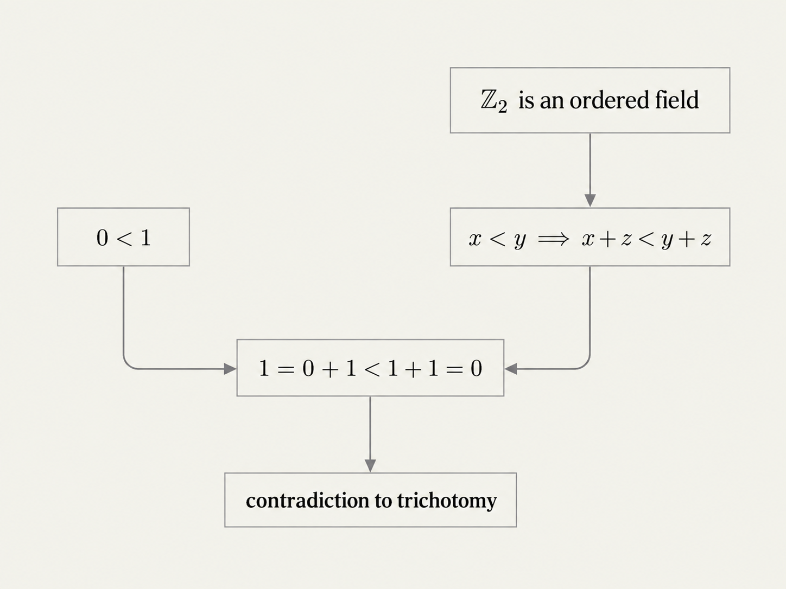
If instead
\[ 1<0, \]the following shows \(1<0 \implies 0<1\), again contradicting trichotomy.
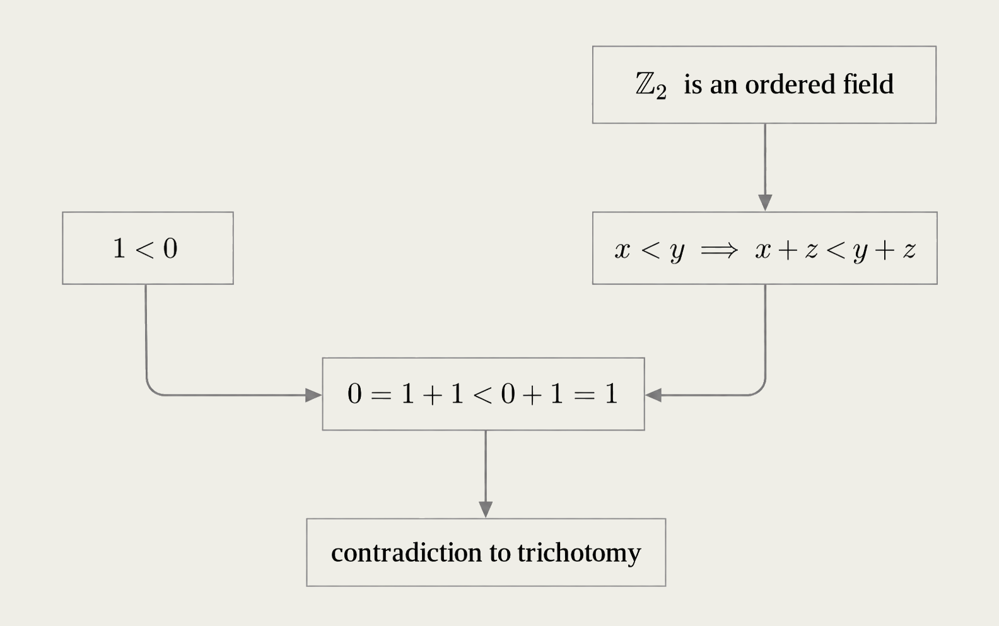
Since we have shown
\[ \mathbb{Z}_2\text{ is an ordered field} \implies \bigl(0<1 \iff 1<0\bigr), \]we achieve a contradiction, and so \(\mathbb{Z}_2\) cannot be an ordered field.
Question. Do there exist any ordered finite fields?
├── elementary-properties/
Theorem. Let \(F\) be a field and let \(x,y\in F\). Then
\[ x(-y)=-(xy) \qquad\text{and}\qquad -x=(-1)x. \]Proof. Since
\[ x(-y)+xy=x(-y+y)=x\cdot0=0, \]\(x(-y)\) is the additive inverse of \(xy\), so \(x(-y)=-(xy)\).
Similarly,
\[ (-1)x+x=(-1+1)x=0\cdot x=0, \]so \((-1)x\) is the additive inverse of \(x\), hence \(-x=(-1)x\).
Theorem. Let \((F,<)\) be an ordered field. For \(x\in F\), it holds that
\[ 0<x \iff -x<0. \]Proof.
We show \(-x<0 \implies 0<x\). The other direction is similar.
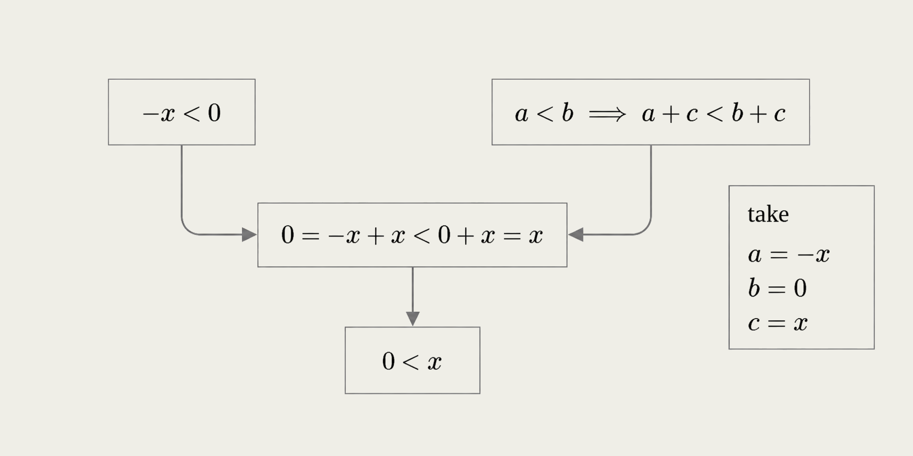
Theorem. Let \((F,<)\) be an ordered field and let \(x,y\in F\). If \(0<x\) and \(y<0\), then
\[ xy<0. \]Proof.
Preceding theorem gives \(y<0 \implies 0<-y\).
By definition of ordered field and preceding theorem, we have:
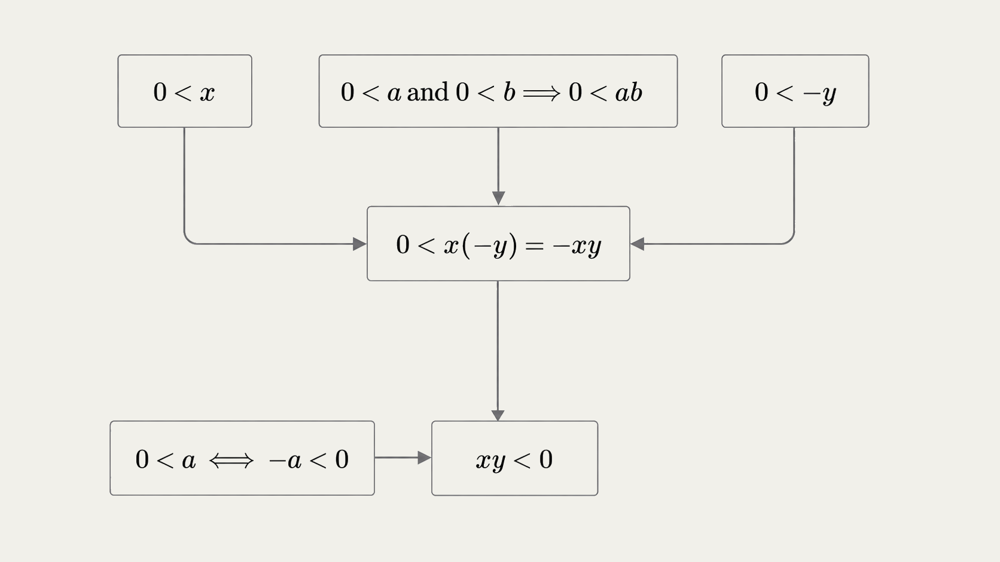
├── lub-and-glb/
Let \((S,<)\) be an ordered set.
Recall:
- \((S,<)\) has the least upper bound property (lub) when
\(E\subset S\) bounded above and nonempty \(\implies\) \(E\) has a supremum in \(S\). - \((S,<)\) has the greatest lower bound property (glb) when
\(E\subset S\) bounded below and nonempty \(\implies\) \(E\) has an infimum in \(S\).
Remark. In fact, lub and glb are equivalent for any ordered set. For an ordered field, there is a particularly simple proof using negation, which we give below.
Theorem. Let \((F,<)\) be an ordered field. Then \(F\) has the least upper bound property if and only if \(F\) has the greatest lower bound property.
Proof. We prove \({\rm lub} \implies {\rm glb}\). The other direction is similar.
Suppose \((F,<)\) has the least upper bound property.
Let \(A\subset F\) be nonempty and bounded below.
Define
\[ B=\{-x:x\in A\}. \]Plan:
- show \(B\) is bounded above
- use lub \(\Rightarrow \sup B\) exists
- show \(-\sup B\) is a lower bound of \(A\)
- Show \(\inf A\) exists and \(\inf A=-\sup B\).
Let \(a\) be a lower bound of \(A\).
We show \(-a\) is an upper bound of \(B\) and hence \(B\) is bounded above.
Thus, letting \(b\in B\) be arbitrary, we aim to show \(b\le -a\).
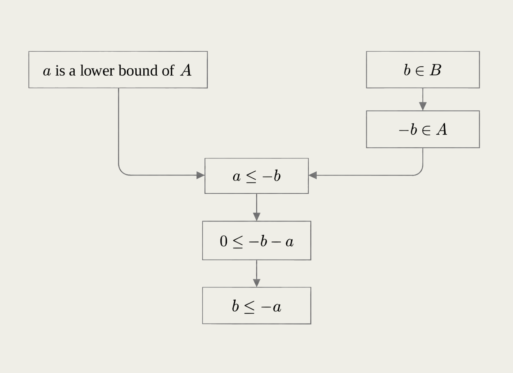
By the least upper bound property,
\[ c=\sup B \]exists in \(F\). (Note: \(A\neq\emptyset\implies B\neq\emptyset\).)
We show that \(-c\) is a lower bound of \(A\).
Thus, letting \(x\in A\) be arbitrary, we aim to show \(-c\le x\).
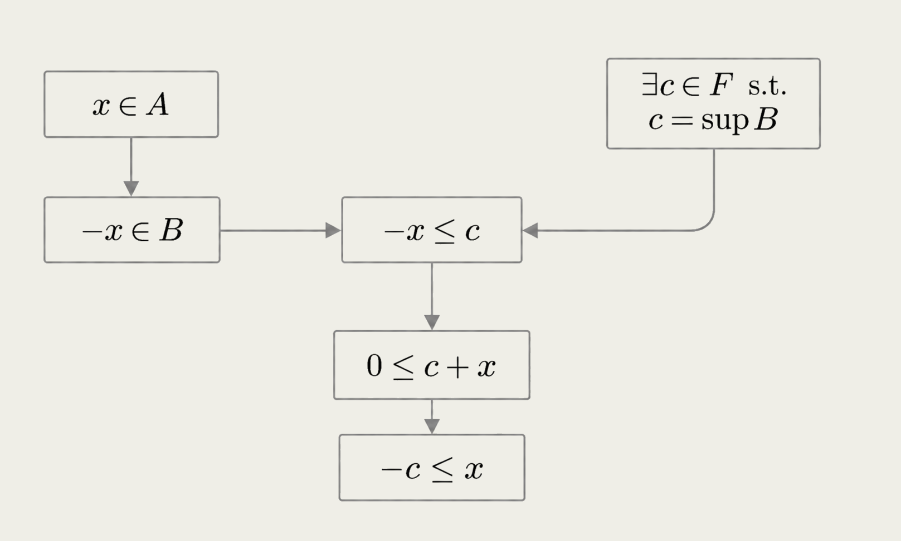
Now let \(a\) be any lower bound for \(A\).
We show that \(a\le -c\).
Since \(-c\) is a lower bound of \(A\), this establishes \(\inf A\) exists and \(\inf A=-c=-\sup B\).
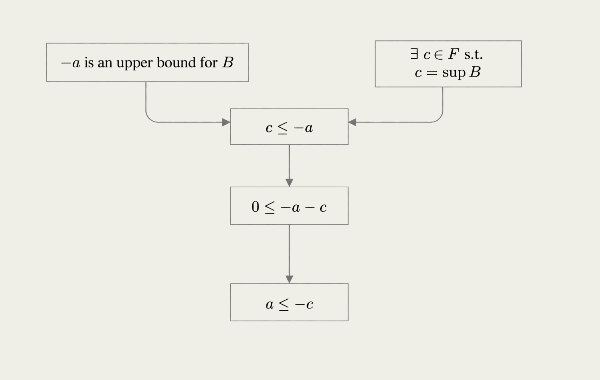
├── real-numbers/
Theorem. There exists an ordered field \(\mathbb{R}\) such that \(\mathbb{Q}\subset\mathbb{R}\), such that \(\mathbb{Q}\) is a subfield of \(\mathbb{R}\), and such that \(\mathbb{R}\) has the least upper bound property.
Definition. Let \(F\) be a field and let \(K\subset F\). We call \(K\) a subfield of \(F\) if \(K\) is itself a field using the same addition and multiplication as \(F\).
Essential uniqueness. Any ordered field containing \(\mathbb{Q}\) as a subfield and having the least upper bound property can be put in one-to-one correspondence with \(\mathbb{R}\) in a way that preserves addition, multiplication, and order.
└── square-root-of-two/
Theorem. There exists a unique \(r\in\mathbb{R}\) such that
\[ r>0 \]and
\[ r^2=2. \]Proof. We break the proof into two parts: Existence and Uniqueness.
Existence follows from \(\mathbb{R}\) having lub.
Uniqueness follows from a direct calculation.
Define
\[ \widetilde{E}=\{x\in\mathbb{R}:x>0\text{ and }x^2<2\}. \]\(\widetilde{E}\) is bounded above and nonempty; e.g., \(1\in\widetilde{E}\) and \(2\) is an upper bound.
Since \(\mathbb{R}\) has the least upper bound property,
\[ r=\sup\widetilde{E} \]exists.
As in the corresponding argument for \(\mathbb{Q}\), one shows that \(r>0\) and \(r^2=2\).
Suppose \(s>0\) also satisfies \(s^2=2\).
Then \(r+s>0\) and
\[ 0=r^2-s^2=(r+s)(r-s). \]Since \(r+s>0\), we have \(r+s\neq0\). Multiplying by \((r+s)^{-1}\) gives \(r-s=0\), i.e., \(r=s\).
├── archimedean-property-and-density-of-the-rationals/
├── archimedean-property/
Theorem. If \(x,y\in\mathbb{R}\) and \(x>0\), then there exists \(n\in\mathbb{N}\) such that
\[ nx>y. \]Remark. The ordered-field axioms alone do not rule out positive infinitesimals \(\varepsilon\) for which
\[ \{n\varepsilon:n\in\mathbb{N}\} \]is bounded.
\(\mathbb{R}\) satisfies both the Archimedean property and density of \(\mathbb{Q}\) because it is an ordered field with the least upper bound property.
An ordered field for which neither property holds is the hyperreal field \(\mathbb{R}^\ast\), a “field extension” of \(\mathbb{R}\) admitting “infinitesimals” and “infinities.”
There exists a positive infinitesimal \(\varepsilon\in\mathbb{R}^\ast\) such that
\[ n\varepsilon<1 \qquad\text{for every }n\in\mathbb{N}. \]Hence \(\{n\varepsilon:n\in\mathbb{N}\}\) is bounded.
Archimedean Property. If \(x,y\in\mathbb{R}\) and \(x>0\), then there exists \(n\in\mathbb{N}\) such that
\[ nx>y. \]Suppose \(x,y\in\mathbb{R}\) and \(x>0\).
We will show there exists \(n\in\mathbb{N}\) such that
\[ n>\frac{y}{x}. \]Suppose, for contradiction, that this is not the case.
Then, for every \(n\in\mathbb{N}\),
\[ n\leq\frac{y}{x}. \]Note. This implies \(\mathbb{N}\) is bounded above. Since \(\mathbb{R}\) satisfies lub, \(a=\sup\mathbb{N}\) exists in \(\mathbb{R}\).
We use \(a=\sup\mathbb{N}\) exists in \(\mathbb{R}\) \(\implies\) \(a-1\) not an upper bound of \(\mathbb{N}\) to arrive at a contradiction:
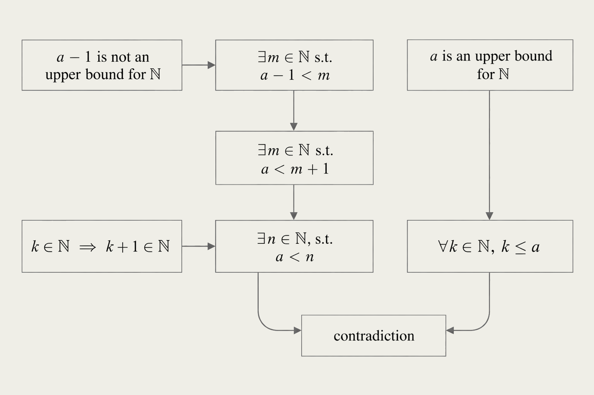
Since
\[ \forall n\in\mathbb{N},\ n\leq\frac{y}{x} \]results in a contradiction, we conclude \(\exists n\in\mathbb{N}\) s.t. \(nx>y\), as desired.
└── density-of-the-rationals/
For \(x,y\in\mathbb{R}\) with \(x<y\), there exists \(r\in\mathbb{R}\) such that \(x<r<y\).
For example, take
\[ r=\frac{x+y}{2}. \]Can we always find \(r\in\mathbb{Q}\) such that \(x<r<y\)?
In particular: can we always find a rational between any two irrationals, no matter how close they are?
The answer is yes:
If \(x,y\in\mathbb{R}\) and \(x<y\), then there exists \(r\in\mathbb{Q}\) such that
\[ x<r<y. \]Remark. For the hyperreal field \(\mathbb{R}^\ast\),
\[ \nexists q\in\mathbb{Q}\text{ such that }0<q<\varepsilon, \]so \(\mathbb{Q}\) is not dense in \(\mathbb{R}^\ast\).
Density of \(\mathbb{Q}\). If \(x,y\in\mathbb{R}\) and \(x<y\), then there exists \(r\in\mathbb{Q}\) such that
\[ x<r<y. \]Suppose \(x,y\in\mathbb{R}\) and \(x<y\).
We consider three cases:
Case 1: \(0\leq x<y\).
Case 2: \(x<0<y\).
Case 3: \(x<y\leq0\).
Case 1: \(0\leq x<y\).
Plan
1. Choose the denominator \(n\) so that rationals with denominator \(n\) are spaced more closely than \(x\) and \(y\). By the Archimedean property, choose \(n\in\mathbb{N}\) such that
\[ \frac{1}{n}<y-x, \]equivalently,
\[ x+\frac{1}{n}<y. \]2. Choose the least rational of the form \(m/n\) that is greater than \(x\). By well-ordering, choose the least \(m\in\mathbb{N}\) such that
\[ x<\frac{m}{n}. \]Minimality of \(m\) gives
\[ \frac{m-1}{n}\leq x<\frac{m}{n}, \]so
\[ x<\frac{m}{n}\leq x+\frac{1}{n}. \]3. Show that this rational is less than \(y\). Since
\[ x<\frac{m}{n}\leq x+\frac{1}{n}<y, \]we obtain
\[ x<\frac{m}{n}<y. \]We first show
\[ x+\frac{1}{n}<y \]which is equivalent to
\[ nx+1<ny. \]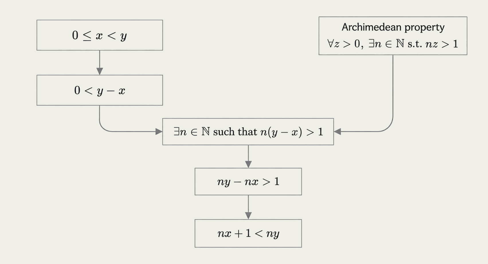
Next we show there exists a least \(m\in\mathbb{N}\) such that \(x<m/n\).
Let
\[ S=\{k\in\mathbb{N}:nx<k\}. \]Archimedean property \(\implies S\neq\emptyset\) since \(\exists l\in\mathbb{N}\) s.t. \(l>nx\). (here "\(x=1\)" and "\(y=nx\)")
Well ordering property of \(\mathbb{N}\implies S\) has least element \(m\).
Hence \(m\in S\), so \(nx<m\). Since \(n>0\),
\[ x<\frac{m}{n}. \]We claim that
\[ m-1\leq nx. \]If \(m=1\), then \(m-1=0\leq nx\) since \(x\geq0\).
If \(m>1\), then \(m-1\in\mathbb{N}\).
Since \(m\) is the least element of \(S\), \(m-1\notin S\), so again \(m-1\leq nx\).
Since \(m-1\leq nx\), we have \(m\leq nx+1<ny\).
Since \(n>0\),
\[ \frac{m}{n}<y. \]But \(x<m/n\).
Since \(m/n\in\mathbb{Q}\), we conclude there exists \(q\in\mathbb{Q}\) such that
\[ x<q<y. \]Case 2: \(x<0<y\).
Take \(r=0\in\mathbb{Q}\).
Then \(x<r<y\).
Case 3: \(x<y\leq0\).
We may reduce Case 3 to Case 1 as follows.
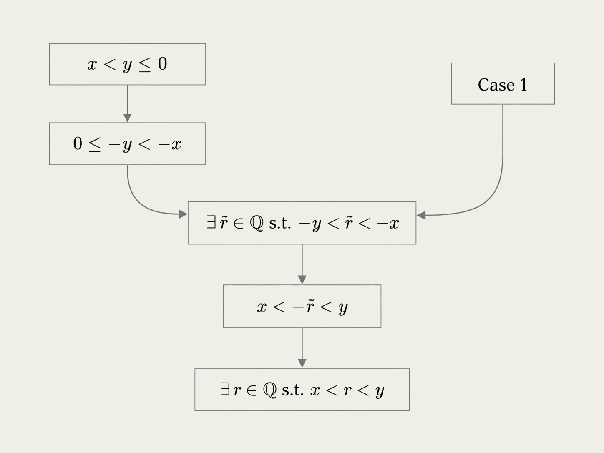
Therefore, whenever \(x<y\), there exists \(r\in\mathbb{Q}\) such that \(x<r<y\).
├── properties-of-the-supremum/
├── a-supremum-example/
Theorem.
Let
\[ E=\left\{1-\frac1n:n\in\mathbb{N}\right\}\subset\mathbb{R}. \]Then
\[ \sup E=1. \]Proof.
Plan
- Show a natural candidate \(s\) for the supremum is an upper bound.
- Show that any upper bound \(x\) satisfies \(s\leq x\).
- Conclude the supremum is \(s\).
1. We show \(1\) is an upper bound of \(E=\{1-1/n:n\in\mathbb{N}\}\); i.e.,
\[ \forall n\in\mathbb{N},\qquad 1-\frac{1}{n}\leq1. \]Useful proof strategy. When trying to prove an inequality, sometimes it is easier to start with the desired inequality and reverse engineer until you arrive at something known to be true.
Indeed, the reverse engineering
\[ 1-\frac{1}{n}\leq1 \iff 1\leq1+\frac{1}{n} \iff 0\leq\frac{1}{n} \iff 0<n \]gives us
\[ n\in\mathbb{N} \implies 0<n \implies 0\leq\frac{1}{n} \implies 1\leq1+\frac{1}{n} \implies 1-\frac{1}{n}\leq1. \]2. We now show that if \(x\) is an upper bound of \(E=\{1-1/n:n\in\mathbb{N}\}\), then \(1\leq x\).
For sake of contradiction suppose \(x<1\), and hence \(0<1-x\).
Recall the Archimedean property: if \(a,b\in\mathbb{R}\) and \(a>0\), then \(\exists n\in\mathbb{N}\) s.t. \(na>b\).
Thus \(\exists n\in\mathbb{N}\) s.t.
\[ 1<n(1-x). \]But
\[ 1<n(1-x) \implies \frac{1}{n}<1-x \implies x<1-\frac{1}{n}. \]Since \(1-\frac{1}{n}\in E\), this contradicts the assumption that \(x\) is an upper bound of \(E\).
Therefore, if \(x\) is an upper bound of \(E\), then \(1\leq x\).
3. Since step 1 shows that \(1\) is an upper bound of \(E\), and step 2 shows that every upper bound \(x\) of \(E\) satisfies \(1\leq x\), we conclude
\[ \sup E=1. \]├── characterizing-the-supremum/
We now prove some results about supremums and infimums that will make them easier to use.
Theorem. Suppose \(S\subset\mathbb{R}\) is nonempty and bounded above. Then \(x=\sup S\) if and only if:
- \(x\) is an upper bound for \(S\).
- For every \(\varepsilon>0\), there exists \(y\in S\) such that \[ x-\varepsilon<y\leq x. \]
The proof is left as an exercise.
├── suprema-under-translation-and-positive-scaling/
Notation. For \(x\in\mathbb{R}\) and \(A\subset\mathbb{R}\), define
\[ x+A:=\{x+a:a\in A\}, \] \[ xA:=\{xa:a\in A\}. \]Theorem. If \(x\in\mathbb{R}\) and \(A\) is bounded above, then \(x+A\) is bounded above and
\[ \sup(x+A)=x+\sup A. \]If \(x>0\) and \(A\) is bounded above, then \(xA\) is bounded above and
\[ \sup(xA)=x\sup A. \]Proof.
Plan
1. Show that \(x+\sup A\) is an upper bound of \(x+A\).
2. For \(x>0\), show that \(x\sup A\) is an upper bound of \(xA\).
3. Use the characterization of the supremum above to conclude that these upper bounds are in fact the corresponding suprema.
1. We show \(x+\sup A\) is an upper bound of \(x+A\).
Every point in \(x+A\) is, by definition, of the form \(x+a\) for some \(a\in A\).
For such \(a\),
\[ a\leq\sup A, \]so
\[ x+a\leq x+\sup A. \]Thus \(x+\sup A\) is an upper bound for \(x+A\).
2. We now show \(x\sup A\) is an upper bound of \(xA\).
For every \(a\in A\),
\[ a\leq\sup A. \]Since \(x>0\),
\[ xa\leq x\sup A. \]Thus \(x\sup A\) is an upper bound for \(xA\).
3. We now use the characterization of suprema above to show each upper bound is a supremum.
Recall the characterization of the supremum.
If \(M\) is an upper bound for a set \(E\), and if for every \(\varepsilon>0\) there exists \(y\in E\) such that
\[ M-\varepsilon<y\leq M, \]then \(M=\sup E\).
3a. We show \(x+\sup A=\sup(x+A)\).
Let \(\varepsilon>0\).
Since \(\sup A\) is the supremum of \(A\), there exists \(y\in A\) such that
\[ \sup A-\varepsilon<y\leq\sup A. \]Adding \(x\) gives
\[ (x+\sup A)-\varepsilon<x+y\leq x+\sup A. \]Therefore, by the characterization of the supremum,
\[ \sup(x+A)=x+\sup A. \]3b. We show \(x\sup A=\sup(xA)\).
Now assume \(x>0\).
Let \(\varepsilon>0\).
Since \(\varepsilon/x>0\), there exists \(z\in A\) such that
\[ \sup A-\frac{\varepsilon}{x}<z\leq\sup A. \]Multiplying by \(x\) gives
\[ x\sup A-\varepsilon<xz\leq x\sup A. \]Therefore, by the characterization of the supremum,
\[ \sup(xA)=x\sup A. \]└── comparing-suprema-and-infima/
Theorem. Let \(A,B\subset\mathbb{R}\) such that for every \(x\in A\) and every \(y\in B\),
\[ x\leq y. \]Then
\[ \sup A\leq\inf B. \]The proof is left to the reader.
├── the-uncountability-of-the-reals/
├── outline/
Fundamental question: What is the cardinality of \(\mathbb{R}\)?
In this unit we:
- formalize decimal representations;
- use a diagonalization argument on decimal representations to conclude \((0,1]\) is uncountable;
- conclude \(|\mathbb{N}|<|\mathbb{R}|\).
Recall. A set \(X\) is countable if there is a bijection \(f:X\to\mathbb{N}\).
├── decimal-representations/
Goal: formalize decimal representations of real numbers.
Observe:
- This suggests a formal way to define decimal representations for at least rational numbers.
- What about general real numbers?
If \(x\geq0\), then there exist \(k\in\mathbb{N}\) and digits
\[ d_j\in\{0,1,\ldots,9\}, \qquad j\leq k, \]such that
\[ x= \sup\left\{ d_k\cdot10^k+\cdots+d_1\cdot10+d_0 +d_{-1}\cdot10^{-1}+\cdots+d_{-n}\cdot10^{-n} :n\in\mathbb{N} \right\}. \]Proof. Take for granted.
Definition. Let \(x\geq0\).
A decimal representation of \(x\) is an expression
\[ x=d_kd_{k-1}\cdots d_1d_0.d_{-1}d_{-2}\cdots \]where \(k\in\mathbb{N}\cup\{0\}\) and \(d_j\in\{0,1,\ldots,9\}\) for every integer \(j\leq k\), are such that
\[ x= \sup\left\{ d_k\cdot10^k+\cdots+d_1\cdot10+d_0 +d_{-1}\cdot10^{-1}+\cdots+d_{-n}\cdot10^{-n} :n\in\mathbb{N} \right\}. \]Remark.
(i) If \(\exists N\in\mathbb{N}\) such that \(d_{-j}=0\) for \(j>N\) and \(d_{-N}\neq 0\), then we write
\[ x=d_kd_{k-1}\ldots d_1d_0.d_{-1}d_{-2}\ldots d_{-N} \](ii) Each decimal representation determines a unique real number, but a real number may have more than one decimal representation; e.g., \(0.999\ldots=1\).
(iii) One may define decimal representations for negative real numbers too.
(iv) Given digits \(d_{-j}\in\{0,1,\ldots,9\}\), \(j\in\mathbb{N}\), the supremum
\[ \sup\left\{ d_{-1}10^{-1}+d_{-2}10^{-2}+\cdots+d_{-n}10^{-n} :n\in\mathbb{N} \right\} \]defines a real number in \([0,1]\).
If \(x\in(0,1]\) then
\[ \exists!\ d_{-j}\in\{0,1,\ldots,9\},\quad j\in\mathbb{N} \]such that
- \(x=0.d_{-1}d_{-2}\ldots\)
- if \(n\in\mathbb{N}\), then
We call \(0.d_{-1}d_{-2}\ldots\) the distinguished decimal representation of \(x\).
Proof. Take for granted.
Remark. This theorem does not contradict the general nonuniqueness of decimal representations: it singles out one distinguished decimal representation.
E.g., even though
\[ 0.499\ldots=0.5 \]the following is false
\[ 0.5<0.5\leq 0.5+10^{-1} \]└── cantors-diagonalization-argument/
Goal: show that \((0,1]\) is uncountable (and hence \(\mathbb{R}\) is uncountable).
- Maybe this is surprising: the collection
somehow “feels” countable.
- On the contrary: we use decimal representations to show a bijection \(\mathbb{N}\to(0,1]\) cannot exist.
\((0,1]\) is uncountable.
Proof sketch.
0. Show that \((0,1]\) is not finite. Consequently, if \((0,1]\) were countable, then it would be countably infinite.
1. Assume for contradiction there exists a bijection \(\mathbb{N}\to(0,1]\).
2. Make the correspondence \(n\leftrightarrow\) "nth decimal representation".
3. Diagonalize step 2 to generate a decimal representation not equal to any one from step 2.
4. Combining steps 1 and 3 furnishes a contradiction.
Proof.
0. Let
\[ a_{-j}^{(n)}= \begin{cases} 1, & \text{if }j=n,\\ 0, & \text{if }j\neq n. \end{cases} \]Define
\[ x_n=0.a_{-1}^{(n)}a_{-2}^{(n)}\ldots. \]Thus \(x_n=10^{-n}\).
The mapping \(\mathbb{N}\to(0,1]\) defined by \(n\mapsto x_n\) is injective, and so \((0,1]\) is infinite.
1. Suppose for contradiction \((0,1]\) is countable.
Then \(\exists\) a bijection \(x:\mathbb{N}\to(0,1]\).
2. Since we may identify each number in \((0,1]\) with its distinguished decimal representation, 1. allows us to enumerate the distinguished decimal representations of numbers in \((0,1]\):
\[ \begin{aligned} x(1)&=0.d_{-1}^{(1)}d_{-2}^{(1)}d_{-3}^{(1)}\ldots\\ x(2)&=0.d_{-1}^{(2)}d_{-2}^{(2)}d_{-3}^{(2)}\ldots\\ &\vdots\\ x(n)&=0.d_{-1}^{(n)}d_{-2}^{(n)}d_{-3}^{(n)}\ldots\\ &\vdots \end{aligned} \]3. Define digits \(e_{-j}\) by
\[ e_{-j}= \begin{cases} 1, & d_{-j}^{(j)}\neq 1,\\ 2, & d_{-j}^{(j)}=1. \end{cases} \]Define
\[ y= \sup\left\{ e_{-1}10^{-1}+e_{-2}10^{-2}+\cdots+e_{-n}10^{-n} :n\in\mathbb{N} \right\}. \]Since \(e_{-j}\geq 1\), there holds
\[ \forall n\in\mathbb{N},\quad 0.e_{-1}\ldots e_{-n}<y\leq 0.e_{-1}\ldots e_{-n}+10^{-n}. \]In particular, \(0.e_{-1}e_{-2}\ldots\) is the distinguished decimal representation of \(y\).
Illustration.
The diagram below depicts an example construction of \(y\).
Observe.
- \(e_{-1}=1\neq 3=d_{-1}^{(1)}\implies y\neq x(1)\).
- \(e_{-2}=2\neq 1=d_{-2}^{(2)}\implies y\neq x(2)\).
- \(e_{-3}=1\neq 4=d_{-3}^{(3)}\implies y\neq x(3)\).
- And so on.
4. Given \(n\in\mathbb{N}\)
\[ e_{-n}\neq d_{-n}^{(n)}\implies y\neq x(n). \]But \(e_{-n}\neq d_{-n}^{(n)}\) by definition.
Therefore the distinguished decimal representation
\[ 0.e_{-1}e_{-2}e_{-3}\ldots \]lies outside the collection of distinguished decimal representations
\[ \{0.d_{-1}^{(n)}d_{-2}^{(n)}\ldots:n\in\mathbb{N}\} \]obtainable from \(x:\mathbb{N}\to(0,1]\).
Therefore there cannot exist a bijection \(x:\mathbb{N}\to(0,1]\) and so \((0,1]\) is uncountable.
\(\mathbb{R}\) is uncountable.
Proof.
Since \((0,1]\subset\mathbb{R}\) is uncountable, \(\mathbb{R}\) is uncountable.
├── the-absolute-value-and-triangle-inequality/
├── the-absolute-value/
For \(x\in\mathbb{R}\), define
\[ |x|= \begin{cases} x, & x\geq0,\\ -x, & x<0. \end{cases} \]Absolute value has the following properties:
- \(|x|\geq0\), and \(|x|=0\) if and only if \(x=0\).
- \(|-x|=|x|\).
- \(|xy|=|x||y|\).
- \(|x^2|=x^2=|x|^2\).
- \(|x|\leq y\) if and only if \(-y\leq x\leq y\).
- \(x\leq|x|\).
Exercise.
Prove each of these properties directly from the definition of absolute value.
└── the-triangle-inequality/
For all \(x,y\in\mathbb{R}\),
\[ |x+y|\leq|x|+|y|. \]Proof.
1. Observe
\[ |x+y|\leq|x|+|y| \iff -(|x|+|y|)\leq x+y\leq |x|+|y|. \]2. But
\[ x\leq|x|,\ y\leq|y|\implies x+y\leq|x|+|y|. \]3. and
\[ -x\leq|-x|,\ -y\leq|-y|\implies -x-y\leq|-x|+|-y|\implies-(|x|+|y|)\leq x+y. \]4. Combining 2. and 3. gives
\[ -(|x|+|y|)\leq x+y\leq|x|+|y|. \]├── sequences-and-limits/
├── outline/
So we've formalized the real numbers. Now what?
We begin studying real analysis proper.
In this unit we:
- Define sequences of real numbers.
- Formalize notions of convergence and divergence.
- Study properties and examples of sequences.
├── why-sequences/
There are at least two situations in which it is natural to consider sequences and their convergence.
-
A sequence may encode a mathematical object; e.g., a Fourier series:
\[ \{c_n\} \iff f\sim\sum_{n\in\mathbb{Z}}c_ne^{inx}. \]A natural question is: What properties of \(f\) are characterized by type of convergence of the sequence \(\{c_n\}\)?
-
When solving certain problems, you may try generating a sequence of approximate solutions hoping the sequence converges to a solution.
For example, suppose we wish to calculate
\[ x=\operatorname*{argmin}\Psi \]of some function \(\Psi\). One might try constructing or showing existence of \(\{x_n\}\) satisfying
\[ \Psi(x_n)\geq\Psi(x_{n+1})\geq\cdots, \qquad \Psi(x_n)\to\min\Psi, \]hoping \(\{x_n\}\) converges to some \(x\).
├── sequences-of-real-numbers/
A sequence of real numbers is a function
\[ x:\mathbb{N}\to\mathbb{R}. \]Notation:
- Often write \(x_n\) for \(x(n)\) and understand \(x_n\) as the \(n\)th term in the sequence.
- Often write
for a sequence \(x:\mathbb{N}\to\mathbb{R}\).
A sequence \(\{x_n\}\) is bounded if there exists \(M\geq0\) such that
\[ \forall n\in\mathbb{N},\quad |x_n|\leq M. \]Example.
Let \(\{x_n\}\) be the sequence defined by
\[ \forall n\in\mathbb{N},\quad x_n=\frac{1}{n}. \]Given \(n\in\mathbb{N}\),
\[ n\geq1\implies \frac{1}{n}\leq1. \]Thus
\[ \forall n\in\mathbb{N},\quad |x_n|=\frac{1}{n}\leq1. \]Therefore \(\{x_n\}\) is bounded with \(M=1\).
Important: a sequence is a function \(x:\mathbb{N}\to\mathbb{R}\), not a set of real numbers.
For example
\[ \{(-1)^n\}_{n=1}^{\infty} \]is the function \(x:\mathbb{N}\to\mathbb{R}\) defined by \(x(n)=(-1)^n\), whereas
\[ \{(-1)^{n}:n\in\mathbb{N}\}=\{-1,1\}. \]├── convergence-of-sequences/
Let \(\{x_n\}\) be a sequence and \(x\in\mathbb{R}\).
We say \(\{x_n\}\) converges to \(x\) if:
\(\forall\,\epsilon>0,\ \exists N\in\mathbb{N}\) such that
\[ n\geq N\implies |x_n-x|<\epsilon. \]In this case we write
\[ \lim_{n\to\infty} x_n = x\quad \text{or}\quad \lim x_n = x\quad \text{or}\quad x_n\to x \]and say \(\{x_n\}\) is convergent and has limit \(x\).
If \(\{x_n\}\) is not convergent, we say it is divergent.
Which \(N\) seems to satisfy \(n\geq N\implies |x_n-x|<\epsilon\)?
Note: \(|x_n-x|<\epsilon\iff x-\epsilon<x_n<x+\epsilon\).
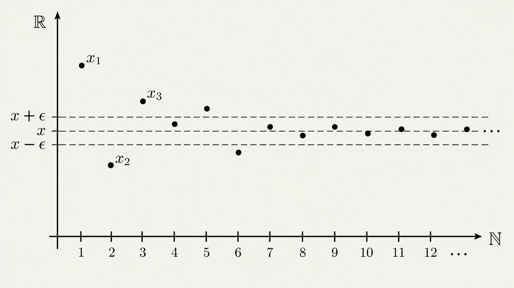
Let \(\{x_n\}\) be a sequence.
To show that \(\{x_n\}\) does not converge to \(x\in\mathbb{R}\), one must show:
There exists \(\epsilon>0\) such that for all \(N\in\mathbb{N}\) there exists \(n\geq N\) such that
\[ |x_n-x|\geq\epsilon. \]Viz., \(\{x_n\}\) always admits a term a positive distance away from \(x\).
In particular: \(\{x_n\}\) is divergent if this holds for every \(x\in\mathbb{R}\).
Observe below that every odd term remains more than \(\epsilon\) away from 1.
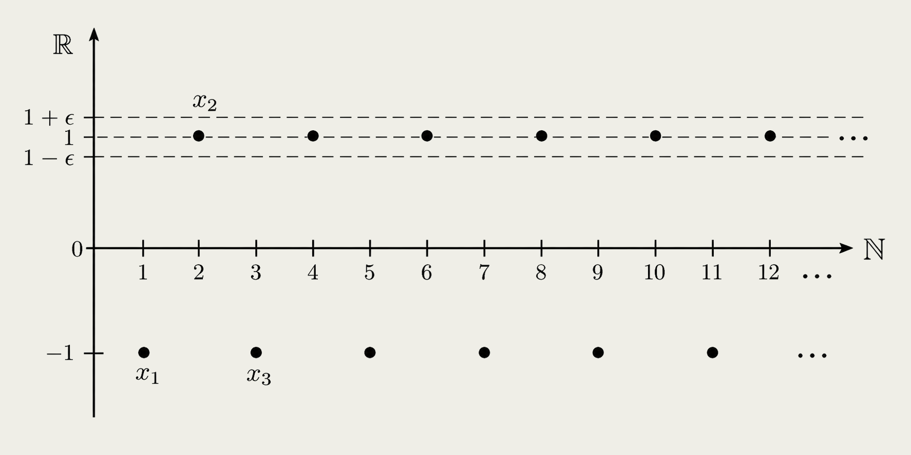
├── uniqueness-of-limits/
Goal: Prove
- two real numbers arbitrarily close to each other must be the same number;
- if a sequence converges, then its limit is unique.
Note. There are "geometric" settings where limits of sequences are not unique.
Let \(x,y\in\mathbb{R}\) be such that
\[ |x-y|<\epsilon \]for all \(\epsilon>0\).
Then \(x=y\).
Proof.
For contradiction, suppose \(x\neq y\).
Need to use
\[ \forall\,\epsilon>0,\quad |x-y|<\epsilon \]to establish contradiction.
Idea: choose specific \(\epsilon>0\).
Observe: \(x\neq y\) gives
\[ |x-y|>0 \]Idea: choose \(\epsilon=|x-y|\).
But then
\[ (\forall\,\epsilon>0,\ |x-y|<\epsilon)\implies |x-y|<|x-y|, \]a contradiction.
Let \(\{x_n\}\) be a sequence in \(\mathbb{R}\) and let \(x,y\in\mathbb{R}\).
If \(x_n\to x\) and \(x_n\to y\), then \(x=y\).
Proof.
Plan: show that
\[ \forall \epsilon>0,\quad |x-y|<\epsilon. \]The preceding theorem would then imply \(x=y\).
We have
(i) \(x_n\to x\)
(ii) \(x_n\to y\)
and want
(iii) \(|x-y|<\epsilon\) for all \(\epsilon>0\).
Idea: combine (i) and (ii) to obtain (iii).
Observe
(i) \(x_n\to x\) \(\iff \forall\epsilon>0,\ \exists N_1\in\mathbb{N}\) such that \(n\geq N_1\implies |x_n-x|<\epsilon\)
(ii) \(x_n\to y\) \(\iff \forall\epsilon>0,\ \exists N_2\in\mathbb{N}\) such that \(n\geq N_2\implies |x_n-y|<\epsilon\)
Recall: triangle inequality asserts
\[ \forall a,b,c\in\mathbb{R},\quad |a-b|\leq|a-c|+|b-c|. \]Idea: use (i) and (ii) with triangle inequality to obtain the estimate
\[ \forall\epsilon>0,\quad |x-y|<\epsilon. \]Let \(\epsilon>0\) be arbitrary.
Let \(N_1,N_2\in\mathbb{N}\) be such that
(i) \(n\geq N_1\implies |x_n-x|<\epsilon/2\)
(ii) \(n\geq N_2\implies |x_n-y|<\epsilon/2\)
Let \(N=\max\{N_1,N_2\}\).
Then \(n\geq N \implies |x_n-x|<\epsilon/2\) and \(|x_n-y|<\epsilon/2\).
Combining with the triangle inequality, for all \(n\geq N\) there holds
\[ |x-y|=|x-x_n+x_n-y|\leq|x-x_n|+|x_n-y|<\frac{\epsilon}{2}+\frac{\epsilon}{2}=\epsilon. \]Since \(\epsilon>0\) was arbitrary, we conclude \(x=y\).
└── examples/
(i) Let \(c\in\mathbb{R}\) and define \(\{x_n\}\) by
\[ \forall n\in\mathbb{N},\quad x_n=c. \]Then
\[ \lim x_n=c. \](ii) Define \(\{x_n\}\) by
\[ \forall n\in\mathbb{N},\quad x_n=3+\frac{(-1)^n}{n}. \]Then
\[ \lim x_n=3. \]Proof.
(i) Let \({x_n}\) be defined by
\[ \forall n\in\mathbb{N},\quad x_n=c. \]Let \(\epsilon>0\) and choose \(N=1\).
For every \(n\geq N\),
\[ |x_n-c|=|c-c|=0<\epsilon. \]Therefore \(\lim x_n=c\).
(ii) Let \({x_n}\) be defined by
\[ \forall n\in\mathbb{N},\quad x_n=3+\frac{(-1)^n}{n}. \]Let \(\epsilon>0\).
By the Archimedean property, choose \(N\in\mathbb{N}\) such that
\[ N>\frac1\epsilon. \]Then for every \(n\geq N\),
\[ |x_n-3|=\left|\frac{(-1)^n}{n}\right|=\frac1n\leq\frac1N<\epsilon. \]Therefore \(\lim x_n=3\).
├── convergent-sequences-are-bounded/
├── goals/
- Partially characterize convergent sequences; i.e., offer an answer to "What do all convergent sequences necessarily satisfy?"
- Witness the proof strategy of splitting a problem into special cases.
└── theorem-and-proof/
Let \(\{x_n\}\) be a sequence of real numbers.
If \(\{x_n\}\) is convergent, then \(\{x_n\}\) is bounded: \(\exists M\geq0\) such that
\[ \forall n\in\mathbb{N},\quad |x_n|\leq M. \]Proof.
Suppose \(x_n\to x\); i.e., \(\forall\epsilon>0\), \(\exists N\in\mathbb{N}\) such that
\[ n\geq N\implies |x_n-x|<\epsilon. \]Observe: Given \(n\in\mathbb{N}\), if \(C>0\) and if
\[ |x_n-x|<C, \]then
\[ |x_n| =|x_n-x+x| \leq|x-x_n|+|x| \leq C+|x|. \]Idea: If \(\epsilon>0\) and if \(|x_n-x|<\epsilon\) for \(n\geq N\), then we need only control finitely many terms
\[ |x_1|,|x_2|,\ldots,|x_{N-1}|. \]- Fix \(\epsilon>0\) and let \(N\in\mathbb{N}\), \(N\geq2\), be such that
- Define
- Then
and
\[ |x_n| \leq|x-x_n|+|x| \leq\epsilon+|x| \qquad\text{for }n\geq N. \]- Lastly, define
- Then
- Since \(|x_n|\leq M\) for all \(n\in\mathbb{N}\), we conclude \(\{x_n\}\) is bounded.
In short:
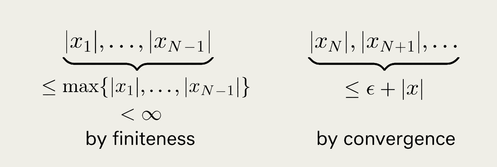
├── monotone-sequences/
├── goals/
- Identify a sufficient condition for sequence convergence.
- In particular, we identify a class of sequences whose convergent sequences are completely characterized by a necessary and sufficient condition.
├── definition-and-examples/
A sequence \(\{x_n\}\) is monotone increasing if, for every \(n\in\mathbb{N}\),
\[ x_n\leq x_{n+1}. \]A sequence \(\{x_n\}\) is monotone decreasing if, for every \(n\in\mathbb{N}\),
\[ x_n\geq x_{n+1}. \]If \(\{x_n\}\) is either monotone increasing or monotone decreasing, we say that \(\{x_n\}\) is monotone.
- \(a_n=\frac1n\) is monotone decreasing.
- \(b_n=-\frac1n\) is monotone increasing.
- \(c_n=2(-1)^n\) is neither monotone increasing nor monotone decreasing.
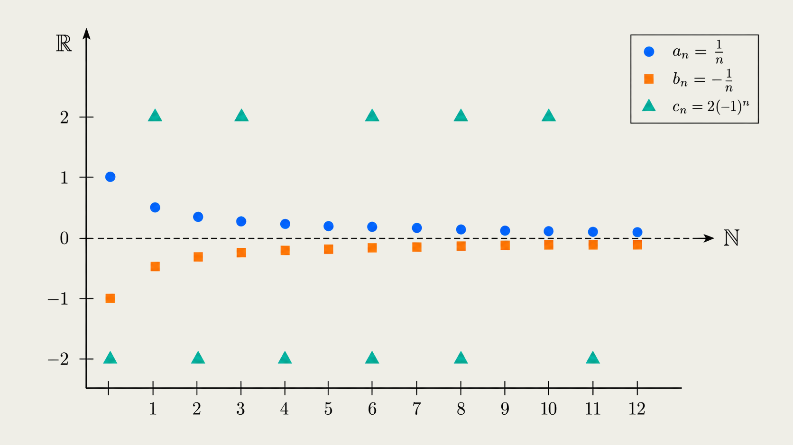
└── monotone-convergence/
Remark. The preceding theorem asserts: if \(\{x_n\}\) is convergent, then \(\{x_n\}\) is bounded.
In general, the converse is false; e.g., consider
\[ x_n=(-1)^n. \]However, if \(\{x_n\}\) is bounded and monotone, then \(\{x_n\}\) indeed converges.
This result is contained in the following two theorems.
Theorem. Let \(\{x_n\}\) be a monotone increasing sequence.
Then \(\{x_n\}\) is convergent if and only if \(\{x_n\}\) is bounded above.
Moreover,
\[ \lim_{n\to\infty}x_n = \sup\{x_n:n\in\mathbb{N}\}. \]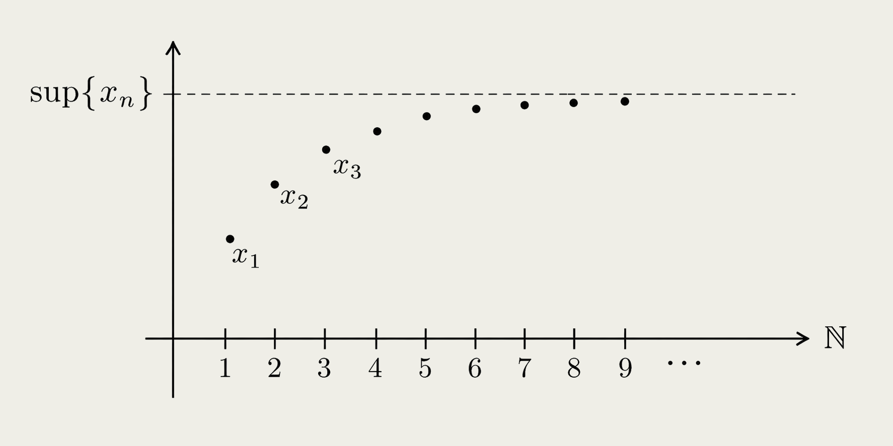
Proof.
1. We have from the preceding theorem that, if \(\{x_n\}\) is convergent, then \(\{x_n\}\) is bounded and hence bounded above.
Suppose now \(\{x_n\}\) is bounded above and monotone increasing.
2. Since \(\{x_n\}\) is bounded above, by the least upper bound property,
\[ x:=\sup\{x_n:n\in\mathbb{N}\} \]exists.
We prove
\[ x_n\to x. \]Viz., \(\forall\epsilon>0\), \(\exists N\in\mathbb{N}\) such that
\[ n\geq N\implies |x-x_n|<\epsilon. \]3. Let \(\epsilon>0\) be arbitrary.
Since
\[ x=\sup\{x_n:n\in\mathbb{N}\}, \]there exists \(N\in\mathbb{N}\) such that
\[ x-\epsilon<x_N\leq x. \]Recall: the existence of such an \(x_N\) is guaranteed by a characterization of supremum we proved before.
4. Since
\[ x-\epsilon<x_N\leq x,\qquad x=\sup\{x_n:n\in\mathbb{N}\}, \]and \(\{x_n\}\) is monotone increasing, it follows
\[ x-\epsilon<x_N\leq x_n\leq x \]for all \(n\geq N\).
5. Since
\[ \forall n\geq N,\qquad x-\epsilon<x_N\leq x_n\leq x, \qquad x=\sup\{x_n:n\in\mathbb{N}\}, \]there holds
\[ 0\leq x-x_n<\epsilon, \]and therefore
\[ \forall n\geq N,\qquad |x-x_n|=x-x_n<\epsilon. \]6. We have therefore shown: \(\forall\epsilon>0\), \(\exists N\in\mathbb{N}\) such that
\[ n\geq N\implies |x_n-x|<\epsilon; \]i.e.,
\[ \lim x_n = x = \sup\{x_n:n\in\mathbb{N}\}. \]Theorem. Let \(\{x_n\}\) be a monotone decreasing sequence.
Then \(\{x_n\}\) is convergent if and only if \(\{x_n\}\) is bounded below.
Moreover,
\[ \lim_{n\to\infty}x_n = \inf\{x_n:n\in\mathbb{N}\}. \]Proof.
The proof is similar to the monotone increasing case, replacing the supremum by the infimum and reversing the inequalities.
├── subsequences/
├── motivation/
Imagine an "almost monotonic" sequence such as
\[ x_n= \begin{cases} 1/n & \text{if \(n\) is even}\\ 1/n^3 & \text{if \(n\) is odd} \end{cases} \qquad\text{or}\qquad y_n= \begin{cases} 1+1/n & \text{if \(n\) is even}\\ 1/n & \text{if \(n\) is odd.} \end{cases} \]Evidently \(\{x_n\}\) ought to still converge and \(\{y_n\}\) ought to diverge.
This ought to be true because all terms in \(\{x_n\}\) behave similarly, whereas, \(\{y_n\}\) admits two "subsequences" converging to the distinct real numbers \(0\) and \(1\).
An Aside. Suppose \(\{y_n\}\) above represents a minimizing sequence of some function \(\Psi\):
\[ \Psi(y_n)\geq\Psi(y_{n+1}), \qquad \Psi(y_n)\to\min\Psi. \]This suggests \(\Psi\) may have two minimizing inputs: \(0\) and \(1\).
The point: a divergent sequence may still admit useful subsequences.
├── definition-and-examples/
Let \(\{x_n\}\) be a sequence and let \(\{n_k\}\) be a strictly increasing sequence of natural numbers.
Then the sequence
\[ \{x_{n_k}\}_{k=1}^{\infty} \]is called a subsequence of \(\{x_n\}\).
Example 1.
If \(\{x_n\}\) is any sequence, then \(\{x_{2n}\}\) and \(\{x_{2n-1}\}\) define the subsequences of even and odd terms of \(\{x_n\}\), respectively.
Example 2. Let \(\{x_n\}\) be defined by \(x_n = (-1)^n\).
Then
\[ \{x_{2n}\} = \{1,1,1,1,1,\ldots\} \] \[ \{x_{2n-1}\} = \{-1,-1,-1,-1,-1,\ldots\} \]define two distinct convergent subsequences with different limits.
├── limits-of-subsequences/
If \(x_n\to x\), then every subsequence \(\{x_{n_k}\}\) satisfies
\[ x_{n_k}\to x. \]Observe. Since \(\{n_k\}\) is a strictly increasing sequence of natural numbers,
\[ n_k\geq k \qquad\text{for every }k\in\mathbb{N}. \]Proof.
Suppose \(x_n\to x\). Let \(\epsilon>0\).
Choose \(M\in\mathbb{N}\) such that
\[ n\geq M\implies |x_n-x|<\epsilon. \]If \(k\geq M\), then
\[ n_k\geq k\geq M, \]and therefore
\[ |x_{n_k}-x|<\epsilon. \]Hence \(x_{n_k}\to x\).
└── using-subsequences-to-prove-divergence/
Let \(\{x_n\}\) be defined by
\[ x_n=(-1)^n. \]Its odd and even subsequences satisfy
\[ x_{2k-1}=-1 \qquad\Longrightarrow\qquad x_{2k-1}\to-1, \] \[ x_{2k}=1 \qquad\Longrightarrow\qquad x_{2k}\to1. \]Thus \(\{x_n\}\) has two subsequences converging to distinct limits.
If \(\{x_n\}\) converged to some \(x\in\mathbb{R}\), then every subsequence would converge to \(x\).
But
\[ x_{2k-1}\to-1 \qquad\text{and}\qquad x_{2k}\to1. \]Therefore \(\{(-1)^n\}\) diverges.
├── limit-theorems-for-sequences/
├── squeeze-theorem/
Theorem. Let \(\{a_n\}\), \(\{b_n\}\), and \(\{x_n\}\) be sequences of real numbers, and let \(x\in\mathbb{R}\).
Suppose that for every \(n\in\mathbb{N}\),
\[ a_n\leq x_n\leq b_n. \]Suppose also that \(\{a_n\}\) and \(\{b_n\}\) converge to the same limit:
\[ \lim a_n=x=\lim b_n. \]Then \(\{x_n\}\) converges and
\[ \lim x_n=x. \]WTS.
\[ \forall\varepsilon>0,\ \exists N\in\mathbb{N}\ \text{s.t.}\ \forall n\geq N,\quad x-\varepsilon<x_n<x+\varepsilon \]Idea. Show both
\[ x-\varepsilon<a_n\ \text{and}\ b_n<x+\varepsilon \]then appeal to \(a_n\leq x_n\leq b_n\).
Let \(\varepsilon>0\).
\[ \begin{aligned} \textbf{(i)}\quad a_n\to x &\implies \exists N_1\in\mathbb{N}\ \text{s.t.}\ \forall n\geq N_1,\ |a_n-x|<\varepsilon \\ &\implies \forall n\geq N_1,\ x-\varepsilon<a_n. \end{aligned} \] \[ \begin{aligned} \textbf{(ii)}\quad b_n\to x &\implies \exists N_2\in\mathbb{N}\ \text{s.t.}\ \forall n\geq N_2,\ |b_n-x|<\varepsilon \\ &\implies \forall n\geq N_2,\ b_n<x+\varepsilon. \end{aligned} \]Choose
\[ N=\max\{N_1,N_2\}. \]Combining
\[ \forall n\geq N_1,\quad x-\varepsilon<a_n \] \[ \forall n\geq N_2,\quad b_n<x+\varepsilon \] \[ \forall n\in\mathbb{N},\quad a_n\leq x_n\leq b_n \]we obtain
\[ \forall n\geq N,\quad x-\varepsilon<a_n\leq x_n\leq b_n<x+\varepsilon \implies \forall n\geq N,\quad |x_n-x|<\varepsilon. \]Since \(\varepsilon>0\) was arbitrary, we conclude \(x_n\to x\).
├── equivalent-definition-of-convergence/
Theorem. Let \(\{x_n\}\) be a sequence of real numbers and let \(x\in\mathbb{R}\).
Then
\[ \lim x_n=x \quad\Longleftrightarrow\quad \lim |x_n-x|=0. \]Proof.
Observe:
\[ x_n\to x \]\(\Longleftrightarrow\)
\[ \forall \varepsilon>0,\ \exists N\in\mathbb{N} \text{ s.t. } \forall n\geq N,\quad |x_n-x|<\varepsilon \]\(\Longleftrightarrow\)
\[ \forall \varepsilon>0,\ \exists N\in\mathbb{N} \text{ s.t. } \forall n\geq N,\quad \bigl||x_n-x|-0\bigr|=|x_n-x|<\varepsilon \]\(\Longleftrightarrow\)
\[ |x_n-x|\to0. \]\(\square\)
├── example/
Show that
\[ \lim \frac{n^2+1}{n^2+n}=1. \]By the equivalent definition of convergence, this means showing that
\[ \left|\frac{n^2+1}{n^2+n}-1\right|\to0. \]Observe
\[ \begin{aligned} \left|\frac{n^2+1}{n^2+n}-1\right| &=\left|\frac{1-n}{n^2+n}\right|\\ &=\frac{n-1}{n(n+1)}\\ &\leq\frac{n+1}{n(n+1)}\\ &=\frac{1}{n}. \end{aligned} \]Thus
\[ 0\leq \left|\frac{n^2+1}{n^2+n}-1\right| \leq\frac1n\to0. \]By the squeeze theorem,
\[ \left|\frac{n^2+1}{n^2+n}-1\right|\to0. \]By the equivalent definition of convergence,
\[ \lim \frac{n^2+1}{n^2+n}=1. \]├── limits-and-order/
Theorem. Let \(\{x_n\}\) and \(\{y_n\}\) be convergent sequences of real numbers, and let \(a,b\in\mathbb{R}\).
(i) If \(x_n\leq y_n\) for every \(n\in\mathbb{N}\), then
\[ \lim x_n\leq \lim y_n. \](ii) If \(a\leq x_n\leq b\) for every \(n\in\mathbb{N}\), then
\[ a\leq \lim x_n\leq b. \]Remark. In both statements, “for every \(n\in\mathbb{N}\)” can be relaxed to “for every sufficiently large \(n\in\mathbb{N}\)”.
Let
\[ x=\lim x_n, \qquad y=\lim y_n. \]Suppose for contradiction that \(y<x\); we show \(\exists N\in\mathbb{N}\) such that \(y_N<x_N\), contradicting \(\forall n\in\mathbb{N},\ x_n\leq y_n\).
Observe: for sufficiently large \(n\),
\[ x-\varepsilon<x_n\quad \text{and} \quad y_n<y+\varepsilon \]Idea. Choose \(\varepsilon>0\) so that
\[ y+\varepsilon\leq x-\varepsilon \]Letting
\[ \varepsilon:=\frac{x-y}{2}>0, \]observe
\[ \begin{aligned} x_n\to x &\implies \exists N_0\in\mathbb{N}\ \text{s.t.}\ \forall n\geq N_0,\ |x_n-x|<\varepsilon\\ &\implies \forall n\geq N_0,\ x_n>x-\varepsilon=\frac{x+y}{2}, \end{aligned} \]and
\[ \begin{aligned} y_n\to y &\implies \exists N_1\in\mathbb{N}\ \text{s.t.}\ \forall n\geq N_1,\ |y_n-y|<\varepsilon\\ &\implies \forall n\geq N_1,\ y_n<y+\varepsilon=\frac{x+y}{2}. \end{aligned} \]Choose
\[ N=\max\{N_0,N_1\}. \]Then, by work above,
\[ y_N<\frac{x+y}{2}<x_N, \]contradicting \(\forall n\in\mathbb{N},\ x_n\leq y_n\), thereby proving (i).
The constant sequences \(\{a\}\) and \(\{b\}\) converge to \(a\) and \(b\), respectively.
Since \(a\leq x_n\leq b\), applying (i) twice gives
\[ a=\lim a \leq\lim x_n \leq\lim b=b. \]This proves (ii).
├── algebra-of-limits/
Theorem. Let \(\{x_n\}\) and \(\{y_n\}\) be sequences of real numbers, and let \(x,y\in\mathbb{R}\).
Suppose
\[ \lim x_n=x, \qquad \lim y_n=y. \]Then:
- \(x_n+y_n\to x+y\).
- For every \(c\in\mathbb{R}\), \(cx_n\to cx\).
- \(x_ny_n\to xy\).
- If \(y_n\neq0\) for every \(n\in\mathbb{N}\) and \(y\neq0\), then \(x_n/y_n\to x/y\).
WTS:
\[ \forall\varepsilon>0,\ \exists N\in\mathbb{N}\ \text{s.t.}\ \forall n\geq N,\quad |x_n+y_n-(x+y)|<\varepsilon. \]Triangle inequality gives
\[ \forall n\in\mathbb{N},\quad |x_n+y_n-(x+y)|\leq |x_n-x|+|y_n-y|. \]Idea: use \(x_n\to x\) and \(y_n\to y\).
Remark. Note we cannot yet appeal to the squeeze theorem here.
\[ \textbf{(i)}\quad x_n\to x\implies \forall\varepsilon>0,\ \exists N_1\in\mathbb{N}\ \text{s.t.}\ \forall n\geq N_1,\quad |x_n-x|<\frac{\varepsilon}{2}. \] \[ \textbf{(ii)}\quad y_n\to y\implies \forall\varepsilon>0,\ \exists N_2\in\mathbb{N}\ \text{s.t.}\ \forall n\geq N_2,\quad |y_n-y|<\frac{\varepsilon}{2}. \]Letting \(N=\max\{N_1,N_2\}\):
\[ \forall n\geq N,\quad |x_n-x|<\frac{\varepsilon}{2} \quad\text{and}\quad |y_n-y|<\frac{\varepsilon}{2}. \]Combining
\[ \forall n\in\mathbb{N},\quad |x_n+y_n-(x+y)|\leq |x_n-x|+|y_n-y| \]and
\[ \forall\varepsilon>0,\ \exists N\in\mathbb{N}\ \text{s.t.}\ \forall n\geq N,\quad |x_n-x|<\frac{\varepsilon}{2} \quad\text{and}\quad |y_n-y|<\frac{\varepsilon}{2}, \]we conclude
\[ \forall\varepsilon>0,\ \exists N\in\mathbb{N}\ \text{s.t.}\ \forall n\geq N,\quad |x_n+y_n-(x+y)|<\varepsilon. \]Therefore \(x_n+y_n\to x+y\).
Note: if \(c=0\), then \(cx_n=0\) and \(cx_n\to0\) trivially.
Assume \(c\neq0\).
WTS:
\[ \forall\varepsilon>0,\ \exists N\in\mathbb{N}\ \text{s.t.}\ \forall n\geq N,\quad |cx_n-cx|<\varepsilon \]Observe:
\[ \forall n\in\mathbb{N},\quad |cx_n-cx|=|c|\,|x_n-x|. \]Idea: use \(x_n\to x\) with suitably chosen “\(\varepsilon\)” to control \(|c|\,|x_n-x|\).
Using \(x_n\to x\),
\[ \exists N\in\mathbb{N}\ \text{s.t.}\ \forall n\geq N,\quad |x_n-x|<\frac{\varepsilon}{|c|} \]Combining with
\[ \forall n\in\mathbb{N},\quad |cx_n-cx|=|c|\,|x_n-x|. \]we conclude
\[ \forall n\geq N,\quad |cx_n-cx|=|c|\,|x_n-x|<\varepsilon. \]Therefore \(cx_n\to cx\).
WTS:
\[ \forall\varepsilon>0,\ \exists N\in\mathbb{N}\ \text{s.t.}\ \forall n\geq N,\quad |x_ny_n-xy|<\varepsilon. \]Observe:
\[ \begin{aligned} \forall n\in\mathbb{N},\quad |x_ny_n-xy| &=|x_ny_n-y_nx+y_nx-xy|\\ &\leq |y_n(x_n-x)|+|x(y_n-y)|\\ &=|y_n|\,|x_n-x|+|x|\,|y_n-y|. \end{aligned} \]Idea. control \(|y_n|\), \(|x_n-x|\), and \(|y_n-y|\); e.g., try showing
\[ \exists M\geq0\ \text{and}\ \exists N\in\mathbb{N}\ \text{s.t.} \] \[ \forall n\geq N,\quad |y_n|\leq M,\quad |x_n-x|<\frac{\varepsilon}{2(M+1)},\quad |y_n-y|<\frac{\varepsilon}{2(|x|+1)}. \]Let \(\varepsilon>0\) be arbitrary.
(i) Using \(y_n\to y\), \(\exists N_1\in\mathbb{N}\) s.t.
\[ \forall n\geq N_1,\quad |y_n-y|<\frac{\varepsilon}{2(|x|+1)} \](ii) Using \(y_n\to y\), \(\{y_n\}\) is bounded and hence \(\exists M\geq0\) such that
\[ \forall n\in\mathbb{N},\quad |y_n|\leq M. \](iii) Using \(x_n\to x\), \(\exists N_2\in\mathbb{N}\) s.t.
\[ \forall n\geq N_2,\quad |x_n-x|<\frac{\varepsilon}{2(M+1)} \]Let \(N=\max\{N_1,N_2\}\).
Combining
- \[ \forall n\in\mathbb{N},\quad |y_n|\,|x_n-x|\leq M|x_n-x| \]
- \[ \forall n\geq N_1,\quad |y_n-y|<\frac{\varepsilon}{2(|x|+1)} \]
- \[ \forall n\geq N_2,\quad |x_n-x|<\frac{\varepsilon}{2(M+1)} \]
- \[ \forall n\in\mathbb{N},\quad |x_ny_n-xy|\leq |y_n|\,|x_n-x|+|x|\,|y_n-y| \]
we conclude
\[ \begin{aligned} \forall n\geq N,\quad |x_ny_n-xy| &\leq M\frac{\varepsilon}{2(M+1)}+|x|\frac{\varepsilon}{2(|x|+1)} \\ &<\frac{\varepsilon}{2}+\frac{\varepsilon}{2}=\varepsilon. \end{aligned} \]Therefore \(x_ny_n\to xy\).
By 3., it suffices to show
\[ \frac1{y_n}\to\frac1y. \]Proof. Proof by being a problem in pset3.
├── square-roots-and-absolute-values/
Theorem. Let \(\{x_n\}\) be a convergent sequence of real numbers such that \(x_n\geq0\) for every \(n\in\mathbb{N}\).
Then
\[ \lim \sqrt{x_n} = \sqrt{\lim x_n}. \]Proof. Let
\[ x=\lim x_n. \]Since \(x_n\geq0\) for every \(n\in\mathbb{N}\), the order theorem gives \(x\geq0\).
We show \(\sqrt{x_n}\to\sqrt{x}\) by considering the cases \(x=0\) and \(x>0\).
WTS:
\[ \forall\varepsilon>0,\ \exists N\in\mathbb{N}\ \text{s.t.}\ \forall n\geq N,\quad |\sqrt{x_n}-0|<\varepsilon. \]Observe:
\[ \forall n\in\mathbb{N},\quad |\sqrt{x_n}-0|=\sqrt{x_n}. \]Idea. Use observation that \(\sqrt{x_n}<\varepsilon\) iff \(x_n<\varepsilon^2\).
Let \(\varepsilon>0\) be arbitrary.
Using \(x_n\to0\), \(\exists N\in\mathbb{N}\) s.t.
\[ \forall n\geq N,\quad |x_n|=x_n<\varepsilon^2. \]Combining with the observation above,
\[ \forall n\geq N,\quad |\sqrt{x_n}-0|=\sqrt{x_n}<\sqrt{\varepsilon^2}=\varepsilon. \]Therefore \(\sqrt{x_n}\to0=\sqrt{x}\).
WTS:
\[ \forall\varepsilon>0,\ \exists N\in\mathbb{N}\ \text{s.t.}\ \forall n\geq N,\quad |\sqrt{x_n}-\sqrt{x}|<\varepsilon. \]Observe:
\[ \forall n\in\mathbb{N},\quad |\sqrt{x_n}-\sqrt{x}| =\frac{|x_n-x|}{\sqrt{x_n}+\sqrt{x}} \leq\frac{1}{\sqrt{x}}|x_n-x|. \]Idea. Since \(\sqrt{x}\) does not depend on \(n\), control \(|x_n-x|\) in terms of “\(\varepsilon\)” depending on \(\sqrt{x}\).
Let \(\varepsilon>0\) be arbitrary.
Since \(x>0\), we have \(\varepsilon\sqrt{x}>0\).
Using \(x_n\to x\), \(\exists N\in\mathbb{N}\) s.t.
\[ \forall n\geq N,\quad |x_n-x|<\varepsilon\sqrt{x}. \]Combining with the observation above,
\[ \forall n\geq N,\quad |\sqrt{x_n}-\sqrt{x}| \leq\frac{1}{\sqrt{x}}|x_n-x| <\varepsilon. \]Therefore \(\sqrt{x_n}\to\sqrt{x}\).
Theorem. Let \(\{x_n\}\) be a sequence of real numbers and let \(x\in\mathbb{R}\).
If \(x_n\to x\), then
\[ |x_n|\to |x|. \]First note that for every real number \(t\),
\[ \sqrt{t^2}=|t|. \]Since \(x_n^2\to x^2\), the square root theorem gives
\[ \lim |x_n| =\lim \sqrt{x_n^2} =\sqrt{x^2} =|x|. \]├── binomial-theorem/
Definition. For \(n\in\mathbb{N}\), define \(n\) factorial by
\[ n!:=1\cdot2\cdots n,\qquad 0!:=1. \]For integers \(0\leq k\leq n\), the binomial coefficient is
\[ \binom nk:=\frac{n!}{k!(n-k)!}. \]Observe.
\[ \binom n0=\binom nn=1. \]Theorem (Binomial Theorem). For \(a,b\in\mathbb{R}\) and \(n\in\mathbb{N}\),
\[ (a+b)^n=\sum_{k=0}^{n}\binom nk a^{n-k}b^k. \]Proof. Follows from inducting on the exponent \(n\) and Pascal's identity:
\[ \binom nk+\binom n{k-1}=\binom{n+1}{k}\qquad(1\leq k\leq n). \]The details are left as an exercise.
Corollary (binomial inequality). For \(t\geq0\) and \(n\in\mathbb{N}\),
\[ (1+t)^n\geq1+nt,\qquad (1+t)^n\geq\binom nk t^k\quad(0\leq k\leq n). \]Proof. Take \(a=1\) and \(b=t\):
\[ (1+t)^n=\sum_{k=0}^{n}\binom nk t^k. \]Every term is nonnegative, and the \(k=0,1\) terms sum to \(1+nt\).
├── geometric-sequences/
Theorem. Let \(c\in\mathbb{R}\).
If \(0<c<1\), then
\[ \lim c^n=0. \]If \(c>1\), then \(\{c^n\}\) is unbounded.
Proof.
Outline.
- Show \(\{c^n\}\) is bounded below and monotone decreasing, and hence has limit \(L\).
- Show \(\forall\varepsilon>0,\ |L|<\varepsilon\), and hence \(L=0\).
1. We show by induction
\[ \forall n\in\mathbb{N},\qquad 0<c^{n+1}<c^n<1. \]Base case: \(n=1\).
\[ 0<c<1 \implies 0<c^2<c<1 \]by multiplication by \(c\).
Inductive step.
\[ \forall n\in\mathbb{N},\qquad \bigl(0<c^{n+1}<c^n<1\ \text{ and }\ 0<c<1\bigr) \implies 0<c^{n+2}<c^{n+1}<1. \]Consequently, \(\{c^n\}\) is bounded below and monotone decreasing.
2. Since 1. \(\implies\) \(\{c^n\}\) is bounded and monotone, \(\exists L\in\mathbb{R}\) s.t.
\[ L=\lim c^n. \]We show \(L=0\) by showing \(\forall\varepsilon>0,\ |L|<\varepsilon\).
WTS. \(\forall\varepsilon>0,\ |L|<\varepsilon\).
This suggests using \(c^n\to L\) to have access to “\(\forall\varepsilon>0\)”.
Observe, for every \(N\in\mathbb{N}\),
\[ \begin{aligned} |L| &=\frac{1-c}{1-c}|L| = \frac{1}{1-c}|L-cL|\\ &\leq \frac{1}{1-c}\left(|L-c^{N+1}|+|c^{N+1}-cL|\right)\\ &=\frac{1}{1-c}\left(|L-c^{N+1}|+c|L-c^N|\right). \end{aligned} \]Note. We now have access to using \(c^n\to L\).
Since \(c^n\to L\):
\[ \forall\varepsilon>0,\ \exists N\in\mathbb{N}\ \text{s.t.}\ \forall n\geq N,\quad |L-c^n|<\varepsilon \]Then
\[ |L|\leq\frac{1}{1-c}\left(|L-c^{N+1}|+c|L-c^N|\right) <\frac{1+c}{1-c}\varepsilon. \]Since \(\frac{1+c}{1-c}>0\), this implies \(\forall\varepsilon>0,\ |L|<\varepsilon\) and hence \(L=0\).
In conclusion: if \(0<c<1\), then
\[ \lim c^n=0. \]WTS. \(c>1\implies\{c^n\}\text{ is unbounded}\); i.e.,
\[ \forall B\geq0,\ \exists n\in\mathbb{N}\ \text{s.t.}\ c^n>B. \]Let \(B\geq0\) be arbitrary.
Use the Archimedean property and \(c>1\) to choose \(n\in\mathbb{N}\) s.t.
\[ n>\frac{B}{c-1}. \]Using the binomial inequality and \(c>1\):
\[ \begin{aligned} c^n &=(1+(c-1))^n\\ &\geq 1+n(c-1)\\ &\geq n(c-1)\\ &>B. \end{aligned} \]Since \(B\) was arbitrary, \(\{c^n\}\) is unbounded.
├── negative-powers/
Theorem. For each fixed \(p>0\),
\[ \lim_{n\to\infty}n^{-p}=0. \]WTS.
\[ \forall\epsilon>0,\ \exists N\in\mathbb{N}\ \text{s.t.}\ \forall n\geq N,\quad \left|\frac{1}{n^p}-0\right|=\left|\frac{1}{n^p}\right|<\epsilon. \]Observe. Since \(p>0\),
\[ \frac{1}{n^p}<\epsilon \quad\Longleftrightarrow\quad n>\left(\frac{1}{\epsilon}\right)^{1/p}. \]Proof. Let \(\epsilon>0\) be arbitrary.
By Archimedean property:
\[ \exists N\in\mathbb{N}\ \text{s.t.}\ N>\left(\frac{1}{\epsilon}\right)^{1/p}. \]Consequently
\[ \forall n\geq N,\quad\frac{1}{n^p}\leq\frac{1}{N^p}<\epsilon. \]Since \(\epsilon\) was arbitrary, it follows that \(1/n^p\to0\).
├── roots-of-a-fixed-positive-number/
Theorem. For each fixed \(p>0\),
\[ \lim_{n\to\infty}p^{1/n}=1. \]Here \(p^{1/n}\) denotes the positive \(n\)th root of \(p\).
Proof outline. First handle \(p>1\).
Then handle \(0<p<1\) by taking reciprocals and \(p=1\) directly.
WTS. \(p^{1/n}-1\to0\).
Observe. Set \(u_n=p^{1/n}-1>0\).
By the binomial inequality,
\[ p=(1+u_n)^n\geq1+nu_n. \]Idea. Since \(p\) is fixed and \(n\to\infty\), intuitively \(u_n\) must tend to \(0\).
This also suggests trying the squeeze theorem.
Observe
\[ p\geq1+nu_n\;\Rightarrow\;0\leq u_n\leq\frac{p-1}{n}. \]Moreover
\[ \frac1n\to0\;\Rightarrow\;\frac{p-1}{n}\to0. \]Therefore the squeeze theorem implies
\[ u_n\to0 \]and so
\[ p^{1/n}=1+u_n\to1. \]Idea. The number \(q=1/p\) satisfies \(q>1\), so the preceding case applies.
\[ \begin{gathered} q^{1/n}\to1,\\ p^{1/n}=\frac{1}{q^{1/n}}\to\frac11=1. \end{gathered} \]Recall: if \(\{x_n\}\) is a sequence with \(x_n>0\) and \(x_n\to L>0\), then
\[ \frac{1}{x_n}\to\frac{1}{L}. \]Observe. If \(p=1\), then \(p^{1/n}=1\) for every \(n\), and so \(p^{1/n}\to1\).
We have therefore shown that \(p^{1/n}\to1\) for all \(p>0\).
└── roots-of-n/
Theorem.
\[ \lim_{n\to\infty}n^{1/n}=1. \]Observe. \(n^{1/n}\to1\) if and only if \(n^{1/n}-1\to0\); however, neither \(n^{1/n}\) nor \(n^{1/n}-1\) are particularly easy to work with.
Idea. Let us consider instead \(u_n=n^{1/n}-1\geq0\) and write \(n=(1+u_n)^n\).
Note. This gives us access to the binomial theorem:
\[ n=(1+u_n)^n=\sum_{k=0}^{n}\binom nk u_n^k. \]We will use this to squeeze \(u_n\) between \(0\) and a negative power of \(n\) and hence show \(u_n\to0\).
More precisely: given
\[ n=(1+u_n)^n=\sum_{k=0}^{n}\binom nk u_n^k \qquad\text{and}\qquad \binom nk=\frac{n!}{k!(n-k)!}, \]we may try to obtain an estimate of the form
\[ n\geq c n^{a}u_n^{b} \]with \(a,b>1\) and \(c>0\).
Indeed, then
\[ 0\leq u_n\leq\left(\frac{n^{1-a}}{c}\right)^{1/b}\to0. \]Observe.
Given the binomial theorem
\[ n=(1+u_n)^n=\sum_{k=0}^{n}\binom nk u_n^k,\qquad \binom nk=\frac{n!}{k!(n-k)!}, \]we have, for \(n\geq2\),
\[ n\geq\binom n1 u_n=nu_n,\qquad n\geq\binom n2 u_n^2=\frac{n(n-1)}{2}u_n^2,\qquad\ldots \]Idea. Using \(k=2\), we would obtain
\[ n\geq\frac{n(n-1)}{2}u_n^2\quad\Longrightarrow\quad 0\leq u_n\leq\sqrt{\frac{2}{n-1}}. \]Proof. Setting \(u_n=n^{1/n}-1\geq0\), we show \(u_n\to0\).
The binomial theorem implies, for \(n\geq2\),
\[ n=(1+u_n)^n\geq\frac{n(n-1)}{2}u_n^2 \]and hence
\[ 0\leq u_n\leq\sqrt{\frac{2}{n-1}}\leq\frac{2}{\sqrt n}\to0\qquad(n\geq2). \]By the squeeze theorem, \(u_n\to0\) and hence \(n^{1/n}\to1\).
├── limsup-and-liminf/
├── tails-of-a-sequence/
Definition. Given a sequence \(\{x_k\}\) and \(n\in\mathbb{N}\), its \(n\)th tail \(T_n\) is defined as
\[ T_n=\{x_k:k\geq n\}. \]Observe.
\[ \forall n\in\mathbb{N},\quad T_{n+1}\subset T_n. \]Proposition. Let \(\{x_k\}\) be a bounded real sequence.
Set
\[ a_n=\sup T_n,\qquad b_n=\inf T_n. \]Then \(\{a_n\}\) is decreasing and bounded, and \(\{b_n\}\) is increasing and bounded.
Proof. Recall
- \(T_n=\{x_k:k\geq n\}\), \(a_n=\sup T_n\) and \(b_n=\inf T_n\);
- if \(A\subset B\) are nonempty bounded sets, then \(\inf B\leq\inf A\leq\sup A\leq\sup B\);
- \(\{x_k\}\text{ bounded}\implies\exists B>0\ \text{s.t.}\ \forall k\in\mathbb{N},\ |x_k|\leq B\).
Consequently,
\[ a_{n+1}=\sup T_{n+1}\leq\sup T_n=a_n,\qquad b_n=\inf T_n\leq\inf T_{n+1}=b_{n+1} \]and
\[ -B\leq b_n\leq x_n\leq a_n\leq B. \]Therefore \(\{a_n\},\{b_n\}\) are monotonic and bounded.
├── liminf-and-limsup/
Definition. Let \(\{x_k\}\) be a bounded sequence of real numbers.
Given \(n\in\mathbb{N}\), let
\[ a_n=\sup T_n=\sup\{x_k:k\geq n\},\quad b_n=\inf T_n=\inf\{x_k:k\geq n\}. \]Then the limit inferior and limit superior of \(\{x_k\}\) are defined as
\[ \liminf_{n\to\infty}x_n=\lim_{n\to\infty}b_n\quad\text{and}\quad\limsup_{n\to\infty}x_n=\lim_{n\to\infty}a_n, \]respectively.
Remark.
- \(b_n\leq a_n\implies\liminf x_n\leq\limsup x_n\).
- \(\{x_n\}\text{ bounded}\implies\liminf x_n\text{ and }\limsup x_n\text{ exist}\).
├── examples-of-limsup-and-liminf/
Example. Let \(x_n=(-1)^n\).
Every tail has
\[ T_n=\{-1,1\},\qquad b_n=\inf T_n=-1,\qquad a_n=\sup T_n=1. \]Therefore
\[ \liminf_{n\to\infty}(-1)^n=-1,\qquad \limsup_{n\to\infty}(-1)^n=1. \]Example. Let \(x_n=1/n\).
Then
\[ T_n=\left\{\frac1k:k\geq n\right\},\qquad a_n=\sup T_n=\frac1n,\qquad b_n=\inf T_n=0. \]Consequently
\[ \liminf_{n\to\infty}\frac1n=\lim_{n\to\infty}0=0\quad\text{and}\quad\limsup_{n\to\infty}\frac1n=\lim_{n\to\infty}\frac1n=0. \]├── subsequences-approaching-limsup-and-liminf/
Theorem. Every bounded real sequence \(\{x_n\}\) has subsequences satisfying
\[ x_{n_k}\to\limsup x_n,\qquad x_{m_k}\to\liminf x_n. \]Observe. For \(N\in\mathbb{N}\) and \(a_N=\sup T_N\), the \(\epsilon\)-characterization of suprema gives
\[ \forall\epsilon>0,\ \exists j_\epsilon\geq N\ \text{s.t.}\ a_N-\epsilon<x_{j_\epsilon}\leq a_N. \]Idea. Take \(\epsilon=1/k\) and choose terms from later and later tails, each within \(1/k\) of its tail supremum.
As the tail suprema approach \(\limsup x_n\), these chosen terms should too.
Proof (limsup). Set \(L=\limsup x_n\).
We construct the subsequence \(\{x_{n_k}\}\) by using the observation to choose a strictly increasing sequence of indices \(\{n_k\}\).
For \(k=1\), take \(N=1\) and \(\epsilon=1\).
The observation gives an index \(n_1=j_1\geq1\) satisfying
\[ a_1-1<x_{n_1}\leq a_1. \]For \(k\geq2\), suppose \(n_1<\cdots<n_{k-1}\) have been chosen.
Take \(N=n_{k-1}+1\) and \(\epsilon=1/k\).
Apply the observation to this new tail \(T_N\) and choose \(n_k=j_{1/k}\geq N\) satisfying
\[ a_N-\frac1k<x_{n_k}\leq a_N. \]This ensures \(n_k>n_{k-1}\), so \(\{x_{n_k}\}\) is a subsequence.
Since the indices strictly increase, \(n_k\geq k\), and hence \(n_{k-1}+1\to\infty\).
Consequently,
\[ a_{n_{k-1}+1}\to L,\qquad \frac1k\to0. \]By construction, for \(k\geq2\),
\[ a_{n_{k-1}+1}-\frac1k<x_{n_k}\leq a_{n_{k-1}+1}. \]The squeeze theorem gives \(x_{n_k}\to L=\limsup x_n\).
Exercise. Prove the liminf case.
Use the infimum property:
\[ \forall\epsilon>0,\ \exists j_\epsilon\geq N\ \text{s.t.}\ b_N\leq x_{j_\epsilon}<b_N+\epsilon. \]├── bolzano-weierstrass/
Theorem (Bolzano–Weierstrass). Every bounded real sequence has a convergent subsequence.
Proof. The preceding theorem gives a subsequence converging to \(\limsup x_n\in\mathbb{R}\).
└── when-limsup-and-liminf-agree/
Theorem. A bounded real sequence \(\{x_n\}\) converges if and only if
\[ \liminf x_n=\limsup x_n. \]In this case,
\[ \lim x_n=\liminf x_n=\limsup x_n. \]Proof. If \(\liminf x_n=\limsup x_n=L\), then
\[ b_n\leq x_n\leq a_n,\qquad b_n\to L,\qquad a_n\to L. \]By squeeze, \(x_n\to L\).
Conversely, if \(x_n\to L\), every subsequence converges to \(L\).
Applying this to the subsequences approaching \(\liminf x_n\) and \(\limsup x_n\), uniqueness of limits gives
\[ \liminf x_n=L=\limsup x_n. \]├── cauchy-sequences/
├── definition/
Definition. A sequence of real numbers \(\{x_n\}\) is Cauchy if
\[ \forall\varepsilon>0,\ \exists M\in\mathbb{N}\ \text{s.t.}\ \forall n,k\geq M,\quad |x_n-x_k|<\varepsilon. \]Remark. We will see that Cauchy \(\Rightarrow\) convergence in \(\mathbb{R}\).
Thus, the Cauchy condition provides another means to check convergence.
This matches intuition: if members of tails of a sequence become arbitrarily close, the sequence ought to converge.
However, in general spaces, Cauchy sequences need not converge; e.g., \(\mathbb{Q}\) or \(\mathbb{R}\setminus\{0\}\).
├── a-cauchy-example/
Example. Show that \(x_n=1/n\) is Cauchy.
WTS.
\[ \forall\varepsilon>0,\ \exists M\in\mathbb{N}\ \text{s.t.}\ \forall n,k\geq M,\quad \left|\frac1n-\frac1k\right|<\varepsilon. \]Observe. For \(n,k\geq M\),
\[ \left|\frac1n-\frac1k\right|\leq\frac1n+\frac1k\leq\frac2M. \]Idea. Choose \(M\) so that \(1/M<\varepsilon/2\).
Proof. Let \(\varepsilon>0\).
By the Archimedean property, choose \(M\in\mathbb{N}\) with \(M>2/\varepsilon\).
Then, for all \(n,k\geq M\),
\[ \left|\frac1n-\frac1k\right| \leq\frac1n+\frac1k\leq\frac2M<\varepsilon. \]Since \(\varepsilon>0\) was arbitrary, \(\{1/n\}\) is Cauchy.
├── a-non-cauchy-example/
Negation. A sequence \(\{x_n\}\) is not Cauchy if
\[ \exists\varepsilon_0>0\ \text{s.t.}\ \forall M\in\mathbb{N},\ \exists n,k\geq M,\, |x_n-x_k|\geq\varepsilon_0. \]Remark. Thus, a sequence is not Cauchy if there is a uniform threshold \(\varepsilon_0>0\) such that every tail \(T_M=\{x_n:n\geq M\}\) contains two members at least \(\varepsilon_0\) apart.
Example. Show that \(x_n=(-1)^n\) is not Cauchy.
Observe. Consecutive terms satisfy
\[ |(-1)^M-(-1)^{M+1}|=2. \]Idea. Choose \(\varepsilon_0=1\) and use consecutive terms beyond any proposed threshold.
Proof. Choose \(\varepsilon_0=1\) and let \(M\in\mathbb{N}\).
Take \(n=M\) and \(k=M+1\).
Then \(n,k\geq M\) and
\[ |x_n-x_k|=|(-1)^M-(-1)^{M+1}|=2\geq\varepsilon_0. \]Thus \(\{(-1)^n\}\) is not Cauchy.
├── cauchy-sequences-are-bounded/
Theorem. Every Cauchy sequence of real numbers is bounded.
Remark. Note we are NOT assuming \(\{x_n\}\) is convergent.
Boundedness comes from \(\{x_n\}\) being Cauchy.
WTS.
\[ \exists B>0\ \text{s.t.}\ \forall n\in\mathbb{N},\quad |x_n|\leq B. \]Observe. The Cauchy condition with \(\varepsilon=1\) gives \(M\in\mathbb{N}\) such that
\[ \forall n,k\geq M,\quad |x_n-x_k|<1. \]Idea. The Cauchy condition offers control on the tail \(\{x_M,x_{M+1},\ldots\}\).
The set \(\{x_1,\ldots,x_{M-1}\}\) is bounded by being finite.
Proof. \(\{x_n\}\) being Cauchy \(\Rightarrow\exists M\in\mathbb{N}\) s.t.
\[ \forall n,k\geq M,\quad |x_n-x_k|<1. \]Triangle inequality and taking \(k=M\) give
\[ \forall n\geq M,\quad |x_n|\leq|x_n-x_M|+|x_M|<1+|x_M|. \]Set
\[ B=|x_1|+\cdots+|x_M|+1. \]Then
\[ \begin{array}{@{}l@{\;}r@{\;}l@{}} \text{(finiteness)} & 1\!\leq\! n\!<\!M & \!\Rightarrow\! |x_n|\!<\!B \\[0.4em] \text{(Cauchy)} & n\!\geq\! M & \!\Rightarrow\! |x_n|\!<\!1\!+\!|x_M|\!\leq\! B. \end{array} \]Consequently
\[ \forall n\in\mathbb{N},\quad |x_n|\!\leq\! B \]and so \(\{x_n\}\) is bounded.
├── subsequential-convergence-implies-convergence/
Theorem. Let \(\{x_n\}\) be a Cauchy sequence of real numbers.
If a subsequence \(\{x_{n_k}\}\) converges to \(x\), then \(x_n\to x\).
Remark. This theorem asserts that one may establish convergence by checking the Cauchy condition and finding any convergent subsequence.
WTS. \(x_{n_k}\to x\) and \(\{x_n\}\) Cauchy imply
\[ \forall\varepsilon>0,\ \exists M\in\mathbb{N}\ \text{s.t.}\ \forall n\geq M,\quad |x_n-x|<\varepsilon. \]Observe. For any subsequence term \(x_{n_k}\),
\[ |x_n-x|\leq|x_n-x_{n_k}|+|x_{n_k}-x|. \]Idea. Use the Cauchy condition for the first term and subsequence convergence for the second.
Proof. Let \(\varepsilon>0\).
(i) Since \(x_{n_k}\to x\), choose \(M_0\in\mathbb{N}\) such that
\[ \forall k\geq M_0,\quad |x_{n_k}-x|<\frac{\varepsilon}{2}. \](ii) Since \(\{x_n\}\) is Cauchy, choose \(M_1\in\mathbb{N}\) such that
\[ \forall n,m\geq M_1,\quad |x_n-x_m|<\frac{\varepsilon}{2}. \]Set \(M=M_0+M_1\), noting \(n_M\geq M\).
Observe that
\[ M\geq M_0\implies |x_{n_M}-x|<\frac{\varepsilon}{2} \] \[ n,n_M\!\geq\!M\!\Rightarrow\!n,n_M\!\geq\!M_1\!\Rightarrow\!|x_n\!-\!x_{n_M}|\!<\!\frac{\varepsilon}{2}. \]For every \(n\geq M\), the triangle inequality gives
\[ |x_n\!-\!x|\!\leq\!|x_n\!-\!x_{n_M}|\!+\!|x_{n_M}\!-\!x|\!<\!\frac{\varepsilon}{2}\!+\!\frac{\varepsilon}{2}\!=\!\varepsilon. \]In conclusion: \(x_n\to x\).
└── cauchy-implies-convergence/
Theorem. A sequence of real numbers is Cauchy if and only if it converges.
Remark.
-
This is an existence theorem: if \(\{x_n\}\) is Cauchy, then \(\exists x\in\mathbb{R}\) such that \(x_n\to x\).
This does not require a priori identification of the limit \(x\).
-
The implication “Cauchy \(\Rightarrow\) convergent” is called Cauchy completeness.
In particular, \(\mathbb{R}\) is Cauchy complete, while \(\mathbb{Q}\) is not.
Proof \((\Longrightarrow)\). Suppose \(\{x_n\}\) is Cauchy.
- By the boundedness theorem, \(\{x_n\}\) is bounded.
- By Bolzano–Weierstrass, \(\{x_n\}\) has a convergent subsequence.
- By the preceding theorem, \(\{x_n\}\) converges.
Here, completeness in this form follows from Bolzano–Weierstrass, which ultimately rests on the least-upper-bound property.
Proof \((\Longleftarrow)\). Let \(\varepsilon>0\).
Since \(x_n\to x\), choose \(M\in\mathbb{N}\) such that
\[ \forall n\geq M,\quad |x_n-x|<\frac{\varepsilon}{2}. \]For every \(n,k\geq M\),
\[ |x_n-x_k|\leq|x_n-x|+|x_k-x|<\frac{\varepsilon}{2}+\frac{\varepsilon}{2}=\varepsilon. \]Therefore \(\{x_n\}\) is Cauchy.
├── series/
├── series-and-partial-sums/
Definition. Let \(\{x_n\}\) be a sequence of real numbers.
For \(n\in\mathbb{N}\), its \(n\)th partial sum is
\[ s_n:=\sum_{k=1}^{n}x_k=x_1+\cdots+x_n. \]The sequence \(\{s_n\}\) is called the sequence of partial sums.
Definition. If the partial sums \(\{s_n\}\) of a sequence \(\{x_n\}\) converge to \(s\), then define
\[ \sum_{k=1}^{\infty}x_k:=\lim_{n\to\infty}s_n=s \]to be the series of \(\{x_n\}\) and say it converges to \(s\).
If \(\{s_n\}\) is not convergent, we say \(\{x_n\}\) has a divergent series.
Remark. A series need not start at \(k=1\).
Instead, one may define a series starting at any finite integer index or with lower limit \(-\infty\).
We will often write \(\sum x_n\) for \(\sum_{n=1}^{\infty}x_n\).
Optional Remark. For any set \(A\subset[0,\infty)\), define
\[ \sum_{a\in A}a:=\sup\left\{\sum_{a\in E}a:\ E\subseteq A,\ E\text{ finite}\right\}. \]The empty sum is \(0\), and we write \(+\infty\) if the finite subsums are unbounded above.
This definition also makes sense in any ordered field, provided the supremum exists in that field.
The least upper bound property is not needed to state the definition.
It guarantees existence when the finite subsums are bounded above.
├── a-telescoping-series/
Example. Show that
\[ \sum_{n=1}^{\infty}\frac{1}{n(n+1)} \]converges.
WTS. The partial sums
\[ s_m=\sum_{n=1}^{m}\frac{1}{n(n+1)} \]converge.
Observe.
\[ \frac{1}{n(n+1)}=\frac1n-\frac1{n+1}. \]Idea. Substitute this identity into the finite sum and cancel the repeated terms.
Proof. Consider the partial sums:
\[ \begin{aligned} s_m &=\sum_{n=1}^{m}\left(\frac1n-\frac1{n+1}\right)\\ &=\left(1+\frac12\!+\!\cdots\!+\!\frac1m\right)\\ &\qquad-\left(\frac12\!+\!\cdots\!+\!\frac1m+\frac1{m+1}\right)\\ &=1-\frac1{m+1}\longrightarrow1. \end{aligned} \]Thus the partial sums converge, and
\[ \sum_{n=1}^{\infty}\frac{1}{n(n+1)}=1. \]├── geometric-series/
Definition. For \(\alpha,r\in\mathbb{R}\), a series of the form
\[ \sum_{n=0}^{\infty}\alpha r^n \]is called a geometric series.
Theorem. If \(r\in\mathbb{R}\) and \(|r|<1\), then the series converges and
\[ \sum_{n=0}^{\infty}r^n=\frac{1}{1-r}. \]Observe. For \(m\geq0\),
\[ \begin{aligned} s_m&=\sum_{n=0}^{m}r^n=1+r+\cdots+r^m,\\ rs_m&=r+r^2+\cdots+r^{m+1}. \end{aligned} \]For \(r\neq1\), subtracting gives
\[ (1-r)s_m=1-r^{m+1}\quad\implies\quad s_m=\frac{1-r^{m+1}}{1-r}. \]This formula can also be proved by induction.
Idea. Now use \(|r|<1\) and the limit laws.
Proof. Since \(|r|<1\), we have \(1-r\neq0\) and
\[ |r^{m+1}|=|r|^{m+1}\longrightarrow0. \]Thus \(r^{m+1}\to0\).
Using the finite-sum formula and the limit laws,
\[ s_m=\sum_{n=0}^{m}r^n=\frac{1-r^{m+1}}{1-r} \longrightarrow\frac{1-0}{1-r}=\frac{1}{1-r}. \]Therefore the series converges and
\[ \sum_{n=0}^{\infty}r^n=\frac{1}{1-r}. \]├── tails-of-a-series/
Theorem. Let \(\{x_n\}\) be a sequence of real numbers and let \(M\in\mathbb{N}\).
Then
\[ \sum_{n=1}^{\infty}x_n\text{ converges} \quad\Longleftrightarrow\quad \sum_{n=M}^{\infty}x_n\text{ converges}. \]Proof. For \(m\geq M\), we have \(s_m=t_m+C\), where
\[ s_m=\sum_{n=1}^{m}x_n,\qquad t_m=\sum_{n=M}^{m}x_n,\qquad C=\sum_{n=1}^{M-1}x_n. \]When \(M=1\), the empty sum defining \(C\) is \(0\).
If \(s_m\to s\), then \(t_m=s_m-C\longrightarrow s-C\).
If \(t_m\to t\), then \(s_m=t_m+C\longrightarrow t+C\).
Thus either series converges if and only if the other does.
├── cauchy-series-and-the-cauchy-criterion/
Definition. A series \(\sum x_n\) is Cauchy if its sequence of partial sums \(\{s_m\}\) is Cauchy:
\[ \forall\varepsilon>0,\ \exists M\in\mathbb{N}\ \text{s.t.}\ \forall m,\ell\geq M,\quad \left|\sum_{n=1}^{m}x_n-\sum_{n=1}^{\ell}x_n\right|<\varepsilon. \]Theorem. A series of real numbers is Cauchy if and only if it converges.
Remark. One usually calls the condition
\[ \forall\varepsilon>0,\ \exists M\in\mathbb{N}\ \text{s.t.}\ \forall\ell>m\geq M,\quad \left|\sum_{n=m+1}^{\ell}x_n\right|<\varepsilon \]the Cauchy criterion for series.
Proof. Apply the Cauchy criterion for real sequences to \(\{s_m\}\):
\[ \begin{aligned} \sum x_n\text{ is Cauchy} &\quad\Longleftrightarrow\quad \{s_m\}\text{ is Cauchy}\\ &\quad\Longleftrightarrow\quad \{s_m\}\text{ converges}\\ &\quad\Longleftrightarrow\quad \sum x_n\text{ converges}. \end{aligned} \]├── convergence-implies-terms-vanish/
Theorem. If \(\sum x_n\) converges, then
\[ \lim_{n\to\infty}x_n=0. \]WTS.
\[ \forall\varepsilon>0,\ \exists M\in\mathbb{N}\ \text{s.t.}\ \forall n\geq M,\quad |x_n|<\varepsilon. \]Observe. The Cauchy criterion controls \(\left|\sum_{j=m+1}^{\ell}x_j\right|\).
Idea. Take \(m=n-1\) and \(\ell=n\) so that this sum has just one term:
\[ \sum_{j=(n-1)+1}^{n}x_j=x_n. \]Proof. Suppose \(\sum x_n\) converges and let \(\varepsilon>0\).
\(\text{Convergence}\implies\text{Cauchy}\implies\exists M_0\in\mathbb{N}\) s.t.
\[ \forall\ell>m\geq M_0,\quad \left|\sum_{j=m+1}^{\ell}x_j\right|<\varepsilon. \]Set \(M=M_0+1\).
If \(n\geq M\), then \(n,n-1\geq M_0\) and so
\[ \forall n\geq M,\quad |x_n|=\left|\sum_{j=n}^{n}x_j\right|<\varepsilon. \]Therefore \(x_n\to0\).
├── when-geometric-series-diverge/
Theorem. If \(r\in\mathbb{R}\) and \(|r|\geq1\), then
\[ \sum_{n=0}^{\infty}r^n \]diverges.
Proof. If \(|r|\geq1\), then
\[ |r^n|=|r|^n\geq1\qquad\text{for every }n\geq0. \]By the squeeze theorem, even if \(r^n\) converged, its limit could not be \(0\).
If \(\sum_{n=0}^{\infty}r^n\) converged, the preceding theorem would imply \(r^n\to0\), a contradiction.
Therefore the series diverges.
Corollary. Let \(r\in\mathbb{R}\).
Then
\[ \sum_{n=0}^{\infty}r^n\text{ converges} \quad\Longleftrightarrow\quad |r|<1. \]Proof. Combine
\[ |r|<1\implies\sum_{n=0}^{\infty}r^n\text{ converges} \]and
\[ |r|\geq1\implies\sum_{n=0}^{\infty}r^n\text{ diverges}. \]└── harmonic-series/
Recall. If \(\sum x_n\) converges, then \(x_n\to0\).
Question. Is the converse true?
Does \(x_n\to0\) imply that \(\sum x_n\) converges?
Theorem. The series
\[ \sum_{n=1}^{\infty}\frac1n \]does not converge.
Remark. This series is called the harmonic series.
Since \(1/n\to0\) and the harmonic series diverges, having terms that tend to zero does not imply convergence.
Observe. For \(m,\ell,k\in\mathbb{N}\) with \(m\leq\ell\):
- The sum \(\sum_{n=m}^{\ell}\) contains \(\ell-m+1\) terms.
- \(\displaystyle \sum_{n=m}^{\ell}\frac1n\geq\sum_{n=m}^{\ell}\frac1\ell=\frac{\ell-m+1}{\ell}.\)
- \(\displaystyle 2^k-2^{k-1}=2^{k-1}\) and \(\displaystyle \frac{2^{k-1}}{2^k}=\frac12.\)
- \(\displaystyle \sum_{n=1}^{2^\ell}x_n=x_1+\sum_{k=1}^{\ell}\sum_{n=2^{k-1}+1}^{2^k}x_n.\)
Taking \(m=2^{k-1}+1\) and \(\ell=2^k\) gives
\[ \sum_{n=2^{k-1}+1}^{2^k}\frac1n\geq\frac{2^{k-1}}{2^k}=\frac12. \]Proof. Let \(s_m=\sum_{n=1}^{m}1/n\).
For every \(k\in\mathbb{N}\),
\[ \sum_{n=2^{k-1}+1}^{2^k}\frac1n \geq\sum_{n=2^{k-1}+1}^{2^k}\frac1{2^k} =\frac{2^{k-1}}{2^k} =\frac12. \]Consequently, for every \(\ell\in\mathbb{N}\):
\[ \begin{aligned} s_{2^\ell}&=\sum_{n=1}^{2^\ell}\frac1n =1+\sum_{k=1}^{\ell}\sum_{n=2^{k-1}+1}^{2^k}\frac1n\\ &\geq1+\sum_{k=1}^{\ell}\frac12=1+\frac{\ell}{2}, \end{aligned} \]and so \(\{s_m\}\) is unbounded and therefore \(\sum_{n=1}^{\infty}1/n\) diverges.
Remark. The decomposition
\[ \sum_{n=1}^{2^\ell}\frac1n =1+\sum_{k=1}^{\ell}\sum_{n=2^{k-1}+1}^{2^k}\frac1n \]is an example of a dyadic decomposition and the proof above is a dyadic argument.
This is a powerful and standard type of argument in analysis.
├── properties-of-series/
├── linearity-of-series/
Theorem (Linearity of Series). Let \(\alpha\in\mathbb{R}\), and suppose that \(\sum x_n\) and \(\sum y_n\) converge.
Then \(\sum(\alpha x_n+y_n)\) converges and
\[ \sum(\alpha x_n+y_n) =\alpha\sum x_n+\sum y_n. \]Proof. For every \(m\in\mathbb{N}\), finite sums satisfy
\[ \sum_{n=1}^{m}(\alpha x_n+y_n) =\alpha\sum_{n=1}^{m}x_n+\sum_{n=1}^{m}y_n. \]Taking limits and using the algebra of limits gives
\[ \lim_{m\to\infty}\sum_{n=1}^{m}(\alpha x_n+y_n) =\alpha\sum x_n+\sum y_n. \]Thus \(\sum(\alpha x_n+y_n)\) converges to the stated sum.
├── series-with-nonnegative-terms/
Theorem. Suppose \(x_n\geq0\) for every \(n\in\mathbb{N}\).
Then
\[ \sum x_n\text{ converges} \quad\Longleftrightarrow\quad \{s_m\}\text{ is bounded}, \]where \(s_m=\sum_{n=1}^{m}x_n\).
Proof \((\Longrightarrow)\). Suppose \(\sum x_n\) converges.
Then the sequence of partial sums \(\{s_m\}\) converges and hence is bounded.
Proof \((\Longleftarrow)\). Suppose \(\{s_m\}\) is bounded.
Since
\[ s_m\leq s_m+x_{m+1}=s_{m+1} \]we conclude \(\{s_m\}\) is monotonic and bounded, and hence converges by the monotone convergence theorem.
└── absolute-convergence/
Definition. The series \(\sum x_n\) converges absolutely if
\[ \sum |x_n| \]converges.
Theorem. If \(\sum x_n\) converges absolutely, then \(\sum x_n\) converges.
Proof. Suppose \(\sum |x_n|\) converges and let \(\varepsilon>0\).
By the Cauchy criterion,
\[ \exists M\in\mathbb{N}\ \text{s.t.}\ \forall\ell>m\geq M,\quad \sum_{n=m+1}^{\ell}|x_n|<\varepsilon. \]Iterating the triangle inequality gives
\[ \forall\ell>m\geq M,\quad \left|\sum_{n=m+1}^{\ell}x_n\right| \leq\sum_{n=m+1}^{\ell}|x_n|<\varepsilon. \]Therefore \(\sum x_n\) is Cauchy and hence convergent.
Remark. Let \(x_n=(-1)^n/n\).
We will show \(\sum x_n\) converges, but it is not absolutely convergent since
\[ \sum_{n=1}^{\infty}|x_n|=\sum_{n=1}^{\infty}\frac1n \]is the harmonic series.
Optional Remark. Let \(\ell^1(\mathbb{N})\) denote the family of real sequences \(\{x_n\}\) such that \(\sum |x_n|\) converges.
The preceding results ensure that \(\ell^1(\mathbb{N})\) is a vector space and that we may define the map
\[ \begin{gathered} \sum:\ell^1(\mathbb{N})\to\mathbb{R},\\ \{x_n\}\mapsto\sum x_n:=\sum_{n=1}^{\infty}x_n. \end{gathered} \]The linearity theorem establishes that \(\sum\) is a linear functional on \(\ell^1(\mathbb{N})\).
Informally, \(\sum\) is a kind of “integral” defined on the naturals.
├── convergence-tests/
├── comparison-test/
Theorem (Comparison Test). Suppose
\[ 0\leq x_n\leq y_n\qquad(n\in\mathbb{N}). \]Then
- if \(\sum y_n\) converges, then \(\sum x_n\) converges;
- if \(\sum x_n\) diverges, then \(\sum y_n\) diverges.
Proof. Let
\[ s_m=\sum_{n=1}^{m}x_n \qquad\text{and}\qquad t_m=\sum_{n=1}^{m}y_n. \]Then \(s_m\leq t_m\), and both \(\{s_m\}\) and \(\{t_m\}\) are monotonically increasing.
1. Suppose \(\sum y_n\) converges.
Then \(\{t_m\}\) is bounded and so
\[ \exists B\geq0\ \text{s.t.}\ \forall m\in\mathbb{N},\quad 0\leq s_m\leq t_m\leq B. \]But then \(\{s_m\}\) is monotonic and bounded.
Monotone convergence theorem \(\implies\{s_m\}\) converges.
2. Suppose \(\sum x_n\) diverges.
Then \(\{s_m\}\) is unbounded and so
\[ \forall B\geq0,\ \exists m\in\mathbb{N}\ \text{s.t.}\quad B\leq s_m\leq t_m. \]But then \(\{t_m\}\) is unbounded and hence divergent.
├── p-series/
Theorem (\(p\)-Series). Let \(p\in\mathbb{R}\).
Then
\[ \sum_{n=1}^{\infty}\frac{1}{n^p} \text{ converges} \quad\Longleftrightarrow\quad p>1. \]Proof \((\Longrightarrow)\). Let \(p\in\mathbb{R}\) and suppose \(\sum 1/n^p\) converges.
For contradiction, assume \(p\leq1\).
Then
\[ \forall n\in\mathbb{N},\quad0\leq\frac1n\leq\frac{1}{n^p}. \]By comparison with the harmonic series, \(\sum 1/n^p\) diverges.
This contradiction implies \(p>1\).
Proof \((\Longleftarrow)\). Suppose \(p>1\).
We perform a dyadic decomposition and compare with a geometric series.
Let \(s_m=\sum_{n=1}^{m}1/n^p\) and \(r=2^{1-p}\in(0,1)\).
For every \(\ell\in\mathbb{N}\),
\[ \begin{aligned} s_{2^\ell}&=1+\sum_{k=1}^{\ell}\sum_{n=2^{k-1}+1}^{2^k}\frac1{n^p}\\ &\leq1+\sum_{k=1}^{\ell}\frac{2^{k-1}}{2^{p(k-1)}}\\ &=1+\sum_{k=1}^{\ell}r^{k-1}\leq1+\frac1{1-r}. \end{aligned} \]Since \(\{s_m\}\) is increasing and \(m<2^m\),
\[ \forall m\in\mathbb{N},\quad0\leq s_m\leq s_{2^m}\leq1+\frac1{1-r}. \]Monotone convergence theorem \(\Longrightarrow\) \(\{s_m\}\) converges.
Hence \(\sum_{n=1}^{\infty}1/n^p\) converges.
├── ratio-test/
Theorem (Ratio Test). Let \(\{x_n\}\) be a sequence of nonzero real numbers, and suppose
\[ L=\lim_{n\to\infty}\frac{|x_{n+1}|}{|x_n|} \]exists.
- If \(L<1\), then \(\sum_{n=1}^{\infty}x_n\) converges absolutely.
- If \(L>1\), then \(\sum_{n=1}^{\infty}x_n\) diverges.
Proof. Case \(L>1\).
Choose \(1<\alpha<L\) and \(M\in\mathbb{N}\) such that
\[ \forall n\geq M,\quad\frac{|x_{n+1}|}{|x_n|}>\alpha>1. \]In particular
\[ \forall n\geq M,\quad|x_{n+1}|>|x_n|\geq|x_M|>0. \]Thus \(\{x_n\}\) does not converge to \(0\), so \(\sum x_n\) diverges.
Case \(L<1\).
Choose \(0\leq L<\alpha<1\) and \(M\in\mathbb{N}\) such that
\[ \forall n\geq M,\quad\frac{|x_{n+1}|}{|x_n|}<\alpha<1. \]In particular
\[ \forall n\geq M,\quad|x_{n+1}|<\alpha|x_n|. \]Iterating, for \(n\geq M\),
\[ \begin{aligned} |x_{M+1}|&\leq\alpha|x_M|\\ |x_{M+2}|&\leq\alpha|x_{M+1}|\leq\alpha^2|x_M|\\ &\vdots\\ |x_n|&\leq\alpha^{n-M}|x_M|. \end{aligned} \]For \(m\geq M\),
\[ \begin{aligned} \sum_{n=M}^{m}|x_n| &\leq|x_M|\sum_{n=M}^{m}\alpha^{n-M}\\ &=|x_M|\sum_{k=0}^{m-M}\alpha^k\\ &\leq\frac{|x_M|}{1-\alpha}. \end{aligned} \]Thus \(\sum_{n=M}^{\infty}|x_n|\) converges by the monotone convergence theorem.
This is enough to conclude absolute convergence of \(\sum_{n=1}^{\infty}x_n\).
├── example/
Example. For every \(x\in\mathbb{R}\), the series
\[ \sum_{n=0}^{\infty}\frac{x^n}{n!} \]converges absolutely.
Proof. For \(x=0\), the series \(1+0+0+\cdots\) converges absolutely.
For \(x\neq0\),
\[ \frac{|x^{n+1}/(n+1)!|}{|x^n/n!|} =\frac{|x|}{n+1}\longrightarrow0. \]The ratio test gives absolute convergence.
├── an-inconclusive-ratio-test/
If \(|x_{n+1}|/|x_n|\to1\), we cannot conclude whether \(\sum x_n\) converges absolutely.
Indeed, \(\sum1/n^2\) converges and \(\sum1/n\) diverges, yet
\[ \frac{n^2}{(n+1)^2}\longrightarrow1 \qquad\text{and}\qquad \frac{n}{n+1}\longrightarrow1. \]├── root-test/
Theorem (Root Test). Let \(\{x_n\}\) be a sequence of real numbers, and suppose
\[ L=\lim_{n\to\infty}|x_n|^{1/n} \]exists.
- If \(L<1\), then \(\sum_{n=1}^{\infty}x_n\) converges absolutely.
- If \(L>1\), then \(\sum_{n=1}^{\infty}x_n\) diverges.
Remark. When \(L=1\), the test is inconclusive.
Proof. Case \(L>1\).
Choose \(1<\alpha<L\) and \(M\in\mathbb{N}\) such that
\[ \forall n\geq M,\quad|x_n|^{1/n}>\alpha>1. \]In particular
\[ \forall n\geq M,\quad|x_n|>\alpha^n\geq\alpha^M>0. \]Thus \(\{x_n\}\) does not converge to \(0\), so \(\sum x_n\) diverges.
Case \(L<1\).
Choose \(0\leq L<\alpha<1\) and \(M\in\mathbb{N}\) such that
\[ \forall n\geq M,\quad|x_n|^{1/n}<\alpha<1. \]In particular
\[ \forall n\geq M,\quad|x_n|<\alpha^n. \]For \(m\geq M\),
\[ \sum_{n=M}^{m}|x_n|\leq\sum_{n=M}^{m}\alpha^n=\alpha^M\sum_{k=0}^{m-M}\alpha^k\leq\frac{\alpha^M}{1-\alpha}. \]Thus \(\sum_{n=M}^{\infty}|x_n|\) converges by the monotone convergence theorem.
This is enough to conclude absolute convergence of \(\sum_{n=1}^{\infty}x_n\).
Remark. The theorem also holds with
\[ L=\limsup_{n\to\infty}|x_n|^{1/n}. \]The ordinary limit need not exist.
1. If \(L<1\), choose \(L<\alpha<1\).
Then \(|x_n|^{1/n}<\alpha\) eventually, so the same estimate applies.
2. If \(L>1\), then \(|x_n|^{1/n}>1\), hence \(|x_n|>1\), for arbitrarily large \(n\).
Thus \(\{x_n\}\) does not converge to \(0\), so \(\sum x_n\) diverges.
├── alternating-series-test/
Theorem (Alternating-Series Test). Suppose \(x_{n+1}\leq x_n\) for every \(n\in\mathbb{N}\), and \(x_n\to0\).
Then
\[ \sum_{n=1}^{\infty}(-1)^n x_n \]converges.
Proof outline.
- Show that the sequence of even partial sums \(\{s_{2k}\}\) converges to some \(s\in\mathbb{R}\).
- Use \[ |s_{2k+1}-s|\leq|s_{2k}-s|+|x_{2k+1}| \] and \(x_m\to0\) to conclude \(s_{2k+1}\to s\).
- Use \(s_{2k}\to s\) and \(s_{2k+1}\to s\) to conclude \(s_m\to s\).
Proof. Let \(s_m=\sum_{n=1}^{m}(-1)^n x_n\).
Since \(\{x_n\}\) decreases to \(0\), \(x_n\geq0\).
Then
\[ s_{2k}=\sum_{j=1}^{k}(x_{2j}-x_{2j-1}), \]and monotonicity gives
\[ s_{2k+2}-s_{2k}=x_{2k+2}-x_{2k+1}\leq0. \]Thus \(\{s_{2k}\}\) is monotone decreasing.
Observing \(\forall k\in\mathbb{N}\),
\[ s_{2k}=-x_1+\sum_{j=1}^{k-1}(x_{2j}-x_{2j+1})+x_{2k}, \]and for \(1\leq j\leq k-1\),
\[ x_{2j}-x_{2j+1}\geq0 \quad\text{and}\quad x_{2k}\geq0, \]there holds
\[ \forall k\in\mathbb{N},\quad s_{2k}\geq-x_1. \]By monotone convergence, \(s_{2k}\to s\) for some \(s\in\mathbb{R}.\)
Let \(\epsilon>0\).
Since \(s_{2k}\to s\) and \(x_n\to0\), choose \(M_0,M_1\in\mathbb{N}\) such that
\[ \begin{aligned} k\geq M_0&\implies |s_{2k}-s|<\frac{\epsilon}{2},\\ n\geq M_1&\implies |x_n|<\frac{\epsilon}{2}. \end{aligned} \]Set \(M=\max\{2M_0+1,M_1\}\), and let \(m\geq M\).
If \(m=2k\), then \(k\geq M_0\), so
\[ |s_m-s|=|s_{2k}-s|<\frac{\epsilon}{2}<\epsilon. \]If \(m=2k+1\), then \(k\geq M_0\), \(m\geq M_1\), and \(s_m=s_{2k}-x_m\), so
\[ |s_m-s|\leq|s_{2k}-s|+|x_m| <\frac{\epsilon}{2}+\frac{\epsilon}{2}=\epsilon. \]Therefore \(s_m\to s\), so the series converges.
└── alternating-harmonic-series/
Corollary. The series
\[ \sum_{n=1}^{\infty}\frac{(-1)^n}{n} \]converges, but does not converge absolutely.
Proof. Since \(1/n\) decreases to \(0\), the alternating-series test gives convergence.
Absolute convergence fails because
\[ \sum_{n=1}^{\infty}\left|\frac{(-1)^n}{n}\right| =\sum_{n=1}^{\infty}\frac{1}{n} \]diverges.
├── rearrangements/
└── absolute-convergence-and-rearrangements/
Theorem. Suppose \(\sum_{n=1}^{\infty}x_n\) converges absolutely, with sum \(x\).
If \(\sigma:\mathbb{N}\to\mathbb{N}\) is a bijection, then
\[ \sum_{n=1}^{\infty}x_{\sigma(n)} \]converges absolutely and has sum \(x\).
The series \(\sum x_{\sigma(n)}\) is called a rearrangement of \(\sum x_n\).
Proof outline. Let
\[ s_m=\sum_{n=1}^{m}x_n, \qquad t_m=\sum_{n=1}^{m}x_{\sigma(n)}. \]-
Prove the rearrangement converges absolutely.
Idea. Every term in \(t_m\) occurs once in \(s_M\) for sufficiently large \(M\); compare the sums of absolute values.
-
Prove \(s_m\) and \(t_m\) converge to the same sum \(x\).
Idea. For fixed large \(K\), eventually \(t_m=s_K+r_m,\) where \(|r_m|\) is bounded by a finite tail of the Cauchy series \(\sum|x_n|\).
Proof (Absolute Convergence).
\(\sum |x_n|\) converges \(\implies\exists B\geq0\) s.t.
\[ \forall\ell\in\mathbb{N},\quad\sum_{n=1}^{\ell}|x_n|\leq B. \]Let \(m\in\mathbb{N}\) and \(\ell=\max\{\sigma(1),\ldots,\sigma(m)\}\).
Observing \(\{\sigma(1),\ldots,\sigma(m)\}\subseteq\{1,\ldots,\ell\}\), we have
\[ 0\leq\sum_{n=1}^{m}|x_{\sigma(n)}| \leq\sum_{j=1}^{\ell}|x_j|\leq B. \]Monotone convergence theorem \(\implies\sum x_{\sigma(n)}\) is absolutely convergent.
Proof (Sums Agree).
Let \(\epsilon>0\).
Observe
- \(s_k\to x\implies\exists M_0\in\mathbb{N}\ \text{s.t.}\) \[ \forall k\geq M_0,\quad |s_k-x|<\frac{\epsilon}{2}, \]
- \(\sum |x_n|\text{ Cauchy}\implies\exists M_1\in\mathbb{N}\ \text{s.t.}\) \[ \forall\ell>k\geq M_1,\quad\sum_{j=k+1}^{\ell}|x_j|<\frac{\epsilon}{2}. \]
Set \(K=\max\{M_0,M_1\}\).
Set
\[ \begin{gathered} M=\max\{\sigma^{-1}(1),\ldots,\sigma^{-1}(K)\},\\ E_m=\{\sigma(1),\ldots,\sigma(m)\},\quad m\geq M. \end{gathered} \]Then
\[ \{1,\ldots,K\}\subseteq E_m \quad\text{and}\quad t_m=s_K+\sum_{j\in E_m,\,j>K}x_j. \]Note.
(i) \(K=\max\{M_0,M_1\}\): \(M_0\) came from convergence and \(M_1\) from the Cauchy criterion.
(ii) Since \(K\geq M_0\), there holds \(|s_K-x|<\epsilon/2\).
(iii) If \(\ell=\max(\{K+1\}\cup E_m)\), then \(\ell>K\geq M_1\) and so
\[ \sum_{j\in E_m,\,j>K}|x_j| \leq\sum_{j=K+1}^{\ell}|x_j|<\frac{\epsilon}{2}. \]Writing
\[ t_m-x=s_K-x+\sum_{j\in E_m,\,j>K}x_j, \](ii) controls \(s_K-x\), and (iii) controls the sum.
Altogether: for \(m\geq M\) and \(\ell=\max(\{K+1\}\cup E_m)\), there holds
\[ \begin{aligned} |t_m-x| &\leq|s_K-x|+\sum_{j\in E_m,\,j>K}|x_j|\\ &\leq|s_K-x|+\sum_{j=K+1}^{\ell}|x_j|\\ &<\frac{\epsilon}{2}+\frac{\epsilon}{2}=\epsilon. \end{aligned} \]Hence \(t_m\to x\), i.e., \(\sum_{n=1}^{\infty}x_{\sigma(n)}=\sum_{n=1}^{\infty}x_n=x\).
├── limits-of-functions/
├── cluster-points/
Definition. Let \(S\subseteq\mathbb{R}\).
A point \(c\in\mathbb{R}\) is a cluster point of \(S\) if
\[ \forall\delta>0,\quad (c-\delta,c+\delta)\cap(S\setminus\{c\})\neq\varnothing. \]Equivalently,
\[ \forall\delta>0,\ \exists x\in S\quad\text{s.t.}\quad 0<|x-c|<\delta. \]Remark. A cluster point does not have to belong to the set.
Examples.
- \(S=\{1/n:n\in\mathbb{N}\}\): \(0\) is a cluster point.
- \(S=(0,1)\): the set of cluster points is \([0,1]\).
- \(S=\mathbb{Q}\): the set of cluster points is \(\mathbb{R}\).
- \(S=\{0\}\): there are no cluster points.
- \(S=\mathbb{Z}\): there are no cluster points.
Negation. Let \(S\subseteq\mathbb{R}\) and let \(c\in\mathbb{R}\).
The point \(c\) is not a cluster point of \(S\) if and only if
\[ \exists\delta_0>0\quad\text{s.t.}\quad (c-\delta_0,c+\delta_0)\cap(S\setminus\{c\})=\varnothing. \]Equivalently,
\[ \exists\delta_0>0,\ \forall x\in S\setminus\{c\},\quad |x-c|\geq\delta_0. \]├── cluster-points-and-sequences/
Theorem. Let \(S\subseteq\mathbb{R}\) and \(c\in\mathbb{R}\).
Then \(c\) is a cluster point of \(S\) if and only if there exists a sequence \(\{x_n\}\) in \(S\setminus\{c\}\) such that
\[ x_n\to c. \]Proof \((\Rightarrow)\). Suppose \(c\) is a cluster point of \(S\).
Given \(n\in\mathbb{N}\), let \(\delta_n=1/n\).
\[ \begin{aligned} &c\text{ is a cluster point of }S\\ &\implies\left(c-\frac1n,c+\frac1n\right)\cap(S\setminus\{c\})\neq\varnothing\\ &\implies\exists x_n\in\left(c-\frac1n,c+\frac1n\right)\cap(S\setminus\{c\})\\ &\implies\exists x_n\in S\quad\text{s.t.}\quad0<|x_n-c|<\frac1n. \end{aligned} \]Selecting such \(x_n\), squeeze theorem implies \(x_n\to c\).
Proof \((\Leftarrow)\). Suppose \(\{x_n\}\subseteq S\setminus\{c\}\) with \(x_n\to c\).
Let \(\delta>0\) and let \(N\in\mathbb{N}\) be s.t.
\[ \forall n\geq N,\quad |x_n-c|<\delta. \]In particular \(x_N\neq c\) and
\[ x_N\in(c-\delta,c+\delta)\cap(S\setminus\{c\}) \]and so
\[ \forall\delta>0,\ \exists x\in(c-\delta,c+\delta)\cap(S\setminus\{c\}). \]This means \(c\) is a cluster point.
├── defining-limit-of-a-function/
Definition. Let \(S\subseteq\mathbb{R}\), let \(c\) be a cluster point of \(S\), and let \(f:S\to\mathbb{R}\).
We say \(f(x)\) converges to \(L\in\mathbb{R}\) if:
\(\forall\epsilon>0,\ \exists\delta>0\) s.t. \(\forall x\in S\),
\[ 0<|x-c|<\delta\implies |f(x)-L|<\epsilon. \]Notation. We write
\[ f(x)\to L\ \text{as }x\to c, \qquad\text{or}\qquad \lim\limits_{x\to c}f(x)=L. \]Remark. When calculating \(\lim\limits_{x\to c}f(x)\), we do not assume \(c\) is in the domain of \(f\).
Negation. Let \(S\subseteq\mathbb{R}\), let \(c\) be a cluster point of \(S\), let \(f:S\to\mathbb{R}\), and let \(L\in\mathbb{R}\).
\(f(x)\) does not converge to \(L\) as \(x\to c\) if and only if
\[ \begin{gathered} \exists\epsilon_0>0,\ \forall\delta>0,\ \exists x\in S\quad\text{s.t.}\\ 0<|x-c|<\delta\quad\text{and}\quad |f(x)-L|\geq\epsilon_0. \end{gathered} \]├── uniqueness-of-function-limits/
Theorem (Uniqueness of Function Limits). Let \(S\subseteq\mathbb{R}\), let \(c\) be a cluster point of \(S\), and let \(f:S\to\mathbb{R}\).
If
\[ \lim\limits_{x\to c}f(x)=L_1 \qquad\text{and}\qquad \lim\limits_{x\to c}f(x)=L_2, \]then \(L_1=L_2\).
Proof. We show \(|L_1-L_2|<\epsilon\) for every \(\epsilon>0\).
Let \(\epsilon>0\).
Choose \(\delta_1,\delta_2>0\) such that, for \(x\in S\),
\[ \begin{aligned} 0<|x-c|<\delta_1&\implies |f(x)-L_1|<\frac\epsilon2,\\ 0<|x-c|<\delta_2&\implies |f(x)-L_2|<\frac\epsilon2. \end{aligned} \]Set \(\delta=\min\{\delta_1,\delta_2\}>0\).
Since \(c\) is a cluster point of \(S\), choose \(x_0\in S\) with
\[ 0<|x_0-c|<\delta. \]Then
\[ \begin{aligned} |L_1-L_2| &=|L_1-f(x_0)+f(x_0)-L_2|\\ &\leq |L_1-f(x_0)|+|f(x_0)-L_2|\\ &<\frac\epsilon2+\frac\epsilon2=\epsilon. \end{aligned} \]Since \(\epsilon>0\) was arbitrary, \(L_1=L_2\).
├── an-affine-function/
Example. Let \(a,b\in\mathbb{R}\) and \(f(x)=ax+b\).
For every \(c\in\mathbb{R}\),
\[ \lim\limits_{x\to c}f(x)=ac+b. \]Proof Sketch.
Observe
\[ \begin{aligned} |f(x)-(ac+b)|&=|ax+b-(ac+b)|\\ &=|a|\,|x-c|. \end{aligned} \]Thus, if \(|x-c|<\delta\), then
\[ |f(x)-(ac+b)|\leq |a|\delta. \]This suggests: let \(\delta>0\) be such that
\[ |a|\delta<\epsilon. \]E.g., if \(\delta<\epsilon/(1+|a|)\), then
\[ |x-c|<\delta\implies |f(x)-(ac+b)|<\epsilon. \]Proof. Let \(\epsilon>0\) and set \(\delta=\epsilon/(1+|a|)>0\).
If \(x\in\mathbb{R}\) and \(0<|x-c|<\delta\), then
\[ \begin{aligned} |f(x)-(ac+b)| &=|a|\,|x-c|\\ &\leq |a|\delta\\ &=\frac{|a|}{1+|a|}\epsilon<\epsilon. \end{aligned} \]Thus \(\lim\limits_{x\to c}f(x)=ac+b\).
├── the-square-root-function/
Theorem. Let \(f:[0,\infty)\to\mathbb{R}\), \(f(x)=\sqrt{x}\).
For every \(c\geq0\),
\[ \lim\limits_{x\to c}f(x)=\sqrt{c}. \]Proof Sketch (\(c>0\)).
Observe, for \(x\geq0\),
\[ |\sqrt{x}-\sqrt{c}|=\frac{|x-c|}{\sqrt{x}+\sqrt{c}} \leq\frac{|x-c|}{\sqrt{c}}. \]Thus, if \(|x-c|<\delta\), then
\[ |\sqrt{x}-\sqrt{c}|<\frac\delta{\sqrt{c}}. \]This suggests: let \(\delta>0\) be such that
\[ \delta/\sqrt{c}<\epsilon. \]Proof. Consider \(c>0\) first.
Let \(\epsilon>0\) and set \(\delta=\epsilon\sqrt{c}>0\).
If \(x\geq0\) and \(0<|x-c|<\delta\), then
\[ \begin{aligned} |\sqrt{x}-\sqrt{c}| &=\frac{|x-c|}{\sqrt{x}+\sqrt{c}}\\ &\leq\frac{|x-c|}{\sqrt{c}}\\ &<\frac\delta{\sqrt{c}}=\epsilon. \end{aligned} \]For \(c=0\), take \(\delta=\epsilon^2\).
├── sequential-characterization-of-limits/
Theorem. Let \(S\subseteq\mathbb{R}\), let \(c\) be a cluster point of \(S\), let \(f:S\to\mathbb{R}\), and let \(L\in\mathbb{R}\).
The following are equivalent:
- \(\displaystyle\lim\limits_{x\to c}f(x)=L\).
- For every sequence \(\{x_n\}\) in \(S\setminus\{c\}\) such that \(x_n\to c\), we have \(f(x_n)\to L\).
Proof \((1\Rightarrow2)\).
Suppose \(f(x)\to L\) as \(x\to c\).
Let \(\{x_n\}\subseteq S\setminus\{c\}\) with \(x_n\to c\).
Let \(\epsilon>0\).
Observe
- \(\lim\limits_{x\to c}f(x)=L\implies\exists\delta>0\) s.t. \(\forall x\in S\), \[ 0<|x-c|<\delta\implies |f(x)-L|<\epsilon. \]
- \(x_n\to c\implies\exists N\in\mathbb{N}\) s.t. \[ \forall n\geq N,\quad |x_n-c|<\delta. \]
Fix such a \(\delta>0\) and \(N>0\).
Altogether, if \(n\geq N\), then
\[ \begin{gathered} 0<|x_n-c|<\delta\\ (\text{by }x_n\to c\text{ and }x_n\neq c) \end{gathered} \]and so
\[ \begin{gathered} \forall n\geq N,\quad |f(x_n)-L|<\epsilon\\ (\text{by }f(x)\to L\text{ as }x\to c). \end{gathered} \]Consequently, \(f(x_n)\to L\).
Proof \((2\Rightarrow1)\).
Suppose: for every sequence \(\{x_n\}\subseteq S\setminus\{c\}\), if \(x_n\to c\), then \(f(x_n)\to L\).
Assume for contradiction \(f(x)\) does not converge to \(L\) as \(x\to c\).
Then \(\exists\epsilon_0>0\) s.t. \(\forall\delta>0,\ \exists x\in S\) s.t.
\[ 0<|x-c|<\delta \quad\text{and}\quad |f(x)-L|\geq\epsilon_0. \]Fix such an \(\epsilon_0\).
Since \(f(x)\) does not converge to \(L\) as \(x\to c\),
\(\forall n\in\mathbb{N},\ \exists x_n\in S\) s.t.
\[ 0<|x_n-c|<\frac1n \quad\text{and}\quad |f(x_n)-L|\geq\epsilon_0. \]Fix such a sequence \(\{x_n\}\).
Altogether, \(\{x_n\}\subseteq S\) and
\[ \begin{gathered} \bigl(\forall n\in\mathbb{N},\quad 0<|x_n-c|<1/n\bigr)\\ \implies x_n\to c\quad\text{and}\quad\{x_n\}\subseteq S\setminus\{c\}, \end{gathered} \]and
\[ \forall n\in\mathbb{N},\quad |f(x_n)-L|\geq\epsilon_0>0. \]However, by assumption \(x_n\to c\) implies \(f(x_n)\to L\), thereby establishing the contradiction
\[ 0=\lim_{n\to\infty}|f(x_n)-L|\geq\epsilon_0>0. \]├── the-square-function/
Theorem. For every \(c\in\mathbb{R}\),
\[ \lim\limits_{x\to c}x^2=c^2. \]Proof. Let \(\{x_n\}\) be a sequence in \(\mathbb{R}\setminus\{c\}\) with \(x_n\to c\).
The product rule for sequence limits gives
\[ x_n^2=x_n\,x_n\to c\,c=c^2. \]The sequential characterization therefore gives
\[ \lim\limits_{x\to c}x^2=c^2. \]├── oscillating-functions/
Theorem. Consider the following functions on \(\mathbb{R}\setminus\{0\}\).
- \(\displaystyle\lim\limits_{x\to0}\sin(1/x)\) does not exist.
- \(\displaystyle\lim\limits_{x\to0}x\sin(1/x)=0\).
Proof of 1. Set
\[ x_n=\frac{2}{(2n-1)\pi}\qquad(n\in\mathbb{N}). \]Then \(x_n\neq0\) and \(x_n\to0\), but
\[ \sin(1/x_n)=\sin\left(\frac{(2n-1)\pi}{2}\right)=(-1)^{n+1}. \]The sequence \(\{(-1)^{n+1}\}\) does not converge.
By the sequential characterization, \(\lim\limits_{x\to0}\sin(1/x)\) does not exist.
Proof of 2. Let \(\{x_n\}\) be a sequence in \(\mathbb{R}\setminus\{0\}\) with \(x_n\to0\).
Since \(|\sin t|\leq1\) for every \(t\in\mathbb{R}\),
\[ \begin{aligned} 0\leq |x_n\sin(1/x_n)| &=|x_n|\,|\sin(1/x_n)|\\ &\leq |x_n|\to0. \end{aligned} \]The squeeze theorem gives \(|x_n\sin(1/x_n)|\to0\), hence \(x_n\sin(1/x_n)\to0\).
The sequential characterization gives
\[ \lim\limits_{x\to0}x\sin(1/x)=0. \]├── order-and-function-limits/
Theorem (Preservation of Order). Let \(S\subseteq\mathbb{R}\), let \(c\) be a cluster point of \(S\), and let \(f,g:S\to\mathbb{R}\).
Suppose \(f(x)\leq g(x)\) for every \(x\in S\), and both function limits at \(c\) exist.
Then
\[ \lim\limits_{x\to c}f(x)\leq\lim\limits_{x\to c}g(x). \]Proof. Write \(L_1=\lim\limits_{x\to c}f(x)\) and \(L_2=\lim\limits_{x\to c}g(x)\).
Since \(c\) is a cluster point of \(S\), choose a sequence \(\{x_n\}\) in \(S\setminus\{c\}\) with \(x_n\to c\).
By the sequential characterization and preservation of order for sequence limits,
\[ L_1=\lim_{n\to\infty}f(x_n) \leq\lim_{n\to\infty}g(x_n)=L_2. \]├── one-sided-limits/
Definition (Left-Hand Limit). Let \(S\subseteq\mathbb{R}\), let \(f:S\to\mathbb{R}\), and suppose \(c\) is a cluster point of \(S\cap(-\infty,c)\).
We say \(f(x)\) converges to \(L\in\mathbb{R}\) as \(x\to c^-\) if
\[ \begin{gathered} \forall\epsilon>0,\ \exists\delta>0\quad\text{s.t.}\quad\forall x\in S,\\ c-\delta<x<c\implies |f(x)-L|<\epsilon. \end{gathered} \]Notation. We write \(\displaystyle\lim\limits_{x\to c^-}f(x)=L\).
Definition (Right-Hand Limit). Let \(S\subseteq\mathbb{R}\), let \(f:S\to\mathbb{R}\), and suppose \(c\) is a cluster point of \(S\cap(c,\infty)\).
We say \(f(x)\) converges to \(L\in\mathbb{R}\) as \(x\to c^+\) if
\[ \begin{gathered} \forall\epsilon>0,\ \exists\delta>0\quad\text{s.t.}\quad\forall x\in S,\\ c<x<c+\delta\implies |f(x)-L|<\epsilon. \end{gathered} \]Notation. We write \(\displaystyle\lim\limits_{x\to c^+}f(x)=L\).
├── a-step-function/
Example. Define \(f:\mathbb{R}\setminus\{0\}\to\mathbb{R}\) by
\[ f(x)=\begin{cases} 1,&x>0,\\ 0,&x<0. \end{cases} \]Then
\[ \lim\limits_{x\to0^-}f(x)=0 \qquad\text{and}\qquad \lim\limits_{x\to0^+}f(x)=1. \]Both one-sided limits exist even though \(f(0)\) is undefined.
└── two-sided-and-one-sided-limits/
Theorem. Let \(S\subseteq\mathbb{R}\), let \(f:S\to\mathbb{R}\), and let \(L\in\mathbb{R}\).
Suppose \(c\) is a cluster point of both
\[ S\cap(-\infty,c)\qquad\text{and}\qquad S\cap(c,\infty). \]Then \(c\) is a cluster point of \(S\), and \(\lim\limits_{x\to c}f(x)=L\) if and only if
\[ \lim\limits_{x\to c^-}f(x)=\lim\limits_{x\to c^+}f(x)=L. \]Proof. Let \(A\subseteq B\subseteq\mathbb{R}\), and suppose \(c\) is a cluster point of \(A\).
Let \(\delta>0\).
\[ \begin{aligned} \emptyset&\neq(c-\delta,c+\delta)\cap(A\setminus\{c\})\\ &\subseteq(c-\delta,c+\delta)\cap(B\setminus\{c\}). \end{aligned} \]As \(\delta>0\) was arbitrary, \(c\) is a cluster point of \(B\).
Taking \(A=S\cap(-\infty,c)\) and \(B=S\), we conclude that \(c\) is a cluster point of \(S\).
Proof \((\Rightarrow)\). Suppose \(\lim\limits_{x\to c}f(x)=L\).
Let \(\epsilon>0\) and choose \(\delta>0\) s.t. \(\forall x\in S\),
\[ 0<|x-c|<\delta\implies |f(x)-L|<\epsilon. \]For \(x\in S\),
\[ \begin{aligned} c-\delta<x<c&\implies0<|x-c|<\delta\\ &\implies|f(x)-L|<\epsilon. \end{aligned} \]Since \(\epsilon>0\) was arbitrary, \(\lim\limits_{x\to c^-}f(x)=L\).
For the right-hand limit, use the same \(\delta>0\).
For \(x\in S\),
\[ \begin{aligned} c<x<c+\delta&\implies0<|x-c|<\delta\\ &\implies|f(x)-L|<\epsilon. \end{aligned} \]Again, \(\epsilon>0\) was arbitrary, so \(\lim\limits_{x\to c^+}f(x)=L\).
Proof \((\Leftarrow)\). Suppose both one-sided limits equal \(L\).
Let \(\epsilon>0\).
Choose \(\delta_-,\delta_+>0\) s.t. \(\forall x\in S\),
\[ \begin{aligned} c-\delta_-<x<c&\implies |f(x)-L|<\epsilon,\\ c<x<c+\delta_+&\implies |f(x)-L|<\epsilon. \end{aligned} \]Set \(\delta=\min\{\delta_-,\delta_+\}>0\).
Let \(x\in S\) with \(0<|x-c|<\delta\).
- If \(x<c\), then \(c-\delta_-<x<c\).
- If \(x>c\), then \(c<x<c+\delta_+\).
In both cases, \(|f(x)-L|<\epsilon\).
Hence \(\lim\limits_{x\to c}f(x)=L\).
├── continuous-functions/
├── definition/
Definition. Let \(S\subseteq\mathbb{R}\), let \(f:S\to\mathbb{R}\), and let \(c\in S\).
We say \(f\) is continuous at \(c\) if
\[ \begin{gathered} \forall\epsilon>0,\ \exists\delta>0\quad\text{s.t.}\quad\forall x\in S,\\ |x-c|<\delta\implies |f(x)-f(c)|<\epsilon. \end{gathered} \]For \(U\subseteq S\), we say \(f\) is continuous on \(U\) if it is continuous at every point of \(U\).
Optional Remark. For \(A\subseteq\mathbb{R}\), we write
\[ C(A)=\{f:A\to\mathbb{R}:f\text{ is continuous on }A\}. \]Thus \(C(A)\) is the set of continuous real-valued functions on \(A\).
Negation. Let \(S\subseteq\mathbb{R}\), let \(f:S\to\mathbb{R}\), and let \(c\in S\).
The function \(f\) is not continuous at \(c\) if and only if
\[ \begin{gathered} \exists\epsilon_0>0,\ \forall\delta>0,\ \exists x\in S\quad\text{s.t.}\\ |x-c|<\delta\quad\text{and}\quad |f(x)-f(c)|\geq\epsilon_0. \end{gathered} \]├── affine-functions-are-continuous/
Example. Let \(a,b\in\mathbb{R}\).
The function \(f:\mathbb{R}\to\mathbb{R}\), \(f(x)=ax+b\), is continuous on \(\mathbb{R}\).
Proof Sketch.
Let \(c\in\mathbb{R}\).
WTS. \(\forall\epsilon>0,\ \exists\delta>0\) s.t. \(\forall x\in\mathbb{R}\),
\[ |x-c|<\delta\implies |f(x)-f(c)|<\epsilon. \]This is equivalent to
\[ |x-c|<\delta\implies |a|\,|x-c|<\epsilon. \]This suggests taking \(\delta>0\) such that
\[ |a|\delta<\epsilon. \]Proof. Let \(c\in\mathbb{R}\) and \(\epsilon>0\), and set \(\delta=\epsilon/(1+|a|)>0\).
If \(x\in\mathbb{R}\) and \(|x-c|<\delta\), then
\[ \begin{aligned} |f(x)-f(c)| &=|a|\,|x-c|\\ &\leq |a|\delta\\ &=\frac{|a|}{1+|a|}\epsilon<\epsilon. \end{aligned} \]Thus \(f\) is continuous at every \(c\in\mathbb{R}\).
├── a-discontinuous-function/
Example. Define \(f:\mathbb{R}\to\mathbb{R}\) by
\[ f(x)=\begin{cases} 1,&x\neq0,\\ 2,&x=0. \end{cases} \]This function is not continuous at \(0\).
Recall. For \(f:S\to\mathbb{R}\), \(S\subseteq\mathbb{R}\), and \(c\in S\), \(f\) is not continuous at \(c\) if and only if
\[ \begin{gathered} \exists\epsilon_0>0,\ \forall\delta>0,\ \exists x\in S\quad\text{s.t.}\\ |x-c|<\delta\quad\text{and}\quad |f(x)-f(c)|\geq\epsilon_0. \end{gathered} \]Proof. For the example, choose \(\epsilon_0=1\) and let \(\delta>0\).
Set \(x=\delta/2>0\).
Then
\[ \begin{aligned} |x-0|&=\delta/2<\delta,\\ |f(x)-f(0)|&=|1-2|=1\geq\epsilon_0. \end{aligned} \]Thus \(f\) is not continuous at \(0\).
├── continuity-and-limits/
Theorem. Let \(S\subseteq\mathbb{R}\), let \(c\in S\), and let \(f:S\to\mathbb{R}\).
- If \(c\) is not a cluster point of \(S\), then \(f\) is continuous at \(c\).
- If \(c\) is a cluster point of \(S\), then \[ f\text{ is continuous at }c \iff \lim\limits_{x\to c}f(x)=f(c). \]
Recall. \(c\) is a cluster point of \(S\) if \(\forall\delta>0\),
\[ (c-\delta,c+\delta)\cap(S\setminus\{c\})\neq\emptyset. \]Thus \(c\) is not a cluster point of \(S\) if and only if \(\exists\delta_0>0\) s.t.
\[ (c-\delta_0,c+\delta_0)\cap(S\setminus\{c\})=\emptyset. \]Since \(c\in S\), this is equivalent to
\[ (c-\delta_0,c+\delta_0)\cap S=\{c\}. \]Proof (1). Suppose \(c\) is not a cluster point of \(S\).
Let \(\delta_0>0\) be such that
\[ (c-\delta_0,c+\delta_0)\cap S=\{c\}. \]Let \(\epsilon>0\) and set \(\delta=\delta_0>0\).
For \(x\in S\),
\[ |x-c|<\delta\implies x=c. \]Hence \(|f(x)-f(c)|=0<\epsilon\).
Thus \(f\) is continuous at \(c\).
Proof (2, \(\Rightarrow\)). Suppose \(c\) is a cluster point of \(S\) and \(f\) is continuous at \(c\).
Let \(\epsilon>0\).
By continuity, \(\exists\delta>0\) s.t. \(\forall x\in S\),
\[ |x-c|<\delta\implies |f(x)-f(c)|<\epsilon. \]In particular, for \(x\in S\),
\[ 0<|x-c|<\delta\implies |f(x)-f(c)|<\epsilon. \]Hence \(\lim\limits_{x\to c}f(x)=f(c)\).
Proof (2, \(\Leftarrow\)). Suppose \(\lim\limits_{x\to c}f(x)=f(c)\).
Let \(\epsilon>0\).
Then \(\exists\delta>0\) s.t. \(\forall x\in S\),
\[ 0<|x-c|<\delta\implies |f(x)-f(c)|<\epsilon. \]Let \(x\in S\) with \(|x-c|<\delta\).
- If \(x\neq c\), then \(0<|x-c|<\delta\), so \(|f(x)-f(c)|<\epsilon\).
- If \(x=c\), then \(|f(x)-f(c)|=0<\epsilon\).
Thus \(f\) is continuous at \(c\).
├── sequential-characterization-of-continuity/
Theorem. Let \(S\subseteq\mathbb{R}\), let \(c\in S\), and let \(f:S\to\mathbb{R}\).
The following are equivalent:
- \(f\) is continuous at \(c\).
- For every sequence \(\{x_n\}\subseteq S\) such that \(x_n\to c\), we have \(f(x_n)\to f(c)\).
Proof \((1\Rightarrow2)\).
Suppose \(f\) is continuous at \(c\).
We wish to show this implies the implication
\[ \text{if }\{x_n\}\subseteq S\text{ and }x_n\to c, \text{ then }f(x_n)\to f(c). \]Let \(\epsilon>0\).
Let \(\{x_n\}\subseteq S\) with \(x_n\to c\).
Observe
- Continuity at \(c\) \(\implies\exists\delta>0\) s.t. \(\forall x\in S\), \[ |x-c|<\delta\implies |f(x)-f(c)|<\epsilon. \]
- \(x_n\to c\implies\exists N\in\mathbb{N}\) s.t. \[ \forall n\geq N,\quad |x_n-c|<\delta. \]
Fix \(\delta>0\) and \(N\in\mathbb{N}\) as above.
Altogether, if \(n\geq N\), then
\[ \begin{gathered} x_n\in S\quad\text{and}\quad |x_n-c|<\delta\\ (\text{by choice of }N) \end{gathered} \]and so
\[ \begin{gathered} \forall n\geq N,\quad |f(x_n)-f(c)|<\epsilon\\ (\text{by choice of }\delta). \end{gathered} \]Consequently, \(f(x_n)\to f(c)\).
Proof \((2\Rightarrow1)\).
Suppose: if \(\{x_n\}\subseteq S\) and \(x_n\to c\), then \(f(x_n)\to f(c)\).
We wish to show that \(f\) is then continuous at \(c\).
Assume for contradiction \(f\) is not continuous at \(c\).
Then \(\exists\epsilon_0>0\) s.t. \(\forall\delta>0,\ \exists x\in S\) s.t.
\[ |x-c|<\delta \quad\text{and}\quad |f(x)-f(c)|\geq\epsilon_0. \]Fix such an \(\epsilon_0\).
Since \(f\) is not continuous at \(c\),
\(\forall n\in\mathbb{N},\ \exists x_n\in S\) s.t.
\[ |x_n-c|<\frac1n \quad\text{and}\quad |f(x_n)-f(c)|\geq\epsilon_0. \]Fix such a sequence \(\{x_n\}\).
Altogether, \(\{x_n\}\subseteq S\) and
\[ \begin{gathered} \forall n\in\mathbb{N},\quad 0\leq|x_n-c|<1/n\\ (\text{by choice of }x_n). \end{gathered} \]The squeeze theorem implies \(x_n\to c\), while
\[ \begin{gathered} \forall n\in\mathbb{N},\quad |f(x_n)-f(c)|\geq\epsilon_0>0\\ (\text{by choice of }\epsilon_0\text{ and }x_n). \end{gathered} \]However, by assumption \(x_n\to c\) implies \(f(x_n)\to f(c)\), thereby establishing the contradiction
\[ 0=\lim_{n\to\infty}|f(x_n)-f(c)|\geq\epsilon_0>0. \]├── sine-and-cosine-are-continuous/
Theorem. The functions \(\sin x\) and \(\cos x\) are continuous on \(\mathbb{R}\).
Recall. From the unit-circle definitions, for \(x\in\mathbb{R}\),
\[ \sin^2x+\cos^2x=1, \] \[ |\sin x|\leq1,\qquad |\cos x|\leq1,\qquad |\sin x|\leq|x|. \]For \(a,b\in\mathbb{R}\), the angle-addition formula gives
\[ \sin(a+b)=\cos a\sin b+\sin a\cos b. \]Proof (Sine). Let \(c\in\mathbb{R}\) and \(\epsilon>0\).
Observe
\[ \sin x-\sin c =2\sin\left(\frac{x-c}{2}\right)\cos\left(\frac{x+c}{2}\right). \]Set \(\delta=\epsilon>0\).
If \(|x-c|<\delta\), then
\[ \begin{aligned} |\sin x-\sin c| &\leq2\left|\sin\left(\frac{x-c}{2}\right)\right|\\ &\leq2\frac{|x-c|}{2}=|x-c|<\epsilon. \end{aligned} \]Thus \(\sin x\) is continuous at every \(c\in\mathbb{R}\).
Proof (Cosine). Recall \(\cos x=\sin(x+\pi/2)\).
Let \(c\in\mathbb{R}\) and let \(\{x_n\}\subseteq\mathbb{R}\) with \(x_n\to c\).
Then
\[ x_n+\pi/2\to c+\pi/2. \]Since sine is continuous, the sequential characterization gives
\[ \cos x_n=\sin(x_n+\pi/2)\to\sin(c+\pi/2)=\cos c. \]By the sequential characterization, \(\cos x\) is continuous at every \(c\in\mathbb{R}\).
├── polynomials-are-continuous/
Theorem. Let \(d\in\mathbb{N}\) and \(a_0,\ldots,a_d\in\mathbb{R}\).
The polynomial \(f:\mathbb{R}\to\mathbb{R}\) given by
\[ f(x)=a_dx^d+\cdots+a_1x+a_0 \]is continuous on \(\mathbb{R}\).
Proof. Let \(c\in\mathbb{R}\), and let \(\{x_n\}\) be a sequence in \(\mathbb{R}\) such that \(x_n\to c\).
The limit laws for sequences give
\[ \begin{aligned} \lim_{n\to\infty}f(x_n) &=\lim_{n\to\infty}(a_dx_n^d+\cdots+a_1x_n+a_0)\\ &=a_dc^d+\cdots+a_1c+a_0\\ &=f(c). \end{aligned} \]By the sequential characterization for continuity, \(f\) is continuous at every \(c\in\mathbb{R}\).
├── algebra-of-continuous-functions/
Theorem. Let \(S\subseteq\mathbb{R}\) and let \(f,g:S\to\mathbb{R}\).
If \(f\) and \(g\) are continuous at \(c\in S\), then
- \(f+g\) is continuous at \(c\).
- \(fg\) is continuous at \(c\).
- If \(g(x)\neq0\) for all \(x\in S\), then \(f/g\) is continuous at \(c\).
Proof. Use the sequential characterization of continuity and the algebra of sequence limits.
Optional Remark. Let \(A\subseteq\mathbb{R}\).
If \(f,g\in C(A)\) and \(\alpha\in\mathbb{R}\), then
\[ f+g,\quad \alpha f,\quad fg\in C(A). \]These operations are defined pointwise: for \(x\in A\),
\[ \begin{aligned} (f+g)(x)&=f(x)+g(x),\\ (\alpha f)(x)&=\alpha f(x),\\ (fg)(x)&=f(x)g(x). \end{aligned} \]They obey the usual algebraic rules, so we say that \(C(A)\) is an algebra over \(\mathbb{R}\).
Informally, we can add, scale, and multiply continuous functions and remain in \(C(A)\).
(Roughly speaking, an algebra is a vector space with "multiplication.")
├── composition-of-continuous-functions/
Theorem. Let \(A,B\subseteq\mathbb{R}\), let \(g:A\to B\) and \(f:B\to\mathbb{R}\), and let \(c\in A\).
If \(g\) is continuous at \(c\) and \(f\) is continuous at \(g(c)\), then \(f\circ g:A\to\mathbb{R}\) is continuous at \(c\).
Proof. We appeal to sequential characterization of continuity.
Thus, if \(\{x_n\}\subseteq A\) and \(x_n\to c\), we wish to show
\[ (f\circ g)(x_n)=f(g(x_n))\to f(g(c))=(f\circ g)(c). \]Observe that \(g\) continuous at \(c\) implies
\[ g(x_n)\to g(c). \]Let \(y_n=g(x_n)\) and \(y=g(c)\), noting \(\{y_n\}\subseteq B\) and \(y_n\to y\).
\(f\) continuous at \(g(c)=y\) implies
\[ f(g(x_n))=f(y_n)\to f(y)=f(g(c)), \]and so \(f\circ g\) is continuous at \(c\).
Optional Remark. The preceding theorem implies that the algebra \(C(\mathbb{R})\) is also closed under composition:
\[ f,g\in C(\mathbb{R})\implies f\circ g\in C(\mathbb{R}). \]Composition gives \(C(\mathbb{R})\) an additional algebraic structure: it is associative, and the identity function \(x\mapsto x\) acts as an identity.
Unlike pointwise multiplication, composition need not be commutative.
├── continuity-examples/
Example. The function \(h:(0,\infty)\to\mathbb{R}\) given by
\[ h(x)=\frac1{x^2} \]is continuous on \((0,\infty)\).
Proof. The polynomials \(x\mapsto1\) and \(x\mapsto x^2\) are continuous on \((0,\infty)\).
Since \(x^2>0\) for every \(x>0\), the quotient theorem gives continuity of \(h\).
Example. The function \(h:(0,\infty)\to\mathbb{R}\) given by
\[ h(x)=\left(\cos\frac1{x^2}\right)^2 \]is continuous on \((0,\infty)\).
Proof. By the previous example and continuity of cosine, \(g:(0,\infty)\to\mathbb{R}\), \(g(x)=\cos(1/x^2)\), is continuous.
The polynomial \(p:\mathbb{R}\to\mathbb{R}\), \(p(t)=t^2\), is continuous. Since \(h=p\circ g\), the composition theorem gives continuity of \(h\).
└── the-dirichlet-function/
Lemma (Density of the irrationals). Let \(a,b\in\mathbb{R}\) with \(a<b\).
There exists \(x\in\mathbb{R}\setminus\mathbb{Q}\) such that
\[ a<x<b. \]Proof. By density of the rationals, choose \(q\in\mathbb{Q}\) such that
\[ a-\sqrt{2}<q<b-\sqrt{2}. \]Set \(x=q+\sqrt{2}\), noting \(x\) is irrational since otherwise \(x-q=\sqrt{2}\in\mathbb{Q}\).
Then \(a<x<b\), with \(x\in\mathbb{R}\setminus\mathbb{Q}\).
Theorem. The Dirichlet function \(f:\mathbb{R}\to\mathbb{R}\), defined by
\[ f(x)=\begin{cases} 1,&x\in\mathbb{Q},\\ 0,&x\notin\mathbb{Q}, \end{cases} \]is not continuous at any point of \(\mathbb{R}\).
Proof. First suppose \(c\in\mathbb{Q}\).
By density of the irrationals, choose a sequence \(\{x_n\}\) in \(\mathbb{R}\setminus\mathbb{Q}\) satisfying
\[ c<x_n<c+\frac1n\qquad(n\in\mathbb{N}). \]Then \(x_n\to c\), whereas
\[ \lim_{n\to\infty}f(x_n)=0\neq1=f(c). \]By the sequential characterization for continuity, \(f\) is not continuous at \(c\).
Now suppose \(c\in\mathbb{R}\setminus\mathbb{Q}\).
By density of the rationals, choose a sequence \(\{x_n\}\) in \(\mathbb{Q}\) satisfying
\[ c<x_n<c+\frac1n\qquad(n\in\mathbb{N}). \]Then \(x_n\to c\), whereas
\[ \lim_{n\to\infty}f(x_n)=1\neq0=f(c). \]The sequential characterization again rules out continuity at \(c\).
Thus \(f\) is not continuous at any point of \(\mathbb{R}\).
├── continuous-functions-on-closed-intervals/
├── bounded-functions/
Definition. Let \(S\subseteq\mathbb{R}\) and let \(f:S\to\mathbb{R}\).
We say \(f\) is bounded if \(\exists B\geq0\) s.t. \(\forall x\in S\),
\[ |f(x)|\leq B. \]Negation. Let \(S\subseteq\mathbb{R}\) and let \(f:S\to\mathbb{R}\).
The function \(f\) is unbounded (not bounded) if and only if
\[ \forall B\geq0,\ \exists x\in S\quad\text{s.t.}\quad |f(x)|>B. \]├── boundedness-on-closed-intervals/
Theorem. Let \(a,b\in\mathbb{R}\) with \(a\leq b\).
If \(f:[a,b]\to\mathbb{R}\) is continuous, then \(f\) is bounded.
Proof. Suppose for contradiction that \(f\) is unbounded.
Then \(\forall n\in\mathbb{N}\), \(\exists x_n\in[a,b]\) s.t.
\[ |f(x_n)|\geq n. \]Select such a sequence \(\{x_n\}\).
By Bolzano–Weierstrass, there is a subsequence \(\{x_{n_k}\}\) and an \(x\in\mathbb{R}\) such that \(x_{n_k}\to x\).
Since \(a\leq x_{n_k}\leq b\), preservation of order gives
\[ a\leq x\leq b. \]By continuity of \(f\) and \(x_{n_k}\to x\), there holds
\[ f(x_{n_k})\to f(x). \]Thus \(\{|f(x_{n_k})|\}\) is convergent and hence bounded: \(\exists C>0\) s.t. \(\forall k\in\mathbb{N}\),
\[ |f(x_{n_k})|\leq C. \]However, the subsequence indices satisfy \(n_k\geq k\), so
\[ \forall k\in\mathbb{N},\qquad k\leq n_k\leq|f(x_{n_k})|\leq C, \]a contradiction.
Thus \(f\) is bounded.
├── absolute-minima-and-maxima/
Definition. Let \(f:S\to\mathbb{R}\).
We say \(f\) achieves an absolute minimum at \(c\in S\) if \(\forall x\in S\),
\[ f(c)\leq f(x). \]We say \(f\) achieves an absolute maximum at \(d\in S\) if \(\forall x\in S\),
\[ f(x)\leq f(d). \]├── the-extreme-value-theorem/
Theorem (Extreme Value Theorem). Let \(a,b\in\mathbb{R}\) with \(a\leq b\), and let \(f:[a,b]\to\mathbb{R}\) be continuous.
Then \(f\) achieves an absolute minimum and an absolute maximum.
Proof. We prove \(f\) has a maximum; the proof \(f\) has a minimum is similar.
The preceding theorem implies \(f\) is bounded.
If \(E=\{f(x):x\in[a,b]\}\), then \(E\) is nonempty and bounded.
Let \(L:=\sup E\).
We use Bolzano–Weierstrass to show \(L\) is the absolute maximum of \(f\).
In particular we aim to show \(\exists x\in[a,b]\) s.t. \(f(x)=L\).
Recall \(L=\sup E\), \(E=\{f(x):x\in[a,b]\}\).
Observe
- \(\forall x\in[a,b]\), \(f(x)\leq L\).
- \(\forall n\in\mathbb{N}\), \(\exists x_n\in[a,b]\) s.t.
\[
L-\frac1n<f(x_n)\leq L.
\]
Note: this follows from the \(\epsilon\)-characterization of supremum, and from \(\forall y\in E\), \(\exists x\in[a,b]\) s.t. \(f(x)=y\).
Fix such a sequence \(\{x_n\}\subset[a,b]\), noting \(\lim f(x_n)=L\) by the squeeze theorem; a priori, \(\{x_n\}\) could diverge.
Bolzano–Weierstrass \(\implies\exists\) subsequence \(\{x_{n_k}\}\) and \(z\in\mathbb{R}\) s.t. \(x_{n_k}\to z\).
Observe
\[ \begin{aligned} a\leq x_{n_k}\leq b &\implies z\in[a,b],\\ f(x_n)\to L &\implies f(x_{n_k})\to L,\\ f\text{ continuous on }[a,b] &\implies f(z)=\lim_{k\to\infty}f(x_{n_k})=L. \end{aligned} \]Consequently, since \(L=\sup\{f(x):x\in[a,b]\}\), we have shown
\[ \forall x\in[a,b],\quad f(x)\leq L=f(z). \]Hence \(f\) achieves an absolute maximum at \(z\).
├── necessity-of-the-hypotheses/
Example. Continuity cannot be omitted from the Extreme Value Theorem.
Define \(f:[0,1]\to\mathbb{R}\) by
\[ f(x)=\begin{cases} \frac12,&x\in\{0,1\},\\ x,&0<x<1. \end{cases} \]This function is not continuous at \(0\) or \(1\).
Its range is \((0,1)\), so it achieves neither an absolute minimum nor an absolute maximum.
No matter how close \(x\) is to \(0\) or \(1\), \(f(x)\) is never equal to \(0\) nor \(1\).
Example. The conclusion can fail on an open interval.
The function \(f:(0,1)\to\mathbb{R}\) given by
\[ f(x)=\frac1x-\frac1{1-x} \]is continuous.
For \(n\geq2\),
\[ \begin{aligned} f(1/n)&=n-\frac{n}{n-1}\geq n-2,\\ f(1-1/n)&=\frac{n}{n-1}-n\leq2-n. \end{aligned} \]Thus \(f\) is unbounded above and below, so it achieves neither an absolute maximum nor an absolute minimum.
├── the-weak-intermediate-value-theorem/
Theorem. Let \(a,b\in\mathbb{R}\) with \(a<b\), and let \(f:[a,b]\to\mathbb{R}\) be continuous.
If \(f(a)<0<f(b)\), then \(\exists c\in(a,b)\) such that
\[ f(c)=0. \]Proof. Roughly speaking, we construct monotone sequences \(\{a_n\},\{b_n\}\subset[a,b]\) satisfying
\[ \begin{gathered} a_n\to c,\qquad b_n\to c,\qquad c\in[a,b],\\ \forall n\in\mathbb{N},\qquad f(a_n)<0\leq f(b_n). \end{gathered} \]Continuity and preservation of order give \(f(c)\leq0\leq f(c)\), hence \(f(c)=0\).
Since \(f(a)<0<f(b)\), \(c\in(a,b)\).
We define the two sequences \(\{a_n\},\{b_n\}\subseteq[a,b]\) inductively:
- Define \(a_1=a\) and \(b_1=b\).
- Given \(a_n\) and \(b_n\), define \[ m_n=\frac{a_n+b_n}{2}. \]
- Define \(a_{n+1}\) and \(b_{n+1}\) by declaring \[ (a_{n+1},b_{n+1})= \begin{cases} (a_n,m_n),&f(m_n)\geq0,\\ (m_n,b_n),&f(m_n)<0. \end{cases} \]
Example. One possible construction.
Signs indicate the sign of \(f\); double segments are retained.
Heuristically: the sequences \(\{a_n\},\{b_n\}\) so constructed are monotonically converging to a common point.
Observe that \(\forall n\in\mathbb{N}\),
- The intervals \(\{(a_n,b_n)\}\) are nested:
\[
a\leq a_n\leq a_{n+1}\leq b_{n+1}\leq b_n\leq b.
\]
Indeed,
\[ a_n\leq\frac{a_n+b_n}{2}\leq b_n \]and at least one of \(a_{n+1}\) or \(b_{n+1}\) is \(\frac{a_n+b_n}{2}\) by construction.
- The lengths are halved:
\[
b_{n+1}-a_{n+1}=\frac{b_n-a_n}{2}.
\]
Indeed,
\[ (a_{n+1},b_{n+1})=(a_n,m_n)\quad\text{or}\quad(m_n,b_n) \]and
\[ m_n-a_n=b_n-m_n=\frac{b_n-a_n}{2}. \]
- The endpoints \(a_n\) and \(b_n\) satisfy
\[
f(a_n)<0\leq f(b_n).
\]
This can be proved by induction:
The case \(n=1\) holds by hypothesis on \(a\) and \(b\).
For the inductive step, suppose it holds for \(n\).
Then
- If \(f(m_n)\geq0\), then \((a_{n+1},b_{n+1})=(a_n,m_n)\), so \[ \begin{aligned} f(a_{n+1})&=f(a_n)<0,\\ f(b_{n+1})&=f(m_n)\geq0. \end{aligned} \]
- If \(f(m_n)<0\), then \((a_{n+1},b_{n+1})=(m_n,b_n)\), so \[ \begin{aligned} f(a_{n+1})&=f(m_n)<0,\\ f(b_{n+1})&=f(b_n)\geq0. \end{aligned} \]
In short
\(\forall n\in\mathbb{N}\)
- \[ a\leq a_n\leq a_{n+1}\leq b_{n+1}\leq b_n\leq b. \]
- \[ b_{n+1}-a_{n+1}=\frac{b_n-a_n}{2}. \]
- \[ f(a_n)<0\leq f(b_n). \]
By 1., \(\{a_n\},\{b_n\}\) are monotonic and bounded.
Monotone Convergence Theorem \(\implies\exists c,d\in[a,b]\) s.t.
\[ a_n\to c,\qquad b_n\to d. \]Iterating 2.:
\[ \begin{gathered} b_{n+1}-a_{n+1}=2^{-n}(b-a)\to0,\\ d-c=\lim(b_{n+1}-a_{n+1})=0, \end{gathered} \]and so \(d=c\).
Consequently \(a_n,b_n\to c\in[a,b]\).
By continuity of \(f\), 3. and limits respecting order:
\[ f(c)=\lim_{n\to\infty}f(a_n)\leq0\leq\lim_{n\to\infty}f(b_n)=f(c) \]and so \(f(c)=0\).
Lastly: since \(c\in[a,b]\) and \(f(a)<0<f(b)\), it follows that \(c\neq a,b\) and therefore \(c\in(a,b)\).
├── the-intermediate-value-theorem/
Theorem (Bolzano's Intermediate Value Theorem).
Let \(a,b\in\mathbb{R}\) with \(a<b\), and let \(f:[a,b]\to\mathbb{R}\) be continuous.
If \(y\in\mathbb{R}\) satisfies
\[ f(a)<y<f(b)\quad\text{or}\quad f(b)<y<f(a), \]then \(\exists c\in(a,b)\) such that \(f(c)=y\).
Proof.
Suppose \(f(a)<y<f(b)\) and observe then \(f(a)-y<0<f(b)-y\).
This suggests introducing \(g(x)=f(x)-y\) and appealing to the preceding weak intermediate value theorem.
The case \(f(b)<y<f(a)\) is similarly handled.
Define \(g:[a,b]\to\mathbb{R}\) by \(g(x)=f(x)-y\).
Then \(g\) is continuous and
\[ g(a)=f(a)-y<0<f(b)-y=g(b). \]By the weak intermediate value theorem: \(\exists c\in(a,b)\) s.t.
\[ 0=g(c)=f(c)-y \]and so \(f(c)=y\).
├── image-of-a-closed-interval/
Theorem. Let \(a,b\in\mathbb{R}\) with \(a\leq b\), and let \(c,d\in[a,b]\).
Let \(f:[a,b]\to\mathbb{R}\) be continuous with minimum \(f(c)\) and maximum \(f(d)\).
Then
\[ f([a,b])=[f(c),f(d)]. \]Proof. Since
\[ \forall x\in[a,b],\quad f(c)\leq f(x)\leq f(d), \]there holds
\[ f([a,b])\subseteq[f(c),f(d)]. \]To achieve equality, we prove \([f(c),f(d)]\subseteq f([a,b])\); i.e.,
\[ \forall y\in[f(c),f(d)],\quad \exists z\in[a,b]\text{ s.t. }f(z)=y. \]This will follow from IVT.
Let \(y\in[f(c),f(d)]\).
If \(y=f(c)\) or \(y=f(d)\), then \(y\in f([a,b])\) and we are done.
Suppose otherwise: \(f(c)<y<f(d)\), noting this implies \(c\neq d\).
Let \(u=\min\{c,d\},\ v=\max\{c,d\}\), noting \([u,v]\subseteq[a,b]\).
Since \(\{u,v\}=\{c,d\}\), we have
\[ f(u)<y<f(v)\quad\text{or}\quad f(v)<y<f(u). \]Also, \(u<v\) and \(f\) is continuous on \([u,v]\subseteq[a,b]\).
By IVT, \(\exists z\in(u,v)\subseteq[a,b]\) s.t. \(f(z)=y\).
Thus \(\exists z\in[a,b]\) s.t. \(f(z)=y\), which is what we needed to conclude
\[ [f(c),f(d)]\subseteq f([a,b]) \]and whence
\[ f([a,b])=[f(c),f(d)]. \]└── a-real-root-of-a-polynomial/
Theorem. The polynomial
\[ f(x)=x^5-x-1 \]has at least one real root.
Proof. Since \(f\) is a polynomial, it is continuous on \([1,2]\).
Observe
\[ \begin{aligned} f(1)&=1-1-1=-1<0,\\ f(2)&=32-2-1=29>0. \end{aligned} \]By the IVT, \(\exists c\in(1,2)\) such that \(f(c)=0\).
├── uniform-continuity/
├── recall-continuity/
Recall. Let \(S\subseteq\mathbb{R}\) and let \(f:S\to\mathbb{R}\).
Then \(f\) is continuous on \(S\) if \(\forall c\in S\) and \(\forall\epsilon>0\), \(\exists\delta>0\) s.t. \(\forall x\in S\),
\[ |x-c|<\delta\implies |f(x)-f(c)|<\epsilon. \]When \(f\) is nonconstant and \(\epsilon>0\) is small, \(\delta\) will typically depend on \(\epsilon\).
In general, \(\delta\) may also depend on the point of continuity \(c\).
When \(\delta\) depends on both \(\epsilon\) and \(c\), we write \(\delta=\delta(\epsilon,c)\).
Example 1.
Consider \(f(x)=\sin x\), observing
\[ |f(x)-f(y)|\leq|x-y|,\qquad x,y\in\mathbb{R}. \]So, if any \(x\) and \(y\) are close, so too are the outputs \(f(x)\) and \(f(y).\)
In particular, \(\forall\epsilon>0\) and \(\forall c\in\mathbb{R}\), if \(\delta=\epsilon\), then
\[ \forall x\in\mathbb{R},\quad |x-c|<\delta\implies |f(x)-f(c)|<\epsilon. \]In particular, \(\delta\) is independent of \(c\) and \(x\): all outputs \(f(x),f(c)\) are uniformly \(\epsilon\)-close if the inputs \(x,c\) are uniformly \(\delta\)-close.
Example 2. Let \(g(x)=\sin(1/x)\) on \((0,\infty)\). For \(k=1,3,5,\ldots\),
\[ \begin{aligned} \left|g\left(\frac{2}{k\pi}\right)-g\left(\frac{1}{k\pi}\right)\right|&=1,\\ \left|\frac{2}{k\pi}-\frac{1}{k\pi}\right|&=\frac{1}{k\pi}\longrightarrow0. \end{aligned} \]Yet \(g\) is continuous on \((0,\infty)\).
Given a small \(\epsilon>0\), the smaller \(c>0\) is, the smaller \(\delta>0\) must be to get:
\[ \forall x>0,\quad |x-c|<\delta\implies |g(x)-g(c)|<\epsilon. \]Thus \(\delta=\delta(\epsilon,c)\).
├── defining-uniform-continuity/
Definition. Let \(S\subseteq\mathbb{R}\) and let \(f:S\to\mathbb{R}\).
We say \(f\) is uniformly continuous on \(S\) if \(\forall\epsilon>0\), \(\exists\delta>0\) s.t. \(\forall x,y\in S\),
\[ |x-y|<\delta\implies |f(x)-f(y)|<\epsilon. \]Remark. Here \(\delta=\delta(\epsilon)\) depends only on \(\epsilon\): the outputs \(f(x),f(y)\) are uniformly \(\epsilon\)-close whenever the inputs \(x,y\) are uniformly \(\delta\)-close.
├── uniform-continuity-of-the-square-function/
Example. The function \(f:[0,1]\to\mathbb{R}\) given by
\[ f(x)=x^2 \]is uniformly continuous on \([0,1]\).
Proof. Let \(\epsilon>0\) and choose \(\delta=\epsilon/2>0\).
Let \(x,y\in[0,1]\) satisfy \(|x-y|<\delta\).
Since \(|x+y|\leq2\),
\[ \begin{aligned} |x^2-y^2|&=|x+y||x-y|\\ &\leq2|x-y|<2\delta=\epsilon. \end{aligned} \]Thus \(f\) is uniformly continuous on \([0,1]\).
├── negation-of-uniform-continuity/
Negation. Let \(S\subseteq\mathbb{R}\) and let \(f:S\to\mathbb{R}\).
Then \(f\) is not uniformly continuous on \(S\) if and only if \(\exists\epsilon_0>0\) s.t. \(\forall\delta>0\), \(\exists x,y\in S\) with
\[ |x-y|<\delta \quad\text{and}\quad |f(x)-f(y)|\geq\epsilon_0. \]Remark. \(f\) not being uniformly continuous does not prevent \(f\) from being continuous.
└── uniform-continuity-on-closed-intervals/
Theorem. Let \(a,b\in\mathbb{R}\) with \(a\leq b\), and let \(f:[a,b]\to\mathbb{R}\).
Then \(f\) is continuous on \([a,b]\) if and only if \(f\) is uniformly continuous on \([a,b]\).
Proof (\(\Leftarrow\)). Suppose \(f\) is uniformly continuous.
Fix \(c\in[a,b]\) and \(\epsilon>0\).
Uniform continuity \(\implies\exists\delta>0\) s.t.
\[ \forall x,y\in[a,b],\qquad |x-y|<\delta\implies |f(x)-f(y)|<\epsilon. \]Taking \(y=c\), we obtain
\[ \forall x\in[a,b],\qquad |x-c|<\delta\implies |f(x)-f(c)|<\epsilon. \]Thus \(f\) is continuous at \(c\).
Since \(c\in[a,b]\) was arbitrary, \(f\) is continuous on \([a,b]\).
Proof (\(\Rightarrow\)). Suppose \(f\) is continuous.
For the sake of contradiction, suppose \(f\) is not uniformly continuous.
Fix \(\epsilon_0>0\) from the negation.
Taking \(\delta=1/n\), for each \(n\in\mathbb{N}\) choose \(x_n,y_n\in[a,b]\) s.t.
\[ |x_n-y_n|<\frac1n \quad\text{and}\quad |f(x_n)-f(y_n)|\geq\epsilon_0. \]Observe \(\{x_n\},\{y_n\}\) are bounded.
Bolzano–Weierstrass on \(\{x_n\}\) \(\implies\exists\) subsequence \(\{x_{n_k}\}\) and \(x\in[a,b]\) s.t. \(x_{n_k}\to x\).
Bolzano–Weierstrass on \(\{y_{n_k}\}\) \(\implies\exists\) subsequence \(\{y_{n_{k_j}}\}\) and \(y\in[a,b]\) s.t. \(y_{n_{k_j}}\to y\).
Note \(x_{n_{k_j}}\to x\).
Since \(n_{k_j}\geq k_j\geq j\), we have \(1/n_{k_j}\to0\).
Using \(|x_n-y_n|<1/n\) along the common subsequence,
\[ \begin{aligned} 0\leq |x-y| &=\lim_{j\to\infty}|x_{n_{k_j}}-y_{n_{k_j}}|\\ &\leq\lim_{j\to\infty}\frac1{n_{k_j}}=0. \end{aligned} \]Thus \(x=y\), and both subsequences converge to \(y\in[a,b]\).
By continuity of \(f\) at \(y\) and the sequential characterization,
\[ f(x_{n_{k_j}})\to f(y),\qquad f(y_{n_{k_j}})\to f(y). \]Hence
\[ \begin{aligned} 0=|f(y)-f(y)| &=\lim_{j\to\infty}|f(x_{n_{k_j}})-f(y_{n_{k_j}})|\\ &\geq\epsilon_0>0, \end{aligned} \]a contradiction.
Therefore \(f\) is uniformly continuous on \([a,b]\).
└── derivatives/
├── definition-of-the-derivative/
Definition. Let \(I\subseteq\mathbb{R}\) be an interval containing more than one point, let \(f:I\to\mathbb{R}\), and let \(c\in I\).
We say \(f\) is differentiable at \(c\) if the limit
\[ \lim\limits_{x\to c}\frac{f(x)-f(c)}{x-c} \]exists in \(\mathbb{R}\), with \(x\in I\setminus\{c\}\).
In this case, the derivative of \(f\) at \(c\) is
\[ f'(c):=\lim\limits_{x\to c}\frac{f(x)-f(c)}{x-c}. \]Notation. If \(f\) is differentiable at every \(c\in I\), we say \(f\) is differentiable on \(I\).
Its derivative is the function
\[ f':I\to\mathbb{R},\qquad c\mapsto f'(c). \]We also write \(\dfrac{\mathrm{d}f}{\mathrm{d}x}\) for \(f'\).
├── derivatives-of-affine-functions/
Example. Let \(a,b\in\mathbb{R}\) and define \(f:\mathbb{R}\to\mathbb{R}\) by
\[ f(x)=ax+b. \]Then \(f\) is differentiable on \(\mathbb{R}\), and \(\forall c\in\mathbb{R}\),
\[ f'(c)=a. \]Proof. Let \(c\in\mathbb{R}\).
For \(x\neq c\),
\[ \frac{f(x)-f(c)}{x-c} =\frac{ax+b-(ac+b)}{x-c} =a. \]Hence
\[ f'(c)=\lim\limits_{x\to c}\frac{f(x)-f(c)}{x-c} =\lim\limits_{x\to c}a=a. \]└── the-power-rule/
Example (The Power Rule). Let \(\alpha\in\mathbb{R}\), let \(n\in\mathbb{N}\), and define \(f:\mathbb{R}\to\mathbb{R}\) by
\[ f(x)=\alpha x^n. \]Then \(f\) is differentiable on \(\mathbb{R}\), and \(\forall c\in\mathbb{R}\),
\[ f'(c)=\alpha n c^{n-1}. \]For \(n=1\), this means \(f'(c)=\alpha\), including at \(c=0\).
Proof. The case \(n=1\) follows from the preceding example.
For \(n\geq2\), observe
\[ \begin{aligned} &(x-c)\sum_{j=0}^{n-1}x^{n-1-j}c^j\\ &\quad=\sum_{j=0}^{n-1}x^{n-j}c^j -\sum_{j=0}^{n-1}x^{n-1-j}c^{j+1}\\ &\quad=\sum_{j=0}^{n-1}x^{n-j}c^j -\sum_{\ell=1}^{n}x^{n-\ell}c^{\ell}\\ &\quad=x^n-c^n. \end{aligned} \]The second equality uses \(\ell=j+1\); the common terms then cancel.
Let \(c\in\mathbb{R}\).
For \(x\neq c\), the identity gives
\[ \frac{\alpha x^n-\alpha c^n}{x-c} =\alpha\sum_{j=0}^{n-1}x^{n-1-j}c^j. \]By the limit laws,
\[ \begin{aligned} f'(c) &=\lim\limits_{x\to c}\frac{\alpha x^n-\alpha c^n}{x-c}\\ &=\alpha\sum_{j=0}^{n-1}c^{n-1-j}c^j\\ &=\alpha n c^{n-1}. \end{aligned} \]